| Ｈ＋Ｐ9 －ひめぱら－ (富士見ファンタジア文庫) | |
| 風見 周 & ひなた 睦月 | |
| 富士見書房 (2011) | |
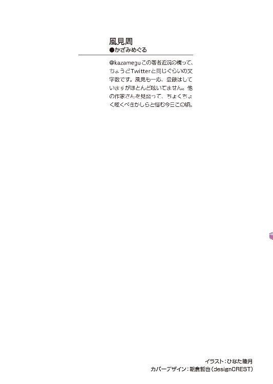
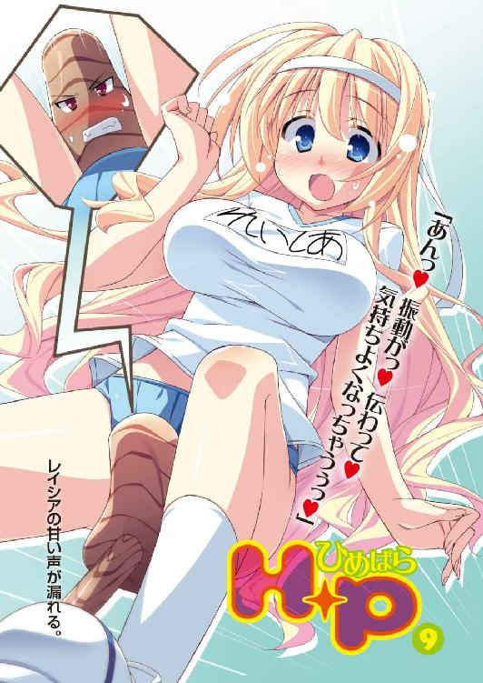
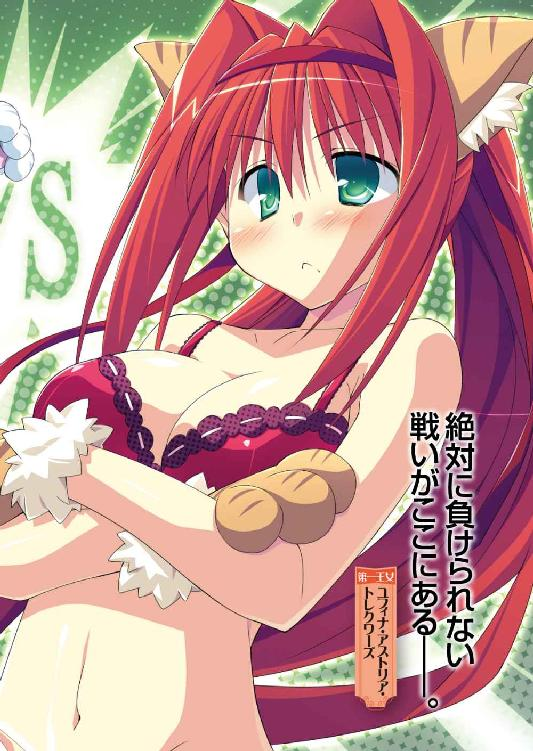
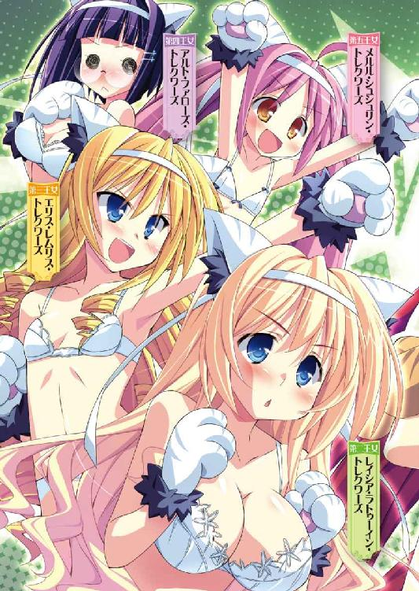
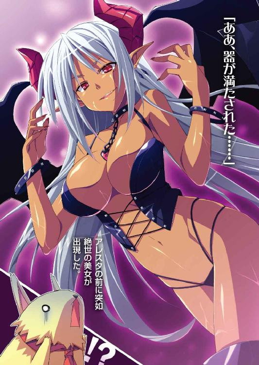

Ｈ＋Ｐ
─ひめぱら─
風見 周

富士見ファンタジア文庫
本作品の全部または一部を無断で複製、転載、配信、送信したり、ホームページ上に転載することを禁止します。また、本作品の内容を無断で改変、改ざん等を行うことも禁止します。
本作品購入時にご承諾いただいた規約により、有償・無償にかかわらず本作品を第三者に譲渡することはできません。
本作品を示すサムネイルなどのイメージ画像は、再ダウンロード時に予告なく変更される場合があります。
本作品は縦書きでレイアウトされています。
また、ご覧になるリーディングシステムにより、表示の差が認められることがあります。
口絵・本文イラスト ひなた睦月
目 次
プロローグ
カルタギア帝国の女帝が住まう《黒炎城》。
お城で働く数千人もの女官たちに、『城内で最も不気味な場所はどこか？』というアンケートを採ったとしよう。
城の西側地下にある拷問部屋や、処刑施設である《ゴルニアの壺》。複数のモンスターを合体させ、新たな兵器を作り出す研究施設《合成獣練製所》などの名前があがるに違いない。
そして、もう一カ所。間違いなく上位にランクインする施設がある。
黒炎城の地下深くに作られた、牢獄だ。
魔法灯の光に照らされた、薄暗い石造りの廊下。岩盤をくり抜いた際につけられたノミ跡が残る壁。地下水がわずかに浸み出し、微かな水音が響いている。
鉄格子で区切られた牢獄の中には、簡素なベッドや洗面設備があるだけ。現在は収監されている囚人はほとんどいない。だが、壁に書かれた『助けて......』という小さな落書きや、床にうっすらと残る黒っぽい染みを見るたびに、女官たちは震え上がってしまう。
ただでさえ、地下牢は恐怖を感じるスポットだ。しかし、その夜はさらに不気味な雰囲気が高まっていた。
「しくしくしく......。めそめそめそめそ......」
悲しげな少年の泣き声が響き続けていたのである。
黒炎城は後宮を除いて男子禁制。本来なら、男の子の声が聞こえるはずなどない。泣きむせぶ声を耳にした者は怨霊の慟哭かなにかと勘違いして、腰を抜かしてしまうだろう。
その泣き声を発しているのは、怨霊とはほど遠い外見の持ち主だったのだが──。
「うわーん！ ごめんなさ～～～い！ 僕が悪かったよ～～～っ！」
涙を流していたのは、白い毛並みのトビカピバラだった。
長い耳とずんぐりとした胴体。黒い鼻とクリクリした瞳。トビカピバラはペットとしても人気のある可愛らしい動物である。
人語を話すトビカピバラなんて、この世界にはたった一匹──いや、一人しかいない。
彼は魔法によってカピバラに姿を変えられてしまった少年。
名前をアレスタという。
「えぐえぐ......。全部、僕のせいだよね......」
アレスタはプニプニとした肉球のついた手で鉄格子を握りしめて泣きじゃくっている。かれこれ丸一日くらい泣き通しだ。
いつも元気でえっちなカピバラ少年の顔は、すっかり憔悴仕切っている。
長い耳はだらりと力なく垂れ下がり、泣き腫らした瞳は真っ赤。黒い鼻からは鼻水がちょっぴり垂れていた。
ずびずびと鼻をすすりながら、アレスタは嘆き続ける。
「うぅ......ごめんよ、恭太郎......。ごめんなさい、姫さま......ピコル師匠......」
細かい経緯は割愛するけれど......アレスタがヘマをして人質ならぬカピバラ質にとられてしまったために、黒炎城から脱出を果たそうとしていた恭太郎たちの計画を台無しにしてしまったのだ。お城に潜入していたお姫さまやピコル師匠も、カルタギア軍に捕まってしまった。
獄吏の女兵士（ゴツいお姉さん）にチラッと聞いた話だと、ユフィナさまやピコル師匠は処刑されてしまうそうだ。《ゴルニアの壺》とかいう恐ろしい処刑施設が、数百年ぶりに使われるらしい。
ゴパァッ！──瞳から涙が迸る。身体中の水分が涙腺から流れ出てしまいそうな勢いだった。
「僕のせいで姫さまが処刑されちゃうなんて......！ 申し訳なさすぎて、もうトレクワーズには帰れないよ！ うわ～～～～～～んっ!! 僕を許してください～～～っ!!」
「コラっ！ 大人しくしていろ！」
見回りの兵士が槍で鉄格子を叩いた。甲高い金属音が響き渡る。
「うひゃっ！ ごめんなさいっ！」
大慌てで飛び退り、牢屋の床におでこを擦りつけて頭を下げた。
「いつまで泣いているんだ！ うるさいぞ！」
「すいません、ごめんなさい、勘弁してください！」
「あまり騒ぐようなら、メシ抜きにするからな！」
女兵士は冷たい声で言い放つと踵を返した。軍靴の響きが遠ざかっていく。
泣いちゃダメだ......そう思っていても、涙が溢れ出てくる。
軋むベッドによじ登ったアレスタは、泣き声が漏れないように、薄っぺらな毛布を頭から被った。
目の幅涙を流しながら涙声で呟く。
「ぐすん......こんなことになるなら、トレクワーズ王国にずっといればよかったよ......。コッソリついてくるんじゃなかった......」
カピバラ少年は毛布を被ったまま顔を上げ、遠い目をした。
牢獄には窓すらない。ゴツゴツとした石造りの天井があるばかり。
彼の眼差しは天井の向こう側──遠く離れたトレクワーズ王国に向けられている。
「あの頃の生活に戻りたいよ......。毎日がすっごく楽しかったもんな......」
アレスタは楽しかった後宮での生活に想いを馳せるのであった──。
第一話 勇者と魔王と破邪のハサミ
（やめてくれぇ～～～～～っ!!）
夜。トレクワーズ王国。後宮。
ベッドの上に横たわった神来恭太郎は、言葉にならない叫びをあげた。
魔法によってカラダが麻痺させられていたため、声を出せないのだ。
彼の周りには四人の王女さま。全員が金色に輝くハサミを持っている。
「恭太郎おにいちゃ～ん♪ 服をチョキチョキしましょ～ね～♪」
ちぃ姫さまがニコニコしながら恭太郎のシャツをハサミで切っていく。
「少しの辛抱ですよ、恭太郎さまっ！ 私が服を脱がして差し上げますからねっ！」
レイシアは恭太郎を気遣うように声を掛けつつ、ズボンの裾にハサミを入れた。
「ああもうっ、この私がどうしてこんな面倒なことをしなくちゃいけませんのっ!?」
口では文句を言いつつも、第三王女のエリスは真剣な顔で恭太郎のシャツを切り取る。
「恭太郎さまの服を切るなんて......ドキドキしちゃいますぅっ」
第四王女のアルトは顔を真っ赤にしながら、恭太郎のシャツにズボンにハサミの刃先で穴を開けていた。
「見てみてー♪ ☆型に切れたよー♪」
「メルルっ、遊んでちゃダメですよっ」
「恭太郎の胸板が見えて来ましたわ。い、意外とたくましいですわね......」
「私はズボンを 型に切っちゃいました。はわゎゎゎ......」
型に切っちゃいました。はわゎゎゎ......」
恭太郎の服はほとんどが切り取られてしまった。わずかな布がカラダを覆ってるだけ。ハダカよりも恥ずかしい格好だ。
メルルちゃんはハサミをチョキチョキと鳴らしながら、ワクワク顔で宣言する。
「残ってるのはぱんつだけだよ～♪ これも脱いじゃおうねっ」
（ダメー！ ぱんつは堪忍してくれー！）
動けないカラダで絶叫する恭太郎。
女の子たちによってたかって服を切り取られハダカに剝かれてしまうなんて──あまりにも倒錯的だ。厳格な姉上に知られたら、その場で切腹を申しつけられるレベルの変態プレイだろう。
だが、こんなことをされているのには、のっぴきならない理由があるのだ。
それを知るためには、今日のお昼くらいに時間を巻き戻す必要がある──。
×××
「いきますよ～、恭太郎さま～」
──ぱこんっ。
テニスウェアに身を包んだ第二王女のレイシアがサーブを放った。
キラキラと光るボールが恭太郎の打ちやすい位置に飛んでくる。
「──ほっ！」
ラケットを振り、ボールを打ち返した。星くずのような微かな光を放ちながら、相手側のコートにボールが飛んでいく。
レイシアとダブルスを組んでいる第三王女のエリスがラリーを続けつつ。
「なかなかやりますわねっ！」
「初めてとは思えないよーっ！ すごーい！」
エリスの打った球を器用にラケットで返しながら、第五王女のメルルも褒めてくれた。
後宮の一角にある、室内テニスコート。
教育係であるピコル師匠の薦めで、王女さまたち三人とテニスをして汗を流すことになったのだ。
トレクワーズ王国のテニスは、現代日本のそれとほとんど変わらないものだった。
唯一違う点はボールに魔法が掛けられているのか、打つたびに流星みたいな美しい光を放つ点だけだ。
ラケットやボールと同様に、王女さまたちが身に着けているテニスウェアも現代日本のそれと同じだった。
レイシアが薄いブルー。エリスは薄いラベンダー色。メルルは淡い黄色。
ヒラヒラとしたミニスカート。ウェアはぴったりとフィットしており、カラダのラインが浮き立っている。
三人とも胸元にはなぜか、大きめなクマのアップリケがついていた。
デフォルメされたかわいいクマなのだが、目がつり上がり口元には牙が光っていて表情だけが悪っぽい。
レイシアの胸に着けられたクマの表情は特に極悪で、頭には王冠がついていた。
ウェアを用意してくれたピコル師匠によれば《あくまのアップリケ》という名前のマジックアイテムらしい。
というか、なんで《あくま》なんだ？ 嫌な予感しかしないんだが......。
「そっちに行きましたわよ、恭太郎っ！」
エリスの打ったボールが飛んでくる。
「──それっ！ あっ、しまった！」
強く打ちすぎてボールが高く上がった。
箒星のように光の尾を引き、ボールがコートの後ろの方へと飛んでしまう。
ラインをオーバーするのは間違いない。
「お任せくださいっ」
普段はおっとりとしているレイシアが、ボールに向かって走った。
「──えいっ！」
振り向きざまに器用にボールを打ち返す。
見事、煌めく光をまき散らしながらボールがこちらのコートに戻ってきた。
「おおっ、すごい......！」
思わず見惚れてしまった恭太郎。
ボールを打ち返すのを忘れてしまった。
とんっ──キラキラ輝くボールが彼の横でバウンドして飛んでいく。
「コラ、恭太郎っ！」
エリスがラケットを持ったまま腰に手を当てて怒鳴った。
「せっかくレイシアが返したのに、ラリーが終わってしまいましたわっ」
「す、すまん！ まさか、あんなボールが打てるとは思わなくて......見惚れちゃったよ」
「メルルもびっくりしたよ！ レイシアおねえちゃん、テニス上手だね～っ！」
ちょっぴり息を荒くしながら、レイシアは照れたように笑った。
「ありがとう、メルル。これもきっと、ピコルさまのくださったウェアのおかげです」
「そのウェアって特別製なのか？」
「テニスウェア自体は普通のものですわ」
タオルで汗を拭きつつ、エリスは胸についている悪党顔したクマのアップリケを指さす。
「この《あくまのアップリケ》には、特殊な力が宿っているそうですの」
レイシアは大きく隆起した自分の胸元を見下ろして。
「魔法の力でウェアを適度に締め付けて、胸が揺れないようにしてくれるんだそうです」
彼女はとんでもない爆乳の持ち主だ。水色のテニスウェアは大きく盛り上がり、今にもはち切れそうに思える。
巨大すぎる胸のせいでかけっこは苦手だと嘆いていた。
でも、今は機敏に動けてる。
アップリケに込められた魔法の力により、胸が適度にホールドされていたから走り回ることができたんだろう。
「私は胸が大きいから、特別に効力が強いアップリケをくださったんですよ」
レイシアのアップリケのクマが小さな王冠を被ってるのは、より強いホールド力を持っている証なのかも知れない。
「へえ、それってなかなか使えるアイテムだったんだな。でも、なんで《あくまのアップリケ》なんて不穏な名前なんだろう？」
スポーツドリンクをストローでちゅーっと吸っていたメルルちゃんは、嬉しそうに手をあげた。
「はいはい！ メルルにはわかるよー！ たぶんね、コレを見た人の言葉が元になってるんだよっ！」
「見た人の言葉......ま、まさか！」
「『あ、クマのアップリケ～っ！』にゃはは、面白いよねっ♪」
ダジャレかよ......。
脱力してしまう恭太郎を見つめて、ちぃ姫さまはイタズラっぽく笑った。
「このアップリケには、もう一つ面白いとくちょーがあるんだよ。実はね......このウェアの下ってなんにも着けてないんだっ」
「......え？ どういうコト？」
「ブラもぱんつも着けてないってコト 《あくまのアップリケ》の効果をじゅーぶんに発揮させるためには、ぱんつとブラはない方がいいんだってさっ」
「ええーっ!?」
見ちゃイケナイとわかっているのに、王女さまたちの胸元に視線が行ってしまう。
言われて見れば、ウェアの胸元に微かにポツっとなにかが浮いてるように見えた。
ほ、本当にブラをつけてないのか!?
そそそ、それじゃ──ゴクリと生唾を飲んでしまう恭太郎。
まさか、その短いスカートの下は『すっぽんぽん』なのか......ッ!?
「ねぇねぇ、恭太郎おにいちゃん」
オマセなちぃ姫さまは、ウィンクしながらこちらにおしりを向けた。ミニスカートの裾に指をかける。
「気になるなら、スカートの中を見せてあげようかぁ？」
「だだだ、ダメだって！」
「──えいっ！」
メルルはちょっぴりスカートをめくる。
慌てて目を閉じた刹那──フリルで飾られた白いぱんつみたいなものが見えたような気がした。
......ノーパンじゃなかったのか？
レイシアが赤い顔で補足する。
「ご安心ください。もちろん、アンダースコートははいてます」
アンダースコートはブルマの親戚みたいなものだ。本来は下着の上から重ねばきをするようなのだが、《あくまのアップリケ》を機能させるために直ばきしてるんだろう。
「えへへ、期待しちゃった？ おにいちゃんが望むなら、のーぱんでテニスしてあげてもいいんだけどね♪」
「そんなこと望まないって！」
「コラ、恭太郎っ！ なにを鼻の下を伸ばしてるんですのっ！」
眉を吊り上げて、エリスがテニスラケットを突きつけてくる。ラケットの先端を恭太郎のほっぺにグリグリ押しつけて。
「レイシアの胸や、メルルのスカートにばかり注目しないでいただきたいですわねっ」
「エリスおねえちゃん、『私の方も見なさい』って素直に言えばいいのにぃ♪」
「なななななっ!? なにを言い出しますの！」
「恭太郎おにいちゃんに『かわいいよ～』って、ほめてほしいんでしょ？」
「ち、違いますわっ！ そんなことは微塵も考えてませんのっ！ 私には、このような庶民的な服装は似合いませんしっ！」
顔を真っ赤にしてエリスは否定する。
恭太郎は鼻の頭を搔いた。チラッと横目で彼女の服装を眺める。
エリスも目のやり場に困るくらいにテニスルックが似合っていた。
脚線美の見事さは、筆舌に尽くしがたい。
彼女だけは短いソックスではなく太ももの辺りまで覆うニーソックスをはいているのだが......スカートとニーソックスが作り出す絶対領域にはドキドキせずにはいられない。
「あーその、なんというか......似合ってないってことはないよ。むしろ、すごくイイ感じだと思う」
「ほ、本当ですのっ!?」
「ああ、ホントだよ。お世辞を言えるほど、俺は器用じゃないからな」
すると、途端にエリスの顔がぱぁっと明るくなった。
うれしそうな微笑みを隠すみたいに、プイッと横を向いて。
「と、当然ですわっ。このエリス・レムリス・トレクワーズに着こなせない服装なんてありませんのっ！」
「ねえねえ、恭太郎おにいちゃん！ メルルは？ メルルは？」
黄色いテニスルックのメルルちゃんは、クルンと回って見せた。短いスカートが翻る。
元気のいいちぃ姫さまには、これ以上ないってくらいにテニスウェアが似合っていた。
「メルルちゃんも、すごく可愛いよ」
「うわーい、やったぁっ♪」
ぴょんと飛び上がって全身で喜びを表現するメルルちゃん。
妹たちのようすを見ていた第二王女のレイシアは、どうしようかと迷うみたいに首を巡らしていたけれど。
「あ、あの......恭太郎さまっ......」
ドレスでお辞儀をするみたいにミニスカートをちょこんと摘み、恭太郎に向かってはにかむように微笑んだ。
レイシアも褒めて欲しかったんだろう。
そんな王女さまのようすはあまりにもキュートで、恭太郎も顔が熱くなってしまうのを感じた。
「も、もちろん、レイシアも似合ってるよ。かわいいと思う」
かああああああああああああああっ。
照れくさいのか、レイシアは耳の先まで真っ赤に染まってしまった。恐縮したように、ペコペコと頭を下げる。
「す、すみません......。無理矢理に言わせてしまいまして......妹たちが、ちょっぴりうらやましくて......あぅあぅ......」
なんだか猛烈に気恥ずかしくなったので、恭太郎はボールを拾い上げた。
「さあ、テニスを再開しようぜ」
「いいですわよっ！ 恭太郎も慣れてきたみたいですし、次は試合形式にしましょうっ！ 負けませんわよっ！」
再びテニスコートへと戻る。
今度はダブルスで試合をすることとなった。
初心者の恭太郎の目から見ても、ゲームはなかなか盛り上がったと思う。
結局、恭太郎が足を引っ張ったために《恭太郎＆メルル》ペアの負けになってしまったけれど、それでもとても面白かった。
《あくまのアップリケ》のおかげで王女さまたちは、とても動きやすいようだ。
大きすぎる爆乳のせいで走ることが苦手なレイシアは、特に快適みたいだな。
「動くのがすごく楽ですっ。戦闘用のドレスにも《あくまのアップリケ》をつけたいくらいですよっ！」
第二王女は大きな胸の前で手を組み合わせ、楽しそうに微笑んでる。
恭太郎はタオルで汗を拭いながら、ココロの中で謝った。
（すいません、ピコル師匠がテニスを薦めるなんて......ひょっとしたら罠があるかもしれないと疑ってましたけど、純粋にテニスを楽しませようとしてくれたんですね）
疑心暗鬼もほどほどにしなきゃいけないなと反省する恭太郎だったのだが。
──甘かった。
トレクワーズの首都トレクロの名物チョココロネに練乳をたっぷり掛けたシロモノよりも、恭太郎は甘かった。
お世継ぎづくりのためなら一切の妥協を許さない後宮のヌシたるピコルが、罠を仕掛けていないハズがないのだ!!
一時間ほどテニスに興じ、お開きということになった。
「すごく楽しかったですね。またテニスをしたいです」
「うんっ。いっぱい汗をかいちゃったっ！」
「ウェアが汗でびっしょりですの。早くシャワーを浴びたいですわっ」
「それじゃ、恭太郎おにいちゃんっ。また後でね～♪」
王女さまたちは、テニスコートに隣接した王族用の更衣室へと歩いていく。
「......ふむ。テニスってのは良い運動になるな。日頃の剣の鍛錬に取り入れてもいいかもしれない。瞬発力と持久力を鍛えられそうだ......」
サムライ少年らしいことを呟きながら、恭太郎も王仕用の更衣室へ向かおうとしたとき。
お姫さまたちがコートへと駆け戻ってきた。
「たたた、大変ですっ！ 恭太郎さまっ！」
「いったい、どうしたんだ!?」
「テニスウェアが脱げませんのッ!!」
「更衣室に、ししょーからのこんな手紙が置いてあったんだよぉっ！」
『テニスはどうでしたかな？ 楽しんでいただけましたかな？
一つ、言い忘れていたことがありましたので書き置きしておきますのじゃ。
《あくまのアップリケ》をつけた衣服は、アップリケを切り取らない限り、脱ぐことができませんのじゃ!!
しかも、切り取るには特殊な専用ハサミ《熊殺し》を使う必要がありますのじゃ。
《熊殺し》は男性だけが使える、不思議なハサミですじゃ。
恭太郎に頼んで《あくまのアップリケ》を切り取ってもらってくだされ。よろしくお願い致しますのじゃ』
文末にはピコル師匠のサインの代わりに、丸印で囲んだ《ピ》の文字があった。
「ウェアどころか、アンダースコートも脱げないの！ びっくりしちゃった！」
「手紙と一緒に、これも置いてありました」
眉をハの字にしつつ、レイシアがハサミを差し出す。
全長二〇センチほど。金色に輝くハサミだ。要の部分に、両目が×印になった熊が彫刻されていた。
ハサミを見つめながら、恭太郎はこんがらがった頭の中を整理する。
えーっと、つまり、だ。
１、《あくまのアップリケ》を切り取らない限り、テニスウェアは脱げない。
２、アップリケを切り取るためのハサミは、男である俺にしか使えない。
３、すなわち、俺は──このハサミを使ってレイシアたちのテニスウェアを切り刻まなきゃいけない。
なるほど。よくわかったよ。あはははは。
恭太郎はテニスコートに突っ伏した。
「できるわけないだろ、そんなこと......!!」
ちくしょう！ 最後にとんでもない罠が隠されていやがった！ ピコル師匠め!!
「服を切られるなんて恥ずかしいですけど......やってもらわなくては困りますわっ！」
エリスが自分の肩を抱いた。微かにカラダを震わせる。
「このまま汗だくのウェアを着ていたら、風邪を引いてしまいますのっ！」
「早く着替えたいから、ひと思いにやっちゃってよ、恭太郎おにいちゃん！」
「お願いします、恭太郎さまっ」
確かに、着替えないわけにはいかない。
そのためには恭太郎が手伝うしかない。王宮内には彼しか男性がいないのだ。
いや、厳密に言うならアレスタがいるが......スケベな彼と交代するのは気が引ける。
くそっ、俺がやるしかないのか......！
恭太郎は力なく立ち上がった。
「わかった。すぐに切り取るから、少しだけガマンしててくれ」
「私は後でいいです。妹たちから切り取ってあげてください」
まずは、メルルちゃんのアップリケから切り取ることになった。
ちぃ姫さまとベンチに並んで腰掛ける。
「や、優しくしてね、おにいちゃん......」
ドキドキしてるみたいに、微かに瞳を潤ませて恭太郎を見つめてくる。
そして、ぺったんこな胸をこちらに突き出してきた。
しっとりと汗に濡れた薄黄色のウェアは、メルルちゃんの幼いカラダのラインを浮き立たせている。ほんのりと膨らんだおっぱいや、先端のポツっとしたなにかがクッキリわかるほどだ。
ゴクリ──生唾を飲み込んでしまう。
（なにを動揺してるんだ！ 落ち着け、神来恭太郎！ 手元を狂わせて乙女の肌を傷つけたら、その場で自刃せざるを得ないぞ！）
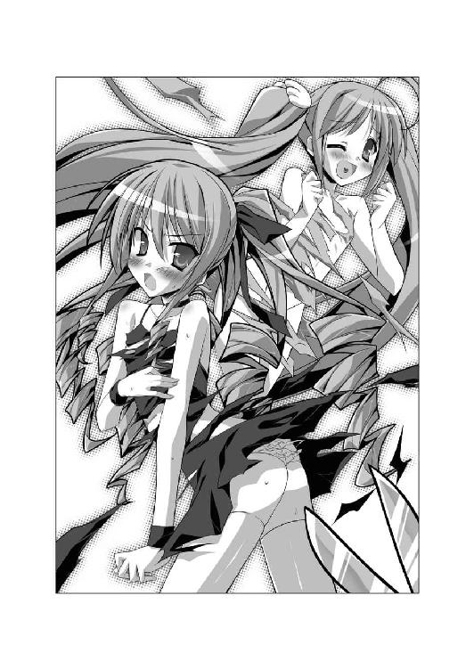
懸命に平静を保ちつつ、《熊殺し》をかまえる。
「それじゃ、切るからね」
震える刃先をメルルちゃんの左側の胸元に近づけていった。
指先でウェアの布地を摘み──ちょきんっ。
小さく切れ込みを入れる。
そこからゆっくりとハサミを動かし、布地を丸く切り取っていった。
「はうぅ......」
緊張しているからだろうか。涙目のまま、メルルちゃんはプルプル震えていた。
半分ほど切り進んだところで、恭太郎は地蔵のように固まった。
「............!!」
《熊殺し》を手にしたまま、絶句してしまう。
幼いメルルちゃんの服にハサミを入れていくというのは、どうにも変態ちっくで。
健康的なテニスウェアが切り裂かれて穴が開いているようすというのは、とんでもなく扇情的で。
小さな穴から垣間見える、メルルちゃんのスベスベした白い肌──そして、ぷっくりとした下チチの膨らみは、絶妙なチラリズム加減で恭太郎の劣情を刺激してきて。
（服を切るってのは......とんでもなくエロい行為なんじゃないのか!?）
懸命にココロを落ち着けようとしたけれど、興奮が抑えきれなかった。心拍数も血圧も上がりっぱなしだ。
恭太郎に追い打ちを掛けるように、ちぃ姫さまは熱っぽい吐息を漏らした。
「はふぅ......服を切られるなんて......脱がされるよりドキドキしちゃうかも......。メルル、ヘンな気分になっちゃうよぅ......」
だあああああっ。頼むから、えっちなコト言わないでくれぇぇぇ!!
悶絶しながら、恭太郎は必死に《熊殺し》を動かす。
あと少しで切り取れるというところまで切断したところで、メルルにお願いした。
「......メルルちゃん、胸を手で隠してくれないかな？」
《あくまのアップリケ》は胸の上にくっついている。
しかも、彼女はブラをつけていないのだ。
つまり──このままアップリケを切り取ればおっぱいが見えてしまうのである。
「う、うん......。こんな感じでいい？」
意外と素直に言うことを聞いてくれた。
メルルちゃんはウェアの穴からアップリケの下に手を入れ、胸元を押さえる。
「ＯＫ。じゃあ、一気に切り取るよ」
恭太郎は難手術に挑む外科医のような心境で、アップリケの周囲にハサミを動かした。
クマのアップリケを切り取る。
取り外す瞬間『グォー!!』と断末魔が聞こえる。直後、アップリケは黒い煙と化して消滅してしまった。
まぁるく切り取られたテニスウェアからは、ほんのりと膨らんだ左側のおっぱいが完全に露出してしまっていた。
手で隠しているから胸の先端は見えないとはいえ──やはり、とんでもなくえっちぃ。直視したら鼻血が出てしまいそうだ。
「ありがとね、恭太郎おにいちゃんっ」
恥ずかしそうに頰を染め、メルルちゃんは更衣室へと駆けていく。
（よ、ようやく終わった......！）
倒れ込むように、恭太郎はベンチにぐったりとカラダを預けた。
服に張り付いたアップリケを切り取るという作業だけなのに、猛烈に疲れてる。
でも、まだ一人目が終わっただけなのだ。
「つ、次は、私をお願いしますわね......」
ベンチに座ったエリスは、緊張したように頰を強ばらせていた。恭太郎に鋭い視線を向けてくる。
「あんまり私のカラダを見てはいけませんからねっ！ 目をつぶってやりなさいっ！」
「無茶いうなよ！ 目をつぶってハサミを使うなんて危ないだろ！」
エリスを安心させてやるために、恭太郎はできる限り真摯に言い聞かせた。
「心配するな。婦女子のハダカになど興味はないよ。これにかこつけて、エリスの肌を見ようなんて一切考えてないから安心してくれ」
王女さまは安堵したように表情を和らげる──かと思いきや、なぜかムッとしたように眉を吊り上げた。
「この無礼者っ！」
ラケットでコツンと恭太郎を叩いてくる。
「って、なんで叩くんだよっ!?」
「別にっ！ 意味なんてありませんわっ！」
プイッとそっぽを向いて、ブツブツと小声で呟いてる。
「......見たくないと言われたら、それはそれでムカつきますのっ。恭太郎の愚か者っ」
だったら、どうすりゃいいって言うんだ。まったく意味がわからないよ......。
「もういいですわっ！ さっさとはじめなさいっ！ ノロマなんだから！」
恭太郎の方へ、胸を突き出してくる。
「そ、それじゃ切るぞ......」
王女さまの肌を傷つけないよう、指先でテニスウェアをつまみ上げて刃先を入れようとした。
ウェアをつまむ瞬間──ぷにっ。
指先が胸に触れてしまう。
「......んっ」
「へ、ヘンな声を出さないでくれよ！」
ドキドキしちゃうじゃないかっ！
顔を真っ赤にして、エリスが抗議してくる。
「くすぐったかったんですのっ！ 恭太郎が触れるから悪いんですわ、バカバカっ！」
「た、叩くなって！ 俺が悪かったから！」
エリスのカラダに触れないように細心の注意を払いつつ、《熊殺し》を動かす。
アップリケを丸く切り取るのに要した時間は、せいぜい五分ほどだったろう。
しかし、恭太郎には永遠にも感じられた。
「よしっ、もう少しで切り取れるぞ。胸を手で隠してくれ」
「わ、わかりましたわ......」
メルルがしたのと同じように胸を隠してもらい──一気に《あくまのアップリケ》をウェアから切断した。
「終わったぞ。もう脱げるはずだ。風邪を引かないうちに着替えなよ」
「そ、そうしますわ。礼を言いますわね、恭太郎」
高慢ちきな王女さまも、その格好は恥ずかしいんだろう。逃げ出すように更衣室へと駆けていった。
よし、これで二人目が終わった......。
既に恭太郎は疲れ果てていた。フルマラソンを走りきったランナーでさえ、これほどには疲弊してはいないと思う。
残るは一人だけだ。一気に片付けるぞ!!
自らを鼓舞したのだが──
「最後は私ですね。よろしくお願いします、恭太郎さま」
ベンチにおずおずと座ったレイシアを見て、恭太郎は絶望的な気分になった。
レイシアは襟のついた水色のテニスウェアと、プリーツの入ったヒラヒラした同色のミニスカートをつけている。
ぴったりとフィットしたウェアに包まれた王女さまの爆乳は──とんでもない大迫力だった。
まろやかな丸みを持つ、大きな膨らみ。巨大すぎるバストが重力に負けずに美しいカタチを保ってる。双丘のテッペンには小さな突起がポツっと浮いていた。
左側のおっぱいを覆うように、王冠をつけたクマのアップリケが不敵に笑ってる。
アップリケを切り取れば、ウェアの穴から大きな胸が顔を出しちゃうだろう。
（服の上から眺めるだけで鼻血が出そうなのに、ウェアを切らなきゃいけないなんて......気が遠くなりそうだよ......）
「あ、あの......恭太郎さま、できれば急いでくださると助かります」
胸の前で両手を組み合わせて、レイシアがお願いしてきた。
控えめな性格の彼女が催促してくるなんて珍しいなと思いつつ、恭太郎は頷く。
「わかってる。すぐに作業するよ。ちょっとだけ耐えててくれ」
気合いを入れるために、両手で自分の頰を叩いた。
「はじめるぞ......！」
レイシアの爆乳に触れないように気をつけながら、ウェアをつまみ上げ──ちょきんっ。
布地に小さな穴を開けた。小刻みにハサミを動かし、アップリケの周りに切れ込みを入れていく。
ウェアに開いた穴からは、下チチの丸みが見えてくる。
魅惑の膨らみに魂を奪われそうだ。柔らかそうなおっぱいを指でツンツンしたいという衝動で頭が満たされそうになるが──理性を総動員して刃先に神経を集中。ただ無心に布を切っていった。
（ＯＫ、いい調子だ。このまま一気に終わらせるぞ！）
アップリケの周囲を半分ほど切ったところで変化が起こった。
『クケケケケケケケ!!』
アップリケのクマが不吉な笑い声をあげたのである。
「な、なんだ？......うおっ!?」
恭太郎は驚きの声をあげてしまった。
なんと、アップリケがウェアの上を移動しはじめたのだ!!
せっかく切れ込みを入れたのに、胸からオナカの方へと逃げてしまう。
クマのアップリケは、レイシアのおへその真上辺りで止まった。
「コイツめっ、動くんじゃないっ！」
ウェアのオナカ辺りに切れ込みを入れて、今度こそ《あくまのアップリケ》を切り取ろうとする。
けれど、またもや切っている途中でアップリケが笑い出した。
『クケケケケケケケケケケケケケっ!!』
滑るようにウェアの上を移動して、今度は肩の辺りに逃げてしまう。
「これじゃ埒があかないよ......」
困り果てる恭太郎の耳に、震える声が届いた。
「お、お願いです......。早くアップリケを取り外してくださいまし......」
レイシアが涙目で恭太郎を見つめ、懇願してくる。
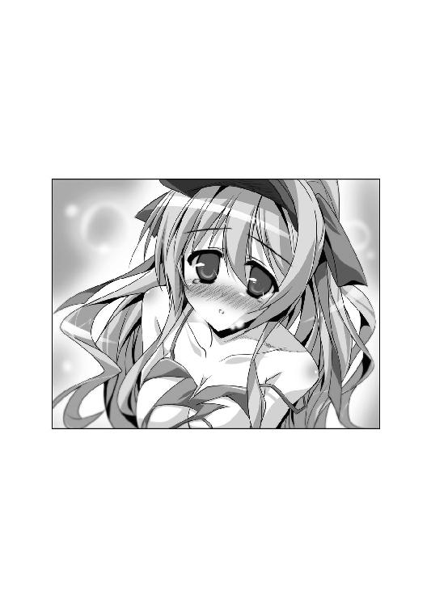
布地を切ることに集中していたので気付かなかったのだが、第二王女は小さく肩を震わせ、ギュッと拳を握りしめていた。太ももをもじもじさせている。
「どうかしたのか、レイシア？」
レイシアは恥ずかしそうにうつむいた。躊躇うように幾度も唇を嚙んだ後で、か細い声で告げる。
「お......おトイレ...行きたくなっちゃいました......」
「な......ッ!?」
アップリケを切り取らない限り、アンダースコートも脱ぐことができない。トイレに行くことはできないのだ!!
今すぐにでも、アップリケを外してあげたいところなのだが──
『クーケケケケケケケー!!』
悪い顔したクマのアップリケは、ウェアの上を縦横無尽に逃げ回る。
「待て、ちくしょう！」
指で押さえて切り取ろうとしたら、
『ガゥー！』
「痛っ!? 指を嚙みやがった！」
「大丈夫ですか？ 恭太郎さまっ？」
「平気だよ。でも......」
アップリケは恭太郎をあざ笑うかのようにテニスウェアの上で優雅に舞っている。
これじゃ切り取ることができない！
《あくまのアップリケ》って名前は、ダジャレによって命名されたと思ってた。
でも、それは間違ってたよ。
コイツは、悪魔だ!! 《悪魔のアップリケ》だッ!!
しかも、コイツは悪魔の王──魔王だ！ なんせ布の上を逃げ回る能力まで有しているんだから!!
「いったいどうすりゃいいんだよ......!?」
「あ、あの、恭太郎さま......」
額に微かに汗をかき、ちょっぴり呼吸を荒くしているレイシアが提案してきた。
「アップリケの逃げ道をふさいではいかがでしょうか......？」
「逃げ道をふさぐ？」
「はい。《あくまのアップリケ》は布地の上しか移動できないみたいです......。ウェアを切り取って、移動できる範囲を狭めれば、逃げられなくなると思います......」
例えるなら、氷の湖を滑って逃げ回るアイススケーターを捕らえるために、氷を割って移動できる場所をなくしてしまおう──そんな考え方だな。
「なるほど、ナイスアイデア！......って、ちょっと待ってくれよ！」
納得しかけた恭太郎だが、すぐさま首を横に振った。
「そんなことしたら、レイシアのカラダが見えちゃうだろ!!」
アップリケが移動できる範囲を狭める──レイシアのカラダを覆っているテニスウェアの布地を減らすということは、露出度を上げることとイコールなのだ。
「確かに、恥ずかしいですが......」
うるうる。うるうる。うるうるうるうる。
瞳を潤ませて恭太郎に懇願してくる。
「このままじゃ、もっと恥ずかしいコトになってしまいます......」
もっと恥ずかしいコト──それは、すなわち。
ゴクリ、と生唾を飲む恭太郎。
「......わかった。なんというか、その......重要な部分は残して切るようにするからガマンしてくれ」
「が、頑張りますっ」
「じゃあ、立ち上がってくれないか？」
レイシアはベンチからゆっくりと立ち上がる。太ももをすりあわせ、脚をモジモジさせていた。微かに鳥肌も立ってる。
王女さまは、弱々しい笑みを浮かべた。
「よろしくお願いします、恭太郎さま。テニスウェアを脱がしてください」
「ああ、任せてくれ」
恭太郎は《熊殺し》を構え、頷き返した。
仇討ちをお願いされた浪人のような気分で、憎きクマのアップリケを睨み付ける。
「覚悟しろ、魔王め！」
レイシアの前にひざまずき、薄いブルーのウェアに手を掛けた。
魔法の力によって、ウェアの裾はカラダに張り付いている。
だが、布地をつまみ上げてハサミを入れることはできた。
オナカの辺りに直径一〇センチほどの穴を開ける。白いオナカ＆かわいらしいおへそが丸見えとなった。
（これもレイシアを助けるためなんだ、いちいち動揺するな！）
自分に言い聞かせながら、その隣に同じように丸い穴を開ける。
背中側へも回り込んで、次々とハサミで布地を切り取っていく。
──ちょきちょき。ちょきちょき。ちょきちょきちょき。
テニスコートにハサミの音が響く。切り取られた水色の布地が山をなした。
「うぅ......はうぅ......」
唇をキュッと引き結び、拳を握りしめて、レイシアは必死になにかを堪えている。そのなにかは、恥ずかしさなのか尿意なのか──あるいは両方なのか。
恭太郎は素早くハサミを動かし続ける。
背中のほとんどの布地を切り取ることができた。
ごく細い布地が残っているだけ。キリンの編み目模様みたいだ。
その下にはレイシアの背中が見えている。透き通るような素肌にドキドキしながらも、声を掛けた。
「あとちょっとだからな。辛抱してくれ」
「は、はい......」
息を荒くしながら、レイシアはコクンと頷いた。
『グォォ......？』
逃げ場を無くした《あくまのアップリケ》はうなり声を上げつつ、肩を経由してレイシアの胸の方へと逃げていく。
オナカと背中の布地を切り取ったから、もはやそこにしか布が残ってないのだ。
恭太郎はレイシアと向かい合って立った。
レイシアの爆乳を撫で回すかのように、クマのアップリケが動き回ってる。
意を決して、恭太郎は王女さまの胸元に《熊殺し》を近づけていった。
胸の先端を覆う部分は残しつつ、それ以外の部分を丸く切り取っていく。
深い胸の谷間や、おっぱいの丸みが徐々に露わになっていった。
（こ、これは......！）
一瞬だけハサミを止めて、恭太郎は生唾を呑んでしまった。
健康的なテニスウェアが穴だらけになり、大きな胸が今にもこぼれそうな状態なのは......これ以上ないってほどに倒錯的で扇情的で蠱惑的で魅力的だった。間違いなく、全裸よりもエロい。
そして。
「は...っ！ は...ぁっ！」
眉を顰めて、唇を震わせ、レイシアは懸命におしっこを堪えてる。
真面目でおしとやかな王女さまがカラダをくねらせて身悶えてる姿も、どうしようもなくえっちく思えてしまった。
鼻の奥にツンとした痛みを感じて、慌てて鼻を押さえる。
（って、なにを鼻血を噴きそうになってるんだよ！ 興奮してる場合じゃないんだぞ！）
「ど、どうかなさいましたか、恭太郎さま......？」
「い、いや、なんでもない。ようやく追い詰めた。アップリケを切り取るよ」
「はい......。なんとか耐えきることができそうです......」
『グルルルル！ ガルルルル...！』
《あくまのアップリケ》は右の肩胛骨の上辺りのわずかなスペースでうなり声を上げていた。
上半身の布地は、紐状に残された部分を除けば、ほとんど残ってない。もはや逃げ場はないのだ！
「トドメだ！」
右胸の上の布地を切り取りに掛かる。
これで《あくまのアップリケ》騒動は終わりだッ!!
──そう思った。
けれど、悪魔の名は伊達ではなかった。
『グオォォォォォォ!!』
アップリケが雄叫びをあげた刹那、目を疑うような事態が起こったのだ。
「アップリケが跳んだ、だと!?」
切り取る前に、クマのアップリケが空中に飛び上がった。
クルクルと回転しながら、レイシアのスカートの上に着地。
「そんなのありかよッ！」
恭太郎の絶叫をよそに、《あくまのアップリケ》は悠然とスカートの上を動き回っていた。
震える手で、レイシアはテニスウェアの裾を摘んだ。涙目で訴える。
「だ、ダメです......。まだ脱げません......」
「スカートも切るしかないってのか？ 俺にはそんなこと......！」
レイシアは首を横に振った。
「構いませんっ。ひと思いにスカートも切ってください。こ、このままじゃ......。このままじゃ......！」
顔を真っ赤にして、絞り出すような声でレイシアは続けた。
「おしっこ......出ちゃいますぅ......！」
そ、それは困る。リアクションに困りすぎる！
レイシアは恭太郎以上にせっぱ詰まっているようだ。なんというスリルとサスペンス！
「おもらしするようなコトがあれば......レイシアは生きてはいけません......」
「お、大げさだよ、レイシア」
「いいえ......」
寒さを堪えるみたいにカラダを震わせながら、レイシアは恭太郎を見つめてくる。
「恭太郎さまの前で粗相をしてしまうくらいなら......レイシアは死んだ方がマシで......う、にゃっ...出ちゃ...う......っ!?」
「待て待てまてまて！ 待ってくれ！ わかった！ スカートも切るよ！ あと少しだけガマンしてくれ!!」
恭太郎はレイシアの前にひざまずいた。
ご先祖さま、姉上さま！ 今だけは俺を許してください！
ついでに、こんな罠を仕掛けたピコル師匠に天罰を与えてください！ できることなら、厳しめの罰でお願いします！
ありとあらゆる神仏に許しを請うた後で、恭太郎はミニスカートの裾を持ち上げた。
《熊殺し》を構え、スカートに縦に切れ込みを入れていく。
薄いブルーの布地が切り開かれ、純白のアンダースコートが姿を現す。
うっすらと汗をかいた、むっちりとした太もも＆レースで飾られた三角形の白い布地が作り出す造形美に目を奪われそうになった。けれど、その太ももがプルプルと震えていることに気付いて、我に返る。
もはやレイシアには一刻の猶予もないんだ。躊躇してる場合じゃない！
スカートを上部五センチほど残して、今度は横に向かってハサミを進める。
ちまちま切っていても埒があかない。いっそのことスカートの大半を切り落としてしまおうと考えたのだ。
「もう逃げ場はないぞ！ 観念しろ！」
ひざまずいたままレイシアの周りを回るようにして、スカートを切断する。
膝上四五センチ──布地の幅がわずか五センチにも満たないような超々ミニスカートをはいてるような状態になってしまった。
パンチラどころの騒ぎじゃない。常にアンダースコートの大部分が露出しているのだ。
だが、思い切って大部分を切り取ったおかげで、《あくまのアップリケ》を追い詰めることに成功した。
勝負はついた!!──かに見えた。
だが、魔王はしぶとかった。
『グワォオオオッ!!』
スカートの布地をクマのアップリケごと切断しようした瞬間、
「し、しまったッ!!」
恭太郎が最も恐れていた位置へとジャンプしやがったのだ。
そう──アンダースコートの上である。
「そこはマズイって......。切り取れないよ！」
レイシアのおしりの位置に陣取り、《あくまのアップリケ》は恭太郎を挑発するみたいに、うなり声を上げ続けている。
「もう......ダメれすぅ......」
もう限界ギリギリなのだろう。レイシアはテニスコートにうずくまってしまった。
「恭太郎さま......今まで、本当にありがとうございました......先立つ不孝をお許しください......」
「早まっちゃダメだ！ 気を確かに持って！」
「レイシアは......恭太郎さまに出会えて......幸せ...でし...た......」
「ダメだ！ 耐えるんだ、レイシア～～っ！」
いかん！ このままでは、レイシアはおもらししてしまう！
助けてあげるには──アンダースコートを切り取るしかないッ!!
「あと少しだけ耐えてくれ......」
「もう...ムリ......」
「大丈夫だ。きみならできる！ 呼吸を整えて！」
「ふぅ......ふぅ......」
「そうそう、その調子。気持ちを穏やかにするんだ」
「ひぃ...ひぃ...ふぅ...。ひぃ...ひぃ...ふぅ...」
「って、その呼吸法はダメ！ 逆に出やすくなっちゃうからっ！」
「本当に......限界なんですぅ......」
レイシアは半べそで懇願してきた。
「恭太郎さま......おもらししちゃうようなお姫さまでも......嫌わないで...ください......」
「もちろんだ。嫌ったりしないよ。......いや、俺がそんなことはさせない！ 魔王は俺が退治してみせるッ！」
恭太郎はレイシアの髪を優しく撫でてやった。それで、少しだけ王女さまは落ち着いたようだ。
意を決して、レイシアにお願いをした。
「四つんばいになって、おしりを俺の方に向けてくれ」
冷静になって考えれば、とんでもないセリフだ。だが、状況の切迫度合いを考慮して、平にご容赦願いたい！
「うぅ......恥ずかしいです......」
唇を嚙みつつも、テニスコートに膝をついた。
犬みたいに四つんばいになって、恭太郎の方におしりを突き出してくる。
アンダースコートに包まれた、プリッとしたおしりは、気が遠くなるくらいに魅惑的な丸みを帯びていた。今にもおしっこが出てしまいそうなんだろう。プリンとしたおしりが小刻みに震えてる。
しかも、犬のポーズを取るとレイシアの爆乳が重力に引き伸ばされて、さらに大きく目立ってしまう。紐状となったテニスウェアが辛うじて引っかかっているだけなので、今にも大事な部分がポロリしてしまいそうだ。
現代日本にいた頃は、カタブツだの朴念仁だのサムライ少年だのと呼ばれていた恭太郎だが、ほんの一瞬だけ我を忘れて襲いかかりたくなってしまった。
これがベッドの上だったら、間違いなくケダモノと化していたに違いない。
だが、今はレイシアの大ピンチなのだ。
「こんなポーズで......粗相をしてしまったら......。恭太郎さまにおもらしするところを全部見られちゃいます......。頑張って耐えなきゃ......」
王女さまは拳を握りしめて、懸命におしっこをガマンしてる。彼女を救ってやりたい気持ちが強かった。
《あくまのアップリケ》を睨み返し、聖剣を携えた勇者のように《熊殺し》を構える。
「これで、終わりだッ!!」
アンダースコートを指先でつまみ上げた。
「ひゃん...っ！」
レイシアがおしりをぷるんっと震わせる。
動揺しそうになるが、鋼鉄の精神力でアンダースコートにハサミを入れた。
『グルルルル...！』
唸りながらアンダースコート上を逃げようとするクマを指で押さえつける。
『ガウッ!!』
指先に嚙みついてくるが──恭太郎は痛みを堪えながら笑みを浮かべた。
「いくらでも嚙めよ。もう逃がさないぞ！」
指を嚙まれたまま、アンダースコートを丸く切り取っていく。
そして──ちょきんっ！
アップリケをアンダースコートの布地ごと切り取ることに成功した。
『グォ────────ッッッ!!』
恭太郎とレイシアを苦しめ続けた《あくまのアップリケ》は、一際大きな断末魔の叫びを上げ、煙となって消滅したのだった。
「ふぅ......終わった......」
ハサミを手にしたまま、恭太郎は額に滲んだ汗を拭う。
レイシアに『さあ、もう大丈夫だ。トイレに行きなよ』と伝えようとした、そのとき。
「ねえ、みんな～！」
今現在、このウィッチェリア大陸において、最も来て欲しくない人物がテニスコートに駆け込んできた。
「テニスするんなら、私も混ぜなさいよっ！ スポーツするの大好きなんだからっ！」
「ゆ、ユフィナっ!?」
テニスウェアに身を包んだ第一王女が恭太郎たちの方へと駆け寄ってくる。
そして、恭太郎とレイシアを見て、石像みたいに固まった。
「──ななななななっ!? なにしてんのよ、あんたたちーっ!?」
変態的な行為に及んでいたと勘違いされてしまっても、仕方がないだろう。
「お、落ち着いてくれ！ レイシア、状況を説明してやってくれよ！」
きっと恭太郎の言葉なんて聞く耳は持たないだろう。妹姫に説明してもらおうと思った。
と・こ・ろ・が。
レイシアは今にも泣き出しそうなほどに瞳に涙を溜めて、よろよろと立ち上がった。
「あぁ、もうダメです......！ ガマンできません!!」
カラダを隠すようにタオルで押さえながら、よたよたとテニスコートから駆けていってしまう。トイレへと走って行ったのだ。
大きく頷いたユフィナは、絶対零度の眼差しで睨み付けてきた。
「なるほど......。よっくわかったわ。嫌がるレイシアの服を無理矢理ハサミで切ってたってワケね......」
「違うって！ これにはのっぴきならない理由があるんだよ！ 俺も被害者なんだ！」
「問答無用よ!!」
《烈火の王女》は、手を横に伸ばした。
巨大な手甲が装着され、炎に包まれた大剣が出現する。
「えっちなのは絶対ダメなんだからね、このドヘンタイ──ッ!!」
ああ、なるほど。
恭太郎は一つ頷いて、ゆっくりと瞳を閉じた。
（またこの展開か......。というか、俺は悪くないと思うんだけどなぁ......）
ココロの中で深いため息を吐いた恭太郎の耳に、ユフィナの鋭い声が響く。
「【火竜演舞】!!」
×××
「入りますよ、ピコル師匠！」
二時間後。ノックもそこそこに恭太郎は後宮にある教官室へと飛び込んだ。
「今日という今日は我慢がなりません！ 文句を言わせてくださいっ！」
「どうしたのじゃ？」
ピコル師匠は教卓について、のんきに本を読んでいる。
恭太郎は後宮のヌシに詰め寄り、教卓をドンと叩いた。
「どうしたもこうしたもないですよ！ なんですか、あのアイテムは！」
「当然、強制的に服を切り裂くプレイを行わせる道具なのじゃ」
「なんでそんなものを......！」
「ストッキングを破る程度のコトなら、どこのご家庭でも行われる普通のプレイなのじゃ。今後、恭太郎も行うやもしれぬ。姫さまがたが驚かれぬよう、予行演習をしていただいたのじゃよ」
「なにをもっともらしく変態的なコトを言ってるんですか！ 俺はそんなコトじゃ興奮なんてしませんよ！」
「ほぅ？ では、恭太郎は姫さまのテニスウェアを切ってる時もドキドキしなかったと言うのかのぅ？」
「うぐっ......！」
ドキドキしちゃったのは事実だけど......。鼻血噴きそうになったけど......。
「ふゥははははー！ 恭太郎め、ウソのつけぬ男じゃなぁ！」
「笑ってる場合ですか！ おかげで死にかけたんですよ！ ユフィナに魔法をぶっ放され、城壁に叩きつけられて、そのままお堀の中に飛び込んで──かすり傷で済んだから良かったものの！」
「......むしろ、かすり傷で済んだことが驚きじゃ。不死身にもほどがあるのじゃ」
「今日こそはえっちな展開にはならないと思ったのに......だまし討ちは卑怯者のするコトです！ あんなアイテムは二度と使わないでください！」
「あんなアイテムというのは......」
ピコル師匠は教卓からなにかを取り出した。恭太郎が着ているドレスシャツに素早くペタペタと三枚ほど貼り付ける。
「この《あくまのアップリケ》のコトかの？」
「って、どうして俺の服に貼り付けてるんですか！」
「いや、余ったからもったいないな～と思ったのじゃ」
「は、剝がれない!? 服も脱げなくなってるし!!」
「なぁに、案ずるでないのじゃ」
ピコル師匠は大きなハサミを取り出した。恭太郎が使ったものと違いピンクゴールドに輝いている。
「女性だけが使える専用ハサミ《熊退治》も存在するのじゃ。今度は姫さまがたに恭太郎の服を切ってもらうがいいのじゃ。ふゥははははは──っ！」
「や、やぶ蛇だ......!!」
そんなこんなで。
今度は逆に、恭太郎の服をお姫さまたちに切ってもらう羽目に陥ったのである。
その詳細を記すのはやめておこう。
主に、恭太郎の名誉のために。
ハーレム講座☆ピコルの穴！ 特別編・その１！
アレスタ（以下、ア）「みんなー！ ピコル師匠プレゼンツ、ハーレム講座☆ピコルの穴！ はっじまっるよー！」
ピコル人形（以下、ピ）「............」
ア「はい、というワケで！ ピコル師匠がカルタギア帝国に捕まっちゃったから、今回は僕が一人でコーナーを担当しちゃうぜっ！ やりたい放題だよ、きゃっほーぅ！」
ピ「............」
ア「いちお、講師役としてピコル師匠の人形を用意したよっ！......え？ 人形はしゃべらないだろうって？ あははは、心配はいらないよ。このピコル人形は優れものなんだ。背中にあるスイッチを押すと──」
ピ「ソウナノジャ！（スイッチを押す）」
ア「こんな風に師匠の声で話すんだよ。この人形があれば、ピコル師匠がいなくたってピコルの穴はできちゃうよね？ そうでしょ、師匠？」
ピ「ソウナノジャ！（スイッチを押す）」
ア「今回はピコル師匠に代わって、僕が質問に答えるよっ。僕ってば、子どものころはモテモテだったからねっ！ どんな悩みにだって答えられるに決まってるよ！」
ピ「ソウナノジャ！ ソウナノジャ！（スイッチを押す×２）」
ア「えへへへ、そんなに褒められたら照れちゃいますよぅ。よーしっ、それじゃ張り切って質問に答えちゃおう！ まず最初のお便りから～......って、できるかーぃッ！」
ピ「ナノジャーっ!?（人形を床に叩きつける）」
ア「うわ～～～ん！ 一人じゃ無理です～っ！ 師匠～っ、ピコルの穴だけでいいから参加してくださいよっ！ これまでだって、ストーリーなんて軽～く無視してピコルの穴は続けてきたじゃないですかーっ！ 寂しいよーっ！」
ピ「............（人形は床に転がったまま）」
ア「ぐすっ、ぐすっ......。えぐっ、えぐっ......（ピコル人形を見つめる）」
ピ「............（人形のホコリを払い、もう一度椅子に座らせる）」
ア「うぅ......泣いてたって仕方ないですよね。僕のせいでみんなが捕まっちゃったんだもん。......よしっ、頑張りますっ！ たった一人でもピコルの穴を続けてみせますよ！ ピコルの穴に穴を開けたりしません！ いやー、うまいこと言っちゃったナー！」
ピ「ソウナノジャ！（スイッチを押す）」
ア「僕にできることで、みんなに喜んでもらえることって言ったら......一つしかないよね！ ぱぱらぱっぱぱーん！ 《妄想カメラくん１号》！」
ピ「ソウナノジャーっ！（スイッチを押す）」
ア「頭になにかを思い浮かべながらシャッターを切ると、そのイメージを写真に撮ることができるマジックアイテムなんだ。どんなえっちな写真でも思い通りに撮影できちゃうんだよ！ 今回のピコルの穴は特別編として、えっちな妄想写真を撮りまくろうと思います！ 題して、《春だ一番、妄想カメラくん祭り！》！ どんどん、ぱっふぱふー！」
ピ「ソソソソソソソソソソソソ、ソウナノジャーっ！（スイッチを連打）」
ア「妄想カメラくんを使うには、トゲトゲつきのヘルメットを被らなきゃいけないんだ。しかも、使った後は副作用でちょっぴりアホの子になっちゃうんだけど......みんなが喜んでくれるなら、僕は頑張れるよ！ 応援しててね！ ついでに、女の子読者は僕に惚れたらいいと思いますっ！ それでは装着っ！ とりゃーっ！（ヘルメットを被る）」
ピ「ソソソ、ソウナノ、ソソ、ソウナノジャーっ！（痛みのあまりスイッチを連打）」
ア「やっぱり、すごく痛い......！ 負けるもんかーっ！ 記念すべき一枚目、いっきまーす！ むむむーんっ！（シャッターを押す）」
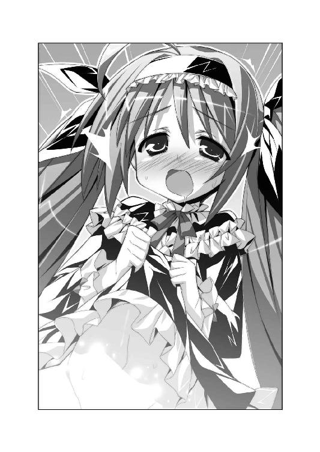
ア「撮れたー！ 普段だったらえっちなコスプレ衣装の写真なんだけど、趣向を変えてメルルさまの表情のアップにしてみたよ。えっちぃコトをされて『らめぇ！ メルル、ヘンになっちゃうのぉ～』って感じちゃってるとこだね。ちみっこいメルルさまが、えっちなコトをされてるって想像するとなんだか余計にドキドキしてりりりりりりりりりり、るるるるるるるるるる、あばばばばばばばばばばば」
ピ「............」
ア「うう～ん、アホの子になっちゃってたよ～？ 頭がクラクラするぅ～？......でも、こんなに色っぽい写真が撮れたらピコル師匠も褒めてくれるよね！ 『アレスタの妄想力は大陸全土に響き渡るのじゃー！』って！」
ピ「ソウナノジャ！（スイッチを押す）」
ア「次は、もっともっとえっちぃ写真を撮っちゃうぞー！ みんな、楽しみにしててねー！ その２に続くぅー！」
第二話 神の左手、獣の右手
トレクワーズ後宮のたった一人の王仕さま──神来恭太郎は、サムライ少年である。
品行方正。清廉潔白。明鏡止水。曲がったことは大嫌い。困っている人は放っておけない。弱きを助け、強きを挫く。自分の信じる正義のために戦って死ねるなら本望だ。
神来恭太郎というのは、そういう真っ直ぐな男なのだ。
それを踏まえた上で──。
「きゃあああああああんっ!!」
お昼過ぎ。トレクワーズ王国。王宮。
第四王女のアルト・ファローズ・トレクワーズの悲鳴が響いた。
恭太郎がすれ違いざまに、アルトのロングスカートをまくりあげたのだ。
小さなリボンがついているだけのシンプルな白いぱんつが露わとなってしまう。
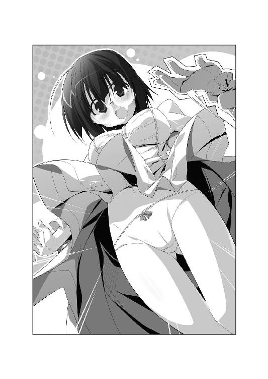
アルトは顔を真っ赤にして、スカートの裾を押さえつつ。
「あゎゎ、恭太郎さまが見たいなら、喜んでぱんつをお見せするべきだと思うんですが......心の準備をする時間が欲しいですぅ！」
「み、見たいわけじゃないんだ！ すまん、アルトちゃんっ！」
恭太郎は謝ったのだが、彼の悪行は止まることがなかった。
「「「きゃあ～～～～っ!!」」」
悲鳴を聞いて駆けつけてきた女官の少女たちのスカートを次々とまくりあげる。
剣術で鍛えた見事な踏み込みで、ロングスカートの布地を鮮やかにはね上げたのだ。
もしも『スカートめくり』がプロスポーツであったなら、トッププレイヤーにもなれそうなほどの素晴らしいまくりっぷりである。
女官はメイド服のようなお揃いの制服を着ているが、下着は私物らしい。
レースにＴバック、ローレグにプリントぱんつ。白、黒、赤、青。王宮の廊下にさまざまなぱんつが晒された。
「きょー、おー、たー、ろー、おぉー!!」
炎の噴き上がる大剣を構えた第一王女のユフィナが、恭太郎を睨む。
「私だけじゃなく、アルトや女官のみんなにも手を出すなんて......絶対に許さないわよ！」
王女さまの背後の空間が、噴き出す怒気のために揺らいで見えた。ポニーテイルが大蛇のようにウネウネとのたくっている。ハッキリ言って、怖い。
「ま、待ってくれ！ これには事情があるんだよ！ 俺だって好きでやってるわけじゃないんだ！ 話を聞いてくれ！」
懸命にユフィナを宥めようとしつつ、恭太郎は右手の人差し指で──ぷにゅんっ
「あぅっ」
ユフィナの巨乳を突っついていた。柔らかすぎる感触を指先に感じる。
「うわあ！ すまん！ そんなつもりじゃないんだ！」
「どんなつもりなのよ!? 話を聞いてくれとか言いつつ、む、胸を触るなんてっ！」
王女さまはプルプル震えながら、大剣を突きつけてきた。
「絶対に許さないんだからね──ッ!!」
「どわああああああああっ!?」
さて。
日本にいるころは『カタブツ』だの『サムライ少年』だのと呼ばれていたはずの恭太郎が、なぜ不埒な悪行三昧に及んでいるのか。
ユフィナの攻撃をかわすのに精一杯で、言い訳することのできない彼に代わって、その事情を語ることとしよう。
×××
ちゅんちゅん、ちちちち......。
朝。自室で目を覚ました神来恭太郎は、白い天井を見上げたまま辟易と呟く。
「これで何度目だろう......。起き抜けに拘束されるのは......」
カラダを起こそうにも起き上がることができない。腕を動かすことすらできなかった。
眠っている間に、恭太郎のカラダはロープでがんじがらめにされていたのだ。
「むふふふふ......、目を覚ましたようじゃのぅ......」
首だけを巡らして、声の方を見やる。
床に届きそうなほど長い髪＆白いローブをまとった一〇歳くらいの美少女──にしか見えない後宮のヌシ、ピコル師匠が立っていた。口元に悪事を企んでいるのが明白な笑みを湛えて。
猛烈に嫌な予感を覚えつつ、師匠に尋ねる。
「朝っぱらから俺を縛り上げて、なにをするつもりですか？」
「うむ。今日こそ、貴様に年貢を納めてもらおうと思ってのぅ......」
ゆっくりと、右手を恭太郎の方に向ける。
手に握られているのは──ピストル!?
いや、どちらかというと光線銃か？ ＳＦマンガに出てきそうな奇妙なフォルムだ。
「......お、俺を殺す気ですか？」
「バカを言うでないのじゃ。恭太郎は我が国の救世主。わざわざ異世界から召喚した最強の王仕さまなのじゃ。元気なお世継ぎを作ってもらわねばならぬ。しかしじゃ！」
憤慨したように、ピコル師匠は鼻から大きく息を吐いて。
「あんなに魅力的な姫さまがたにえっちく迫られても、手を出さぬとは！ ヘタレにもほどがあるのじゃ！ 貴様の股間のソレは飾りか！」
「純潔を守り続けることも男らしい生き方でしょう!? ヘタレ呼ばわりは心外です！」
「据え膳を食わぬ男なんぞ、ヘタレ以外の何者でもないのじゃっ！」
縛られている恭太郎に向けて、ピコル師匠はドリル状の銃を構える。
「なんですか、それは......」
「《ビービーガン》という魔法のアイテムじゃ。恭太郎はヘタレじゃが......ときおり、ケダモノと化すことがあるじゃろう？」
「た、確かに......」
恭太郎はえっちな興奮が限界を超えると、ケダモノと化して婦女子に襲いかかってしまうことがある。
それは恐らく、父親が原因だろう。
彼の父は、かなりの遊び人であった。
全国各地に愛人がいるらしく、一年の大半は家を空けていたほどだ。神来家の剣術道場が傾いたのも父が原因である。
どうやら、恭太郎にもそんな放蕩な父親の遺伝子が受け継がれているようなのだ。
普段は恭太郎に潜むケダモノな部分は理性によって押さえつけられている。
だが、縮められたバネが勢いよく跳ねるように、抑圧されている分、一度爆発すると手がつけられなかった。
ピコル師匠は奇妙な銃を眺めて。
「この光線銃は、照射した相手の本能を解き放つ《ビーストビーム》を発生することができるのじゃ」
「つまり、その銃から発生した光線を浴びると──」
「左様。恭太郎の野性の本能が解き放たれて、強制的にケダモノモードになっちゃうのじゃ！ きっと姫さまがたに襲いかかっちゃうコトじゃろうな！ がおー！」
「がおー、じゃないですよ！ そんなの絶対にイヤです！ お断りだ！」
逃げようとしたけれど、カラダが縛られているために動けない。
つーか、そんな便利なアイテムがあるんなら、なんで今まで使わなかったんだ!?
恭太郎の疑問を感じ取ったように、ピコル師匠は補足した。
「こら、動くでない！ 《ビービーガン》はたった一発しか撃てぬのじゃ。しかも、入手はかなり困難を極める。苦労して手に入れた超レアアイテムなのじゃっ！」
「一発だけ......？」
「うむ。この先端についてる渦巻き状のクリスタルは《マインドクリスティア》と言って、古代竜の思念が結晶化した、非常に稀少なものなのじゃ。めったに産出せぬ。しかも、一度使うと砕けてしまうのじゃ！ 一発必中！ 絶対に光線を当てねばならぬのじゃ！」
恭太郎をベッドに縛りつけたのは、絶対に光線を外さないためなのだろう。
ピコル師匠は窓の外を眺めた。窓が開いており、目映い朝日が差し込んでいる。
「見るがよいのじゃ。今日はいい天気じゃ。ケダモノ日和なのじゃ」
「ケダモノ日和って、なんですか!? いかがわしい新単語を発明するのはやめてください！」
「真っ昼間っから、えっちぃコトをするのもなかなかオツなもんじゃぞ？」
「聞いてませんから、そんなこと！」
ピコルは光線銃を両手で構えて、しっかりと狙いを定めた。幼い見た目にはそぐわない、悪者じみた笑みを浮かべる。
「一度ケダモノと化せば、夜まで効果が持続するのじゃ。さあ、恭太郎！ ケダモノと化して姫さま全員とお世継ぎをつくりまくるがいいのじゃーっ！」
「じょ、冗談じゃないですってば!!」
ケダモノと化して一日中婦女子に襲いかかりまくるなんて、何度ハラを切っても足りないぞ!? そんな光線浴びるワケにはいかない！ でも、縛られて動けないし......どうすりゃいいんだよ!?
「題して、『ケダモノ光線でガルルル☆大作戦』じゃ！ 今日という今日こそ、貴様に童貞を卒業してもらうのじゃ！ ふゥはははははは──っ！」
「やめてくれ──ッ！」
「発射なのじゃ────っ!!」
恭太郎の絶叫を聞きながら、ピコルは引き金を引こうとした、そのとき。
開け放たれた窓から、そよ風が吹き込んだ。
ピコルの長い銀髪がそよぎ、こちょこちょと鼻先をくすぐる。
「びゃっくらしょうぇ～～～～～いっ！」
ピコルは盛大なクシャミをしてしまった。
ほぼ同時に──び～～～～～～っ!!
虹色に輝く光線が放たれた。
光線銃の先端──ドリル状のクリスタルが甲高い音を立てて砕け散る。
時間が止まったかのような、永遠にも似た刹那の静寂の後。
「......あ、あれ？ なんともないぞ？」
恭太郎は縛られたまま自分のカラダを見下ろした。
ケダモノ化したときは、我を忘れて暴れだし、記憶すら失ってしまう。
だが、恭太郎の意識ははっきりとしていた。なんの変化もない。
「し、しまったのじゃー！」
ピコル師匠の絶叫が後宮を揺るがした。
「クシャミをした拍子に光線をハズしてしまったのじゃ！ なんということじゃ......！」
深い深いため息を吐き、肩を落とす。そのまま大地の奥底へと沈んでいきそうなほどの落ち込みようだった。
「はあああああぁぁぁぁぁぁ......」
そんなにションボリしている師匠は見たことがなかった。
「俺にとってはラッキーだったんですが......なんというか、残念でしたね」
「残念なんてもんじゃないのじゃ......。一発しか撃てぬのに......。ものすご～～～く苦労して手に入れたのに......。なにもかもが無駄になってしまったのじゃ......」
あまりの落ち込みっぷりに、なにか慰めの言葉を掛けようと思った恭太郎の身に、変化が起こった。
右腕がブルブルと震えたのだ。魔法を使ったときのように青白く光っている。
恭太郎の意思に反して動き出し、凄まじい膂力で太いロープを引きちぎった。
（身動きできないくらいしっかりとロープが結ばれていたのに!?）
ブルァアアアアアアァァァァ──!!
そんな咆哮すら聞こえてきそうなくらいに、高々と右の拳が突き上げられている。
「な、なんですか、コレ!? 俺の右手が勝手に動いてますよ!?」
興味なさそうに恭太郎の右腕を眺め、ピコル師匠がため息を吐いた。
「ビーストビームが逸れて、恭太郎の右腕に当たったようじゃな......。だから、そこだけがケダモノと化しておるのじゃ......」
「俺の右腕がケダモノに!?」
右腕が熱い。そこに心臓が移動したかのようにビクンビクンと脈動している。
「右腕だけがケダモノになったって意味がないのじゃ......。下半身がケダモノにならなくては......。ふはあぁぁぁ......」
クリスタルの砕け散った《ビービーガン》を力なく手にして、ピコル師匠は部屋を出て行こうとする。
「千載一遇のチャンスをフイにするとは......。吾ももう歳なのかのぅ......。まだまだピチピチと思っておったのじゃが......」
「八〇〇歳は妖怪のレベルですからね!? って、ツッコミ入れてる場合じゃない！ 右腕がケダモノになっちゃって......俺はどうしたらいいんですか!?」
「夜になる頃には元に戻るのじゃ。今日はそのまま過ごすがいいのじゃ......はあぁぁぁ」
「ええええええええ～～～～っ!?」
部屋を出て行ってしまうピコル師匠。
「無責任すぎますよ！──うおっ!?」
弾かれたように、右腕が動き出した。
自分の腕に引っ張られよろめいてしまう。
右手が勝手にドアノブを回し、本体である恭太郎を引きずって廊下へ飛び出した。
「どこへ行く気だよ!? 大人しくしろ！」
そんなこんなで。
恭太郎は右腕がケダモノと化した状態で一日を過ごす羽目に陥ったのだ!!
×××
「勝手に動くんじゃないっ！」
後宮の廊下。恭太郎は自分の右腕を左手で引っ張っていた。
両足を床に踏ん張り、全力で止めようとしているのに右手の暴走は止められなかった。
空中で大蛇のように暴れ回り、右腕が少しずつ恭太郎を引きずっていく。
「......くそっ！ 鎮まれ！ 鎮まるんだ、俺の右手ッ!!」
この世を破壊するほどの力を持つ伝説の魔物が右腕に封印されている──という妄想に耽る中学二年生みたいな発言をしつつも、内心で焦っていた。
（つーか、本当にコレが俺の右腕なのか？）
そう疑いたくなるほど凄まじいパワーだ。全身に力を込めて抗っても引きずられてしまう。透明な巨人に右腕を引っ張られてるみたいだ。
そして、それ以上に。
ケダモノと化した右手は、恭太郎のものとは思えないほどに──えろかった。
女官が通りすがるたびにスカートをめくりあげ、制服の上から胸を揉もうとするのだ。
「きゃあ！」「いやーん！」「お許しください、恭太郎さまぁっ！」
後宮にいくつもの悲鳴が木霊し、そのたびに恭太郎は謝り続けていた。
「すまん！ ごめん！ 申し訳なーい！」
最悪だったのは、騒ぎを聞きつけてユフィナが駆けつけてしまったことだろう。
市民と謁見でもしていたのか、ちゃんと髪を結い上げ、綺麗な白いドレスに身を包んだ第一王女は腕組みをして詰問してきた。
「なにしてるの、恭太郎？」
恭太郎をジト目で睨みつけて、
「女官のコたちの悲鳴が聞こえてきたけど......あんた、なにかいかがわし～コトしてるんじゃないでしょうね？」
近衛騎士団長を兼任するユフィナは、王宮内の風紀にも厳しい。好きな人以外とはえっちなことはしちゃダメだって思ってるのだ。
「し、してないって！ 俺はご近所でも品行方正な少年として有名だったんだ！」
「しょっちゅう倒れたフリして、私の胸とか触ってくるじゃないっ！」
「アレは不幸な事故なんだって！ 望んでやってるワケじゃないんだ！」
「じゃあ、なんで女官の悲鳴が聞こえてきたのよっ!?」
恭太郎はピコルによって右腕がケダモノ化されてしまった経緯を説明しようとした。
だが、口よりも早く──恭太郎の右腕が動き出す。
ピシュ、ピシュ、ピシュ──!!
そんな擬音をつけたくなるような、目にも留まらぬ早業。
神来流剣術奥義《二の太刀──瞬影》を彷彿とさせる超高速の手の動きだった。
ユフィナの横をすり抜けざまに右手が三つに分身。スカートをめくりあげ、巨乳を揉みしだき、おしりをまさぐったのだ！
「きゃあっ！ あっ ひゃんっ」
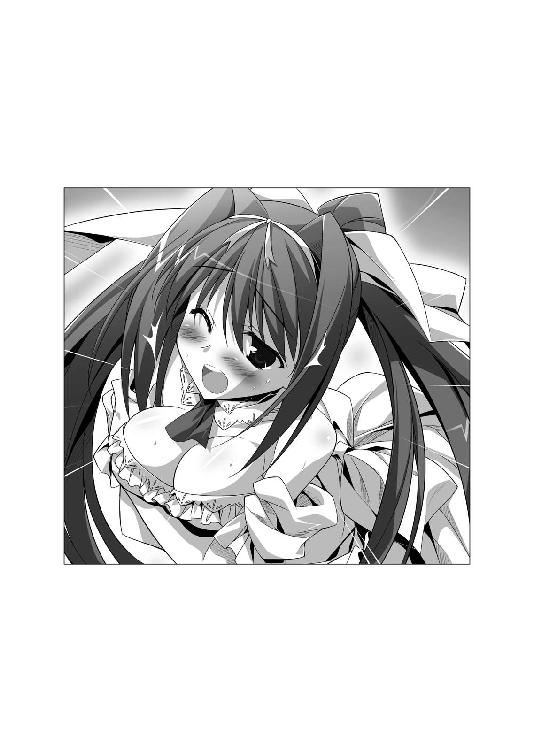
ユフィナが戸惑ったような三つの悲鳴をあげる。
「す、すまん！ これには止むにやまれぬ深い理由があるんだ！」
プロ並みの痴漢テクニックを見せつけてしまった恭太郎は、すぐさまユフィナに説明をしようとした。
ゴゴゴゴゴゴゴゴゴゴゴゴゴ──......!!
ユフィナの髪がゴーゴンの蛇のように蠢く。額に血管が浮いた。
「説明はいらないわ......。だいたい事情が飲み込めたから......！」
「わかってない！ 全然わかってないよ!?」
「問答無用!!」
ユフィナは手を横に突き出す。
「来たれ、【烈炎神剣】！」
半瞬後、ユフィナの手に巨大な手甲が装着され、炎に包まれた大剣が出現する。
「うわああああああっ!?」
目がマジだ！ このままじゃぶっ飛ばされるぐらいじゃすまない!?
逃げるなんて男らしくないが、汚名を着たまま死を迎えるワケにもいかないぞ!!
仕方なく、逃げ出す恭太郎。
「待ちなさい！ このドヘンタイ!! 絶対にぶっ飛ばしてやるんだからね!!」
炎の大剣を手にした、ユフィナに追い回されることとなった。
ちくしょう！ 俺は悪いコトしてないだろ～～～っっっ!?
×××
「このままじゃマズイ！ なんとかしなきゃ、さらなる痴漢行為を働いてしまう!?」
左手で後宮の廊下にある女性の裸像にしがみつき、右手の暴走を止めようと試みる。
「こっちへ来るんだっ！ 俺の一部である限り、不埒なマネは絶対に許さないぞ！」
ユフィナから隠れるため＆右手にこれ以上悪さをさせないために、地下牢にでも籠もっていたかった。だが、右手は言うことを聞かない。
婦女子に触れたくてたまらないみたいに、空中で暴れている。肩が抜けそうだよ！
そのとき、呆れたような声が聞こえてきた。
「恭太郎おにいちゃん。彫刻のカラダなんて触って......楽しいの？」
第五王女のメルルちゃんの声だ。
訝しげな口調で第三王女のエリスが続ける。
「石像に欲情するだなんて......幻滅ですわ」
言われて気付いた。恭太郎の左手は、女性の裸像の乳房を握りしめている。興奮しながら彫刻のおっぱいを揉みしだいているようにも見えなくはない。
「ご、誤解だ！ 違うんだって！」
二人の方を振り返った恭太郎は、驚きのあまり呼吸が止まるかと思った。
暴れ回っていた右手もプルプルと震えながら硬直する。
二人の王女さまは、とんでもない格好をしていたのだ。
テカりのある布地で作られた白とブルーを基調とした上着は、丈が短くかわいらしいおへそが丸出しだった。しかも、大きめの襟の下辺りに巨大な穴が開いていて、胸の上半分が見えるようになっている。
スカートも超がつくほど短く、深いスリットが入っていた。綺麗な脚がほとんど露出している。キャットガーターのついたふとももが艶めかしい。
エリスはチェッカーフラッグ。メルルちゃんはパラソルを持っている。
「その格好は......レースクイーン!?」
露出度が高いから恥ずかしいのだろう。頰を染めながらも、エリスが訂正をしてきた。
「レースクイーン？ この格好は《レースガール》と呼ばれる職業の服装ですわよ。フン、平民がクイーンを名乗るなんて、おこがましいですのっ！ 不敬ですわっ！」
そうか。王制を敷くトレクワーズ王国においては、クイーンと言えば女王エルトリーゼただ一人なんだ。だから、呼び方も変わるんだなぁ。って、そんなことは問題じゃなくて。
メルルちゃんがパラソルをくるんと回しながら、補足説明をする。
「この格好で騎馬戦車レースの応援をするんだよっ。メルルは観たことないんだけど、すっごい迫力らしいんだっ。みんなでレース場に観に行きたいねっ！」
なるほど。カーレースじゃなくて、騎馬戦車のレースなんだな。古い映画で、戦車レースのシーンを観たことがある。すごい迫力だった。一度、生で観てみたいものだなぁ。って、感心してる場合でもないっ！
「なんで、そんな格好してるんだよ!?」
ちぃ姫さまは可愛らしくウィンク。
「決まってるでしょ？ おにいちゃんを誘惑するためだよんっ♪ 男の人って、こーゆー格好も好きなんだよねっ」
フラッグを抱えるようにして握りしめながら、エリスは恭太郎を睨み付けてくる。
「メルルが私の分も用意してくれましたから、一応着てみましたの。で、でも、勘違いしないでくださいましね！ あくまでこれは王位を継ぐための手段ですわっ！ 『恭太郎おにいちゃんが、エリスおねえちゃんにメロメロになっちゃうかもよ♪』なんて言葉を信じたわけではなくてっ、」
言い訳がましく続けるエリスを横目に、メルルちゃんが尋ねた。
「恭太郎おにいちゃんの方こそ、なにしてたの？ そんなに彫刻が気に入ったのかな？ おにいちゃんはえっちなフィギュアとかにヨクジョーしちゃう人なの？」
「違うって言ってるだろ！ ピコル師匠に妙なアイテムを使われたんだよ」
幸い右手はプルプルと震えて硬直している。ケダモノが暴れ出す前に、二人には避難してもらった方がいいだろう。
恭太郎は手短に状況を説明した。
「なるほどー。おにいちゃんの右手だけが、ホンノー剝き出しになってるんだねっ」
「？？？ よくわかりませんが、出直した方がいいのかしら？」
「ああ。右手が妙なことをしでかさないように、俺から離れていてくれ」
だが、オマセなちぃ姫さまは、イタズラっぽい笑みを浮かべた。
「なに言ってるの、エリスおねえちゃんっ。これは大チャンスだよっ！」
「チャンス、ですの？」
「うんっ。ホンノー剝き出しってコトは、恭太郎おにいちゃんの本当の気持ちに従って、右手が動いてるってコトでしょ？ メルルたちに本当はどんなことをしたいって考えてるのかわかっちゃうってコトだよね！」
「恭太郎の本当の気持ち......？」
しばらく首を捻っていたエリスは、コホンと咳払いをした。チェッカーフラッグの先端をレイピアみたいに突きつけて。
「そ、そうですわ！ 私もまったく同じコトを考えていましたのっ！ 恭太郎は、この私が誘惑をしても『俺にはできない』などと言って逃げ出しますわ。その言葉が真実なのか否か、確かめるチャンスですの！」
「だ、ダメだって、そんなの！ 今の俺の右手は普通じゃないんだ！ 不埒で不純なケダモノと化しているんだよ！ 大人しくしている間に、早く逃げ──」
恭太郎は勘違いをしていた。
プルプルと震えて硬直していた右手は、大人しくしていたワケではなかったのだ。
紅潮するように赤く染まっていき、血管が浮き立つ。オーラをまとうように、周囲の空間が揺らいだ。
レースガール姿の二人の王女を前にした右手は、あまりの興奮に打ち震えていたのだ！
ブルァアアアアアアアアアアアアアア!!
野獣が雄叫びをあげるように、手のひらを思い切り開いた。目映い光を放ってる。
「わお、ワイルドだねぇ♪」
嬉しそうに笑いつつ、メルルちゃんは前屈みになる。パラソルをクルクル回しながら、ぺたんこな胸を寄せて見せた。
「見てみてー。この服、お胸がほとんど出ちゃってるんだよー？ 色っぽいでしょ？」
あまりにペタンコすぎて、ジャケットに開いている穴から胸の先端が見えてしまいそうだよ!?
妹に触発されたのか、姉のエリスも恥ずかしそうにポーズをとる。
「コラ、恭太郎っ！ メルルになんて目移りしないでちょうだいっ！ あなたは、このエリス・レムリス・トレクワーズだけを見ていればいいんですわっ！」
超ミニスカートから伸びる見事な脚線美を誇るように、エリスは脚を前に出した。
スリットからふとももの付け根まで見えてしまう。
ケダモノと化した右手は、二人の王女さまに飛びかかった。
「どわあああっ!?」
凄まじいパワーで恭太郎は廊下を引きずられてしまう。
獲物に飛びかかるクモのように、右手がエリスのふとももに飛びつく。
触り心地を楽しむように、すべすべのふとももを撫で回した。
「はぅっ さ、触り方がえっちぃですわ！ 恭太郎の愚か者！」
「俺じゃない！ 右手が悪いんだ！」
「恭太郎の一部には違いありませんの！ あっ ぞくぞくしますのっ」
「ずるいずるい、エリスおねえちゃんばっかりー！ 恭太郎おにいちゃーん、メルル、すっごいえっちぃぱんつはいてるんだよ～？ 見たくな～い？」
ちぃ姫さまは、スカートの裾に手を掛けて、ほんの少しだけめくって見せた。
木々を渡るモモンガのように、ケダモノの右手はメルルの方へとジャンプ。
「ぶべっ!?」
恭太郎のカラダは引っ張られて床に叩きつけられる。
右手はと言えば──
「きゃあああああんっ」
短いスカートをまくりあげていた。
メルルちゃんがはいていたのはＴバックの下着だった。Ｔ字の交点に、小さなカピバラのマスコットがついてる。ちっちゃいおしりの割れ目はバッチリ見えていて──可愛さとセクシーさのミスマッチでクラクラしてしまいそうだ。
というか、ちっこいメルルちゃんのスカートをめくるなんて！ 倫理的に許されることじゃないぞ!?
「わ、私だって、すごい下着をつけていますのよっ！」
「どぅわっ!?」
エリスの言葉を聞いた瞬間、右手は第三王女の方へと飛び移る。
恭太郎のカラダは引っ張られ、再び床に叩きつけられる。
右手は鮮やかな手付きでミニスカートをめくりあげた。
「きゃあっ！」
エリスがはいていたのは、シマシマのぱんつだった。
だが、シマぱんなのにＴバックになっている。これまた可愛いのにセクシーで......コラ、ドキドキするんじゃないっ、俺の心臓！
右手も興奮しているようだ。手指をワキワキと動かしながら、スカートの中に手を入れようとしてる!? おい、やめろ！
「す、スカートの中まで触る気ですのっ？ ちょっと待ってくださいまし、私にも心の準備というものがっ！ だ、ダメっ！ 下着に指を掛けるなんて！」
「俺がやってるんじゃないんだよ！」
「でも、本心は触りたいって思ってるんでしょ♪ 恭太郎おにいちゃんのえっちぃ～」
右手はエリスの下着に指をかけて......Ｔバックのシマぱんを脱がそうとしてるー!?
婦女子のぱんつを脱がすなんて、そんなのドキドキしちゃうだろ──じゃなくて、絶対ダメだって～～～っ!!
「コラ～～～～っ！ 恭太郎ッ！ なにしてんのよ!?」
そこへユフィナが駆けつけてきた。
王女さまの額にはさらに血管が増えている。
「エリスやメルルにまでえっちなコトするなんて......絶対に絶対に許さないわよ～ッ!? スカートから手を出しなさいっ！」
炎に包まれた大剣を振り上げた。
ケダモノと化した右手がスカートから引き抜かれる。大人しくユフィナに従ったのかと思いきや、違った。
目にも留まらぬ速度でユフィナに向かって右手が突っ込み──シュバッ!!
振り下ろされる大剣をかわしつつ、右手がユフィナの胸の辺りをかすめる。
「この動きは......神来流剣術奥義《一の太刀──鬼哭》じゃないか!?」
自らの右手を見下ろした恭太郎は、驚きのあまり顎が外れるかと思った。
右手には、ユフィナのブラが握られていたのだ!!
すれ違いざまにドレスの上からブラジャーだけを抜き取ったのである。なんという高等テクニック!!
キョトンとしていたユフィナは、プルルルンと柔らかく震えている自分の胸を見下ろして、盛大な悲鳴をあげた。
「きゃああああっっ!?」
白いドレスに包まれた胸元には、ぽつんとなにかが浮いてしまっている。
「すまん！ 許してくれ！ 俺は婦女子の下着になんて興味はないんだよっ！」
必死に謝ってるってのに、ケダモノと化した右手はブラジャーを大事にポケットにしまった。そんなことしたら余計に疑われるだろ!?
片腕で胸を隠しながら、顔を真っ赤にしたユフィナが睨み付けてくる。
「......最後に言い残しておくことはある？」
恥ずかしさのためか、怒りのためか、目にはうっすらと涙が滲んでいる。
「まだ辞世の句は詠みたくないよ!?」
「恭太郎のバカ──────ッ!!」
思いっきり大剣を振り下ろしてくる。
「どわああああああっ!?」
死を覚悟した恭太郎。だが、ユフィナの攻撃を喰らうよりも早く右腕が動いていた。
恭太郎のカラダごとジャンプ。窓を突き破って逃げ出したのだ。
「待ちなさい、このドヘンタイ──ッ!!」
×××
西部劇で、こんなシーンを見たことがないだろうか？
悪漢が正義の保安官の足首にロープを掛け、馬で荒野を引きずり回すのだ。
そんな私刑のシーンを彷彿とさせるように。
「だばばばばばばばばばばっ!?」
恭太郎は右手によって引きずり回されていた。
人差し指と中指を交互に動かし、右手は自由自在に走り回っていたのだ。
大理石張りの廊下はまだいい。ザラザラとした地下通路を引きずられたときは、身体がすり下ろされてしまうかと思った。
恭太郎は満身創痍＆疲労困憊だってのに、右手は元気が有り余ってるようだ。まったく衰えるようすがない。
女の子を見つけるたびに飛びかかり、スカートをめくったり、おしりを撫でたりする。
全身鎧を着た近衛騎士団の少女とすれ違った時は、鋼鉄製のアーマーを片手で引き裂いて胸を揉んでいた。パワーの無駄遣いにもほどがある！
「うわっ、階段はダメだって！ どべっ!? ぶばっ!? のべっ!?」
恭太郎を引きずったまま階段を駆け下り、右手は中庭へと飛び出した。
「痛たたたたたたたたっ!? 引きずるなら芝生の方にしろ！ 痛いって!?」
レンガの敷かれた中庭の遊歩道を恭太郎を引きずって走りまくる。
つーか、俺の右手はどこへ向かってるんだよ!?
その疑問はすぐに解消された。
「♪るふふふ～ん」
中庭の花壇で、第二王女のレイシアが水やりをしていたのだ。レイシアに触る気か!?
「あら？ 恭太郎さま？......剣術の新しいお稽古でしょうか？」
第二王女のレイシアが胸の前で手を組み合わせて、心配そうに恭太郎を見つめてくる。
そりゃ心配にもなるだろうな。匍匐前進状態で目の前に現れれば......。
「私になにかご用でしょうか？」
「俺から離れろッ！」
王女さまはビクッとカラダを震わせる。
悲しそうに眉をハの字にして、切なげに問うてきた。
「はぅ......私、恭太郎さまに嫌われるようなことをしてしまいましたでしょうか......？」
「い、いや、違う！ レイシアを嫌ったりしないよ！ 勘違いしないでくれ！」
右腕を押さえつけつつ、手短に説明した。
「まあ！ 右腕がケダモノさんに......？」
「本能のままに動いてしまって自分では制御できないんだ。だから、きみに妙なコトをしでかす前に離れていて欲しいんだよ。特にレイシアは──」
すんでのところで、言葉をのみ込む。
「私が──どうかしましたでしょうか？」
不思議そうに首を傾げるレイシアの顔は、とびきりキュートだった。ただ可愛いだけじゃなく、王女さまらしい清楚さと可憐さを兼ね備えている。見つめ合っただけで、大抵の男は骨抜きにされてしまうだろう。
それに加えて──恭太郎はレイシアの胸元に視線を移した。
薄水色のドレスがはち切れそうなぐらいに、胸元が隆起していた。レイシアは大人しそうな顔立ちに似合わず、とんでもない爆乳の持ち主なのだ。ただ立っているだけなのに、ふるるんと胸が揺れている。
美貌とナイスバディを併せ持ったレイシアを前にしてしまったら──
ふしゅぅぅぅぅぅぅぅぅ──っ!!
恭太郎の右手が真っ赤に染まり、湯気が噴き出していた。昂ぶりすぎて、凄まじい勢いで汗が蒸発しているのかもしれない。
「うおっ、やっぱり!?」
右手がレイシアの胸を目掛けて飛びかかろうとする。
全力で足を踏ん張り、恭太郎は手のひらの突進を止めた。
「きみは魅力的だから、俺の右手が襲いかかっちゃうんだよ!!」
「み、魅力的だなんて、そんな......」
レイシアの頰が真っ赤に染まる。
王女さまの変化には気付かず、恭太郎は左手で右腕を殴りつけた。
「なんとか大人しくさせるから、レイシアは逃げていてくれ！ コイツめ！ コイツめ！」
「おやめください、恭太郎さまっ」
恭太郎を制したレイシアは、意を決したように右手を握ってくる。
「な、なにするんだ!? 危険だぞ！」
「恭太郎さま、私と一緒に来てください！ 私が癒して差し上げますから！」
王女さまは荒ぶる右手を引っ張って歩き出した。
連れて行かれたのは、レイシアの部屋。
病床の女王に代わって政務を担当している真面目な王女さまらしい、飾り気の少ない清潔な部屋だ。大きな本棚には租税や治水に関する、難しそうな本が並んでいる。
「ちょっと待っていてくださいね。すぐに戻ってきます」
恭太郎をベッドに座らせると、レイシアは部屋を出て行った。
ケダモノと化した右手は興奮が抑えられないようだ。鎖に繫がれた狂犬みたいにレイシアを追いかけようとする。引きずられないようにするのが一苦労だ。
「レイシアはなにをするつもりなのかな......この魔法を解けるのか？」
ほどなく部屋に戻ってきた第二王女を見て、恭太郎は驚きのあまり顎が外れるかと思った。
「れ、レイシアまで、そんな格好を!?」
なんとレイシアまでもがレースクイーン──いや、レースガールの格好をしていたのだ。
超ミニスカートからは、むっちりしたふともも。丈の短い上着からは、キュッとくびれたウェストが露出している。
だが、特筆すべきは、やはり胸だろう。
大きめの襟の下に開いた穴から、おっぱいの上半分が見えてしまっており、深すぎる谷間が覗けるのだ。
しかも、胸が大きすぎるせいで、下チチの大半も隠れてはいなかった。
しかもしかも、胸の頂点の辺り、テカリのある布地越しにポツっとなにかが浮いているのがわかる。
ハッキリ言って、ハダカよりもえっちぃ格好に思えた。
今にも下着が見えそうなほど短いスカートで、レイシアはベッドの上に座る。
「メルルが五姉妹の全員分、衣装を作ってくれたんですよ。みんなで恭太郎さまを誘惑しようって......」
レイシアは自分の胸元を見下ろし、頰をピンク色に染めた。
「最近、また胸が大きくなったせいか、ちょっぴりキツくて......メルルにサイズを直してもらおうと思っていたところなんですが、頑張って着てみることにしました」
そんなに大きいのに、まだ成長中なんですか......？
思わず、生唾を飲んでしまいつつ、恭太郎は尋ねようとした。
（どうしてそんな格好をしたんだろう？ 魔法を解いてくれるんじゃないのか？）
だが、質問を口にする前に。
──ふにゅんっ
右手が勝手に動き出し、レイシアの胸を揉んでしまった。
「......んっ」
「うわぁっ！ すまんっ！」
すぐさま右手を引き離そうとしたのだが、その前にレイシアが恭太郎の手に優しく手のひらを重ねてくる。
「いいんです。そのままお触りください」
「な、なに言ってるんだよ!?」
「恭太郎さまの右手さんが、すごく苦しそうでしたから......んゅっ」
──もにもにもにもにっ
恭太郎の右手はレイシアのおっぱいを揉みしだいている。あまりの柔らかさに指が埋もれてしまうほどだ。
ぴくんぴくんっと肩を震わせながら、レイシアは続けた。
「恭太郎さまがオナカが空いてらっしゃるなら、私はごはんを作って差し上げます。もしも、その......カラダを触りたいとおっしゃるなら、私でよければ触っていただきたいです」
「レイシア......」
「無理に我慢するよりも、その方が恭太郎さまも楽だと思いますから」
レイシアが『癒す』と言ったのは、そういう意味だったのか......。
王女さまの顔は恥ずかしそうに朱に染まっていたけれど、表情は真剣そのものだった。瞳は慈愛に満ちている。
「すまない......」
「いいんです。恭太郎さまのお役に立てて、私もうれしいです......はぅっ」
恭太郎の右手はレイシアの大きな胸を弄んでいた。柔らかさを確かめるように、手のひらで揺さぶっている。
なんて柔らかさだろう。触っているだけで、気が遠くなりそうだよ。
「ピコルさまに、以前教わったんです......。こんな風にすると殿方は喜ぶそうですね」
レイシアが恭太郎の右手を握ってきた。
「はうあっ!!」
上着の裾から恭太郎の手を──おっぱいの間に差し込んだ、だとぅ!?
右手が両側から爆乳に挟まれてしまう。柔らかすぎる感触に包まれて、右腕が溶けてしまいそうだった。
「よぃしょ、よぃしょ......」
レイシアは自分の手でおっぱいを両側から押してきた。
──もにゅもにゅもにゅもにゅっ
「うおおおおおっ!?」
右手をパフパフされて、気が遠くなりそうなくらいに気持ちいい。あまりにえっちぃ状況に、視界がグルグル回ってる。鼓動が高鳴りすぎて、心臓が爆発しそうだ。
レイシアもドキドキしているのかな？
「ハァ......恭太郎さまの手、すっごく熱くなってます......」
頰はますます紅潮し吐息が高まっている。瞳は潤み、トロンとしていた。
「ピコルさまのお話では、この必殺技には応用編があるそうなんです」
手のひらの辺りから、恭太郎の肘の方へ。胸で挟む位置をズラしていった。手首から腕にかけてが、マシュマロよりも柔らかな爆乳に挟まれる。
レースガールの衣装の胸元に開いた穴から、恭太郎の右手の指先が顔を出した。
そして──ちゅっ
右手の指先に唇を寄せてきた。
「胸で挟んだまま先っちょを舐めてさしあげると気持ちいいそうですね......はむっ」
レイシアは指先を口にくわえてきた。
「うわっ......それはマズイって......」
腰から背中に掛けてゾクゾクッと電流に似たなにかが駆け抜ける。
「どうして、服の胸元に穴が開いてるんだろうと不思議に思っていたんですが......こーゆーコトをするためだったんですね♪」
「いや、それは違うと......ぬをををっ？」
チロチロと可愛らしく舌を出して、中指の先端を舐めてくる。
「きもひいいれふか？」
王女さまは指先をくわえたまま、上目遣いに尋ねてきた。
「......うん、すごく気持ちいいよ」
「うれひぃれふ もっとがんばりまふ」
もにもにもにもにっ
れるれるれるれるっ
舐められてるのはあくまでも指なのに、猛烈にゾクゾクしてしまった。頭の芯が痺れてくる。脳内の興奮ゲージは急上昇！
（うわ、ヤバいって！ そんなことされたら、理性を失っちゃうよ!?）
だが、幸いなことに恭太郎よりも先に、ケダモノとなった右腕が限界を迎えた。
一際大きくビクビクッと震えたかと思うと、グッタリと力が抜けたのだ。
右腕はまだ自由には動かせない。だが、勝手に動くこともなくなっていた。
「もう大丈夫だ。レイシアのおかげで、右腕は満足してくれたみたいだな」
「お役に立てたならよかったです」
レイシアの胸の谷間から右腕を抜いた。右手にまだおっぱいの柔らかい感触が残っている気がして、思わず赤面してしまう。
というか、緊急事態だったとは言え、なんてことをされちゃったんだ、俺は......。
腕とは言え、いわゆるパイズ──いや、違う！ そんなとんでもないコトはされていない！ 今のは、荒ぶるケダモノを追い払うための悪魔払いの儀式みたいなものだ！ そういうことにしておく！
レイシアも耳の先までピンクになっている。恥ずかしくて、恭太郎の方を真っ直ぐには見られないようだ。
「ありがとう、レイシア。なんというか、その......申し訳ない」
「謝らないでくださいませ。私が勝手に言い出したコトなんですから」
「でも、きみの胸を触っちゃっただろ？ 嫌な思いさせたな......」
「いいえっ！ 嫌なんかじゃありませんっ！ 魅力的だと言ってくださって、すごくうれしかったです！」
レイシアは真剣な口調で言い募る。
「恭太郎さまになら触られても平気です。というか、むしろ触っていただきたいで......」
レイシアはハッと口元を押さえた。
ぼわわわわわっ！──ピンク色だった顔が、ゆでダコみたいに真っ赤になる。
「ななな、なんでもありませんっ。忘れてくださいませ......」
「あ、ああ。そうするよ......。それじゃ、俺は魔法が切れるまで人気のないところに籠もってることにする。ありがとう、レイシア」
動かなくなった右手を荷物のように抱え、フラフラと部屋を出る恭太郎。
顔が熱くなってる。たぶん、顔が真っ赤になってるだろう。
よろめくように王宮の廊下を歩きながら、恭太郎は思い返す。
（......俺に触って欲しい、だって？）
今のレイシアの発言はどういう意味だろ？ まるで、俺に好意を持ってるみたいな......。
いやいや、そんなワケないよな。
彼女はお世継ぎづくりにも真剣に取り組んでる。だから、お世継ぎづくりが進むのは喜ばしいコトだ──きっと、そういう意味だろう。うん。そうに違いない。
納得しながらも、鼓動の高鳴りが抑えられない恭太郎なのだった。
×××
夕刻。王城の屋上。国旗掲揚台。
王国旗を掲げるためのポールに右腕を鎖で縛り付けた恭太郎は、左腕で膝を抱えて座っていた。
レイシアのおかげで右手が落ち着いた隙に、人気のないところまでやってきて、右腕を完全に拘束したのだ。三〇分後には右腕は再び暴れだそうとしたけれど、なんとか不埒なマネをせずに済んでいる。
「なんだか、ショックだな......」
沈みゆく夕日を眺め、ため息を吐いた。
こんな事態を引き起こしたピコル師匠への怒りよりも先に、口を突いて出たのは、そんな言葉であった。
「アレが俺の本性だってのか？ 俺の中には、あんなケダモノが眠っているのかよ？」
恭太郎は、半ば無理矢理にトレクワーズ王国に召喚された。拉致同然の行為だ。
本来ならば、恭太郎は王女さまたちに協力する義理などないのだが──それでも、この国に残ろうと決めた。
お世継ぎづくりは手伝えないけれど、なにか別の方法でユフィナたちを助けられるんじゃないかと思ったのだ。助太刀を買って出る侍の心境とでも言おうか。
しかし──鎖に繫がれた右腕がビクンビクンと震えている。
「俺の右手は、えろいことしかできないのかよ......？ 誰かを守る剣を持つために、俺の右手はあるんじゃないのか......？」
自分自身が許せなかった。神来恭太郎という男に幻滅しそうだ。
何度目かわからないため息を吐いたとき。
「見つけたわよ、恭太郎......」
最も会いたくない相手が現れた。
「ゆ、ユフィナ......」
第一王女は怒りの化身となっていた。
炎のように赤い髪はゆらゆらと揺らぎ、カラダからは闘気のようなものが立ち上って、周囲の空気が歪んでいる。あまりに激しい怒りのために、純白の石で作られた屋上の床や、フェンス代わりのブロックが溶けてしまうのではないかと思った。
炎の大剣から噴き出す炎は地獄の業火のように赤々と燃えさかっている。
「観念しなさい......もう逃げられないわよ......」
「待ってくれよ！ 不埒なマネをしたのは、ピコル師匠の魔法のせいなんだよ！」
「知ってるわ......。レイシアたちから話を聞いたから......」
「じゃあ、わかってくれたんだな......」
「ええ、よ～っくわかったわ！ あんたがドヘンタイだってことがね！」
ギロリ──レーザーでも発射しそうな勢いで恭太郎を睨み付けてくる。
「右手は本能が剝き出しになってるんでしょう？ だったら、それってあんたが心の底で本当はやりたいと思ってることじゃない！ 乙女の敵よっ！」
「うぐっ......」
「あんたは私たちを助けたいから、ココにいるって言ってくれたけど......本当はえっちなコトがしたいだけだったのね！」
「ち、違う！ 俺は本当にきみたちの力になりたいって思ってるんだ！ 信じてくれ！」
「さんざんえっちぃコトしたくせに！ 信じられるワケないでしょ!?」
頭に血が上ってるからだろう。王女さまは聞く耳を持ってはいなかった。
炎の剣をゆっくりと上段に構えつつ、小声でボソボソと呟く。
「今日、地方領主の方と謁見したときに恭太郎のコト、『勇敢なイイヤツだ』って褒めたところだったのに......言わなきゃよかったわ、そんなこと......」
式典用のドレスを着ていたのは、そのためだったのだろう。
「そこに直りなさい！ 歪んだ性根を叩き直してやるんだからね──ッ!!」
裂帛の気合いと共に、ユフィナは叫んだ。
「【火竜大連覇】」
烈火の王女が使う最強の攻撃魔法だ。
右手は鎖で縛られている！ 為す術なく魔法が直撃してしまう!!
かと思いきや、炎の龍が襲いかかる直前にまたもや右手が動いた。
バギンッ！──がんじがらめになっていた鎖を引き千切ったのだ。
そのまま、右手はユフィナに飛びかかった。
炎の攻撃をかいくぐって、素早く王女さまの背後に回り込む。
そして──さわさわさわさわさわ
ユフィナの耳をくすぐったのだ。
「ふにゃああああああっ？」
一瞬でユフィナのカラダから力が抜けた。
「だ、ダメぇぇぇっ 耳は弱いんだから～～～～っ」
耳を押さえて、よろめいてしまう。頰は真っ赤。瞳はグルグルと渦巻いていた。
ユフィナは耳が弱点だったのか？ 瞬時に弱点を見抜くなんて、すごいな右手！ って、感心してる場合か！
攻撃態勢に入っていたからだろう。フラフラとよろけて、ユフィナは前のめりとなる。
フェンス代わりに屋上を囲っているブロックの方へと倒れそうになった。
「ユフィナ、危ないっ!!」
ここはお城のテッペンなのだ。落ちれば無事では済まない！
「ふえっ？ うわ、うわわわわっ!?」
気の抜けた返事を返しつつも、ユフィナは屋上の縁で踏みとどまろうとした。
だが、そのままゆっくりと転落してしまう──！
「ユフィナ──ッ!!」
なにが、どうなったのかわからない。
次に気付いた時には、恭太郎は屋上の端でうつぶせになっていた。
右手でユフィナの腕を摑んでいる。
宙づり状態で、第一王女は驚いたように恭太郎を見上げた。
「どうして......？」
「......え？」
「どうして、右手で私を支えてるのよ？ 本当は動かせたの？」
「いや、今も動かせないよ。右手が勝手にユフィナを助けたんだ」
ケダモノと化していたはずの右手が、凄まじい膂力でユフィナを引き上げた。
片手で軽々と王女さまを持ち上げ、壊れ物でも扱うようにそーっと屋上に降ろす。
痛むところはないか？ 怪我はないか？──そう問いたげに、右手がユフィナの頭や肩を撫でている。
しばらくの間、屋上にヘタりこんだまま、二人で顔を見合わせてしまった。
どのくらい、そうしていただろう。
ユフィナが心配そうに自分を撫でている右手を眺めて、クスッと笑った。
「......ごめんね、恭太郎」
「なんで謝るんだよ？」
「頭に血が上ってて、ひどいこと言っちゃったわ。私たちを助けたいって、本気で思ってくれてるのよね......」
恭太郎の心の奥底には、ケダモノな部分が潜んでいるかもしれない。
だが、ユフィナたちを守りたいという気持ちもまた本心なのだ。
その証拠に、どんなにケダモノと化そうと、ユフィナがピンチならば無意識に助けてしまうのだ。
「いや、謝るべきは俺の方だ。きみが危ない目に遭ったのも俺のせいだし。不埒なこともいっぱいしてしまった......本当にすまない」
恭太郎は潔く頭を下げた。
「悪いのはピコルだもん。今回だけは許してあげるわ。もし、またスカートめくったり、胸を触ったりしたら許さないからねっ」
「ああ、もちろんだ。もう二度としないさ」
夕日に照らされながら、ユフィナは笑みを浮かべる。元気いっぱいな王女さまに相応しい、満面の笑顔だ。
怒り顔よりも、ユフィナは笑顔が魅力的だなって、心の底から思うよ。
──もにもにもにもにっ
ユフィナを魅力的だと思った途端に、右手が彼女の巨乳を揉みしだいた。
笑顔のままのユフィナの額に血管が浮かぶ。
「いや、あの、すまん！ 右手がケダモノ化する魔法がまだ切れたワケじゃないから」
「【火竜演舞】」
「もぎゃあああああああああああ!!」
恭太郎はユフィナの攻撃魔法を喰らい、夕焼け空で弧を描く羽目に陥った。
全身がバラバラになりそうな衝撃が襲っていたのだけれど──なぜだろう。
気持ちだけは楽になっていた。
自分自身に幻滅しそうだった陰鬱な気分が、気がつけばなくなっていたのだ。
×××
夜。後宮。教官室。
全身ボロボロになった恭太郎がピコル師匠の部屋を訪れたとき、後宮のヌシはマスクをつけていた。幾度もクシャミをしてる。
「おお、恭太郎か！ 聞いてくれ！」
だが、なぜか師匠は嬉しそうだ。
「大失敗してしまったゆえ、ついに吾も耄碌したかとヘコんでいたのじゃが、さにあらず！ どうやら風邪を引いていたようなのじゃ！ さっきクスリを飲んだから、バッチリ治っちゃうはずなのじゃ！ 明日からは、これまで通り、スベリ知らずのピコル師匠に戻るから安心するがいいのじゃー♪」
「............」
黙ったまま、恭太郎は師匠に近づいていく。
「どうじゃ？ おぬしに掛かった魔法もそろそろ切れるころじゃろう。右手は自由になったかのぅ？」
「うわあー、まだ勝手に右手が動きますー」
棒読みでそう叫んだ恭太郎は──もぎゅぅぅぅぅぅっ！
ピコル師匠の丸いほっぺをつねる。
「痛い痛い！ なにをするのじゃ、恭太郎！」
「ケダモノと化した右手が勝手にやってるんです。俺は悪くありません」
姉上には『婦女子には手をあげるな』『年上は敬え』と教えられた。
ですが、姉上。せめて、これぐらいの仕返しはお許しください。
「痛たたた！ 失敗したことは謝るから、手を離すのじゃー!!」
ハーレム講座☆ピコルの穴！ 特別編・その２！
アレスタ（以下、ア）「ピコル師匠プレゼンツ☆ハーレム講座！ 題してピコルの穴！ 第二弾でーす！ ピコル師匠やユフィナさまたちが大変なコトになっちゃってるので、僕が一人でお送りしてまーす！ ものすごく寂しいでーす！」
ピコル人形（以下、ピ）「ソウナノジャ！（背中のスイッチを押す）」
ア「今回は特別編！ 《春だ一番、妄想カメラくん祭り！》と題しまして、えっちな妄想写真を撮れちゃう素敵アイテム、《妄想カメラくん１号》を使いまくっちゃおうと思いまっす！」
ピ「ソウナノジャ！ ソウナノジャ！（スイッチを押す×２）」
ア「......うん。そろそろみんなも気付いたと思うけど、師匠の人形相手じゃ間が持ちません。ぶっちゃけ、『ソウナノジャ！』しか言わないからね。王仕さま候補に選ばれて後宮に入る前は、『トークの魔術師』とか『Ｍｒ．滑りしらず』なぁんて呼ばれたこの僕だけど、さすがに同じボケを続けるのは限界があるよ。そんなワケで特別ゲストをお呼びしましたーっ！ ひゅーひゅーっ！」
ピ「ソソソソソソウナノジャ！（スイッチを連打！）」
ア「それでは、お入りください！ どうぞーっ！」
ファラデー（以下、ファ）「............」
ア「............」
ファ「............」
ア「ファラデーさんでーす！ 黒炎城の地下で一番ヒマそうにしている方に登場してもらいましたー！」
ファ「............」
ア「......えっと、ファラデーさんはカルタギア帝国軍の技官なんですよね？ マジックアイテムをいっぱい作ってるとか！ すごいですねっ！ 尊敬しちゃうなー！ 僕もマジックアイテムとか作れるようになりたいですよ！ できれば、えっちなヤツを！」
ファ「............」
ア「............あのー」
ファ「............なにかようか？」
ア「この『ピコルの穴』は音声だけでお送りしてるんです。できたら、挨拶とかしてくれるとうれしいんですけど......」
ファ「断る。わたしに挨拶をしろというのは死ねというのと同じだぞ。この小動物は可憐な美少女であるわたしになんてひどいことを言うんだ。おまえは呪われろ。ごはんを食べるたびに『ガリッ』となにか固いものを嚙んでしまう呪いにかかれ」
ア「イヤな呪いをかけないでくださいよ。さらりと自分のコトを『可憐な美少女』とか言ってるし。......っていうか、どうして箱に入ってるんです？ えーっと、みんなにはわからないかもしれないから説明すると、ミニ戦車みたいな鋼鉄製のちっちゃい箱から声が聞こえてきてます。小窓から紫色の瞳だけ見えてる感じです。ぶっちゃけ怖いです」
ファ「わたしは研究室に閉じこもり、アニメを見ながら食っちゃ寝することで生計を立てている」
ア「いや、これっぽっちも生計は立ってないですよ!?」
ファ「ここ数年、研究室から外に出ていないんだ。プロの引きこもりと言っても過言じゃないだろう」
ア「数年!? そんなに部屋に閉じこもってるんですか！」
ファ「引きこもり業界を牽引する存在でもあるわたしが外出するとなれば、相応の準備が必要だ」
ア「ただお喋りするだけなんだから、大した準備はいらないと思いますけど......」
ファ「......有り体に言うと、お出掛けする服がない。言わせるな恥ずかしい。この小動物め。呪われろ。道ゆく人から口々に『よっ！ トークの魔術師！』と呼びかけられる呪いにかかれ」
ア「うわ、本気で呼ばれたくないです！......お出掛けする服がないって、普段はどんな格好をしてるんです？ アニメ好きって話だから、アニメコスプレだったりして～！」
ファ「............ッ!!」
ア「まさか、図星ですか!?」
ファ「............違う」
ア「うわっ、目元がめっちゃ赤くなってる！ 見たい見たーい！ どんなコスプレをしてるんですかっ!? ファラデーさんって、実は超絶美少女だったりして～！（鋼鉄の箱を叩く）」
ファ「箱を叩くな。音が響いてうるさいだろう。くらわすぞ」
ア「ぎゃああああああああああああ!!（電気ショックでしびれる）」
ファ「わたしは本業である食っちゃ寝活動に精を出すかたわら、趣味でカルタギア帝国の技官をしている。そのわたしが乗る箱に、なんの武器も搭載していないはずがない。まだ箱を叩くようなら、次はおまえの毛皮がどうなっても責任を持たない」
ア「ぼ、僕の毛皮が......どうなるんです？」
ファ「『てゅるんてゅるん』になる」
ア「てゅるんてゅるん！ なんだか『ツルツル』よりも輪をかけて、毛がない感じ！ それは困りますよ！ 『アレスタくん、かわいい～』って女性読者のみなさんに撫でくり回されるのが夢なのに！ てゅるんてゅるんじゃ、誰も触ってくれません！」
ファ「ならば、さっさと本題に入れ。わたしは協力すればトレクワーズ王国でのみ限定発売されているフィギュアがもらえると聞いて、渋々参加しているんだからな。っていうか、おまえは呪われろ。レジでお会計するとき、常に小銭がギリギリ足りなくて大きなお札を崩す羽目に陥る呪いにかかれ」
ア「地味に悔しい呪いをかけるのはやめてくださいってば。今日来てもらったのは、ファラデーさんにえっちな妄想写真のアイデアを出してもらうためなんです。僕が一人で妄想するよりも、バリエーションが広がると思いますからねっ！ ファラデーさんならいっぱいアニメを見てるから、そーゆーのも詳しいと思うし！」
ファ「くだらん。そんなことのために、わたしの食っちゃ寝が邪魔されたのか。おまえは食っちゃ寝職人の朝がどれだけ早いかわかっていないんだろう？ いつもそうだ。いつの世も天才の足を凡人が引っ張る」
ア「ちゃんとお礼のためのフィギュアは用意してありますから！ ガイルーンの限定版フィギュアです！」
ファ「......フン、今回だけは特別だぞ。まったく、わたしの寛大さは北半球に響き渡るな。伝記が書かれるのも時間の問題だ」
ア「ちょいちょい自画自賛が挟まりますね......。で、どんな写真を撮ったらいいと思います？」
ファ「ちゃんと考えてきた。思うに、これまでに登場したのは小綺麗な写真ばかりだ」
ア「そりゃそうですよ。写ってるのはお姫さまですよ？」
ファ「たまには汚れた感じってのもいいんじゃないか。王女のイメージとは真逆の写真というのも、なかなか味があると思う」
ア「汚れた感じ......ハッ！ なるほど、イメージがわいてきましたよ！ すかさず《妄想カメラくん１号》を装着っ！ てりゃ～～～～～っ!!」
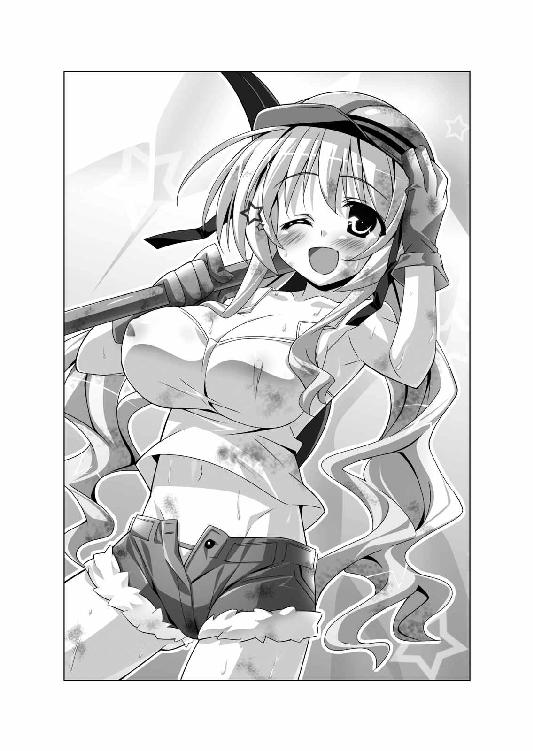
ア「普段はおしとやかなレイシアさまが泥まみれってのは、グッと来ますよね！ すごくいい写真が撮れたと思いますりりりりりりりりり、らららららららら、あばばばばばばばばばっ！」
ファ「小動物が謎の怪音を発しはじめた。正直キモい。近くに寄るな」
ア「キモいって言わないでくださいよ。《妄想カメラくん》の副作用なんです。ちょっぴりアホの子になっちゃうんですよばばばばばばばばばばば」
ファ「小動物がどうなろうと、わたしはフィギュアさえもらえれば関係ないがな」
ア「ひどい！ 僕らはもう友だちじゃないですか！ どんなコスプレしてるのか見せてくださいよー！（箱を叩く）」
ファ「叩くなと言っているだろう。くらわせるぞ」
ア「ぎゃああああああああああああ!!（電気ショックでしびれる） ピコルの穴、その２はここまで！ その３に続く～～～っ!!」
ファ「もう二度と出ない」
第三話 明るい家族計画
夜。トレクワーズ王国の首都トレクロ。一軒家の寝室。
ダブルベッドの上に、神来恭太郎とレイシアが横たわっていた。
第二王女はあまりにもセクシーな格好である。
スケスケのネグリジェに身を包んでいたのだ。薄水色のブラやぱんつが透けている。
薄明かりの下、魅力的なボディラインもくっきりと見えてしまっていた。
正常な男性であれば、即座にケダモノと化すほどの色っぽさだ。
恭太郎も、今にも煩悩に支配されてしまいそうだった。レイシアに襲いかかってしまいたい衝動に駆られる。
そんな恭太郎の苦悩を知ってか知らずか。
「恭太郎さま......」
レイシアがそっと手を伸ばしてきた。
恭太郎の手をとり、自分の胸に押し当てる。
むにょにょんっ──柔らかすぎる爆乳に、恭太郎の指が思い切り沈み込んだ。
「恭太郎さまが望むなら、私はどんなにえっちなコトをされても構いません。恥ずかしいですが、どこを触られても平気です......」
潤んだ瞳で、恭太郎を見つめてくる。
「だって、私と恭太郎さまは夫婦になったんですから......」
その言葉で、恭太郎の理性は吹き飛んでしまった。
思わず指に力を込めて、レイシアの胸を揉んでしまう。
「......はぅっ」
王女さまは甘い吐息を漏らして──。
恭太郎は後宮に入れられ、王女たちにお世継ぎづくりを迫られる生活を送っていた。
その彼が、どうしてレイシアと夫婦になっているのか？
......ご多分に洩れず、ピコル師匠の策略なのだが、今日も今日とて恭太郎は大変な目に遭ってしまったのだ。事件の顚末を理解してもらうには、少しばかり時間を遡る必要があるだろう。
×××
トレクワーズ王国の首都トレクロは、ウィッチェリア大陸でも有数の美しい都市だ。
夕日に照らされた石畳の道沿いに、白い壁に赤い屋根を持つ家々が並ぶ。街路樹が茂り、花壇には季節の花が色とりどりに咲き誇る。夕飯の時間も近いからか美味しそうな料理の匂いが漂い、あちこちから帰宅する子どもたちの笑い声が聞こえてくる。
しかしながら。
「ふはああああぁぁぁぁ～～～～............」
地図を片手に歩道の隅っこを歩く恭太郎の口からは、素敵な街並みにはとことん似つかわしくない深いため息が漏れていた。
王仕さまである彼は、基本的に後宮から外出できない。普段なら、めったに見られない街並みを観察しようと、おのぼりさんみたいにキョロキョロしてしまうところだ。だけど今は、そんな余裕もなかった。
後宮のヌシであるピコルの発案で、とんでもない作戦が決行されることとなったのだ。
題して、『明るい家族計画大作戦』。
もはや作戦名だけでもイヤな予感が漂いまくりなのだが、内容も明らかに怪しかった。
今日の朝のこと。ノックもなしに後宮の恭太郎の部屋へと乗り込んできたピコル師匠は、こんなことを言い放ったのである──。
「起きろ、恭太郎！ おぬしは一向に姫さまがたとお世継ぎづくりをしようとせぬな？」
「......朝っぱらからお説教ですか？」
「子どもができるというのは、本来とても喜ばしいことなのに、おぬしは拒み続けておる。嫌がる理由について吾はいろいろと考えてみたのじゃが......一つには、おぬしが『家族と共に過ごす』という幸せを知らぬからではないかと思い至ったのじゃ!!」
「............」
恭太郎は黙り込んでしまった。師匠の言葉を否定できなかったのだ。
母を幼い頃に亡くし、放蕩な父は家を空けてばかり。親代わりに恭太郎を育ててくれた実の姉は恭太郎に厳しい剣の修行を課した。
恭太郎は『家族と過ごす幸せ』とか『一家団欒』というものを、ほとんど味わったことがないのである。
「そこで、吾は名案を思いついた！ 一晩限定で姫さまがたと家族として暮らしてみてはどうかと考えたのじゃ！」
説明によれば、『明るい家族計画大作戦』は次のように行われるらしい。
・恭太郎は『お父さん役』。五人の王女さまたちには、『妻役』や『子ども役』をくじ引きで割りふる！
↓
・首都トレクロに一般的な家屋を用意し、家族として一日を過ごす！
↓
・恭太郎、家族と過ごす幸せを嚙みしめちゃう！
↓
・本物の家族が欲しくなって、お世継ぎづくりに積極的になる
「はぁ、なるほど......。いろいろなことを考えますね......」
もっと他のことに知恵を絞ったらいいのに。世界平和とか。環境問題とか。
「全ての準備は済んでおる！ さあ、恭太郎！ 姫さまたちと水入らずで一家団欒しちゃうがいいのじゃー！ ふゥはははー！」
そんなワケで、恭太郎はピコル師匠が用意したという家へ向かわされているのである。
後宮のヌシが考えることだ。えっちなハプニングが待っているに決まってる。
逃げ出してしまいたい衝動に駆られるのだが......師匠によれば、市民に気付かれないように近衛騎士団によって家の周囲を警備しているらしい。王族にもしものことがないように護衛するためだ。
それに加えて、騎士たちには恭太郎が逃げ出さないよう監視する任務も与えられているそうだ。もし逃走すれば、魔法攻撃せよと命令されている。恭太郎に選択肢はないのだ。
「あくまで、家族として過ごすんだ。めったなコトは起こらないよな......？」
言い聞かせるように呟くけれど......やっぱり不安だよなぁ。
悪寒のようなものを感じて、ジャケットの襟をかき合わせた。レンガで舗装された道に長く伸びる自分の影を眺め、もう一度、深い深いため息を吐く。
地図を頼りに住宅街を歩いていくと、『明るい家族計画大作戦』の舞台として用意された一軒家にたどり着いた。
現代日本にある恭太郎の家から、武道場を除いたぐらいの大きさだ。これがトレクワーズの一般的な家屋なのかもしれない。
生け垣をくぐり、玄関の扉を渡されていた鍵で開けて──恭太郎は固まってしまった。
「おかえりなさいませ、恭太郎さまっ」
玄関先で第二王女のレイシアが三つ指をつき、満面の笑みを浮かべていたのだ。
レイシアをマジマジと見つめてしまう。
いつものドレスではなく、純白のワンピースに身を包んでいる。『若奥さま』なんて言葉がぴったりの清楚で奥ゆかしい雰囲気だ。こんな奥さんが待っているなら、世の男性は誰だって一刻も早く我が家に帰りたくなっちゃうに違いない。
レイシアは三つ指をついたまま、小鳥のように首を傾げる。
「私の顔になにかついていますか？」
「い、いや、なんでもないよ。いきなり出迎えられたから驚いただけだ」
「世の奥さまは、こんな風に出迎えてるとうかがったんですが......」
王女さまは三つ指をついた自分の姿を見下ろす。今にもはち切れそうなほどに盛り上がっているワンピースの胸元に、《妻》と書かれたバッジがつけられていた。
「レイシアが奥さんの役なのか？」
「はいっ！ みんなでくじ引きをして決めたんですっ！」
立ち上がったレイシアは、爆乳の前で手を組み合わせた。
「引き当てたとき飛び上がって喜んでしまいました。私はどうしても恭太郎さまの奥さまの役をやりたかったんですっ」
「そ、そうなのか......」
恭太郎は自分の顔が熱くなるのを感じた。
まるで、俺の奥さんになりたいって言われたような気分だな......。そんなこと言われたら、なんだかドキドキしちゃうよ。
嬉しそうに言い切った後で、王女さまは頰を赤らめる。ハッと口元を押さえた。
「そんなこと言われても、迷惑ですよね？」
「迷惑じゃないよ。奥さん役がすごく似合ってると思うし......」
「そう言っていただけるととっても嬉しいです♪」
はにかむように笑いながら、レイシアは恭太郎に近づいてきた。ぎこちない手付きで、ジャケットを脱がしてくれる。
「どうぞ、お上がりくださいませ。今日一日だけですが、ここが私たちのおうちですよ」
「あ、ああ。お邪魔します......」
いたずらっぽい顔つきになって、レイシアが恭太郎の顔を覗き込んでくる。
「恭太郎さま。セリフが違いますよ？」
「......ただいま」
「おかえりなさいませ......あなたっ」
レイシアはさらに真っ赤になってしまう。
「す、すごく照れくさいですね」
「そ、そうだな......」
レイシアが用意してくれたスリッパに履き替え、家に入る。
ごく普通の洋風家屋だ。白い壁に板張りの廊下。至る所に彫刻や絵画の飾られた華美なトレクワーズ王城に慣れているせいか、とても落ち着いた雰囲気に見える。
「あのっ、恭太郎さまっ」
レイシアが恭太郎の前に立った。緊張したように、幾度も咳払いをする。
「恭太郎さまが帰ってらっしゃったら、真っ先に言うべきセリフを教わっているんです」
レイシアはじーっとこちらを見つめてきた。彼女はとんでもない美少女だから、それだけで心臓がドキドキしてしまう。
「お食事になさいますか？ お風呂になさいますか？ それとも───わ・にゃ・し？」
「わにゃし？」
がくーっと肩を落とすレイシア。
「緊張しすぎて、嚙んでしまいました。『わたし？』と聞きたかったんです。一生懸命練習したのに、本番で失敗しちゃうなんて......」
思わず、「ぷふっ」と噴き出してしまう。落ち込んでるレイシアの姿が、あまりにも可愛かったのだ。
王女さまは恭太郎の背中をポフッと叩く。
「もうっ、恭太郎さまっ、笑わないでくださいましっ。私は真剣なんですっ」
「ごめんごめん。悪かったよ」
謝りながら、恭太郎は質問をしてみた。
「ところで、きみが妻役ってのはわかったけど、他のお姫さまたちにも、なにかの役目が割り振られてるのか？」
「ピコルさまによれば、全員が参加するそうです。でも、くじ引きでなんの役が当たったのかは私もわかりません」
レイシアがそう答えたとき。
「うわ～～～～～～～～～～～～んっ!!」
家を揺るがすほどの泣き声が響き渡った。
「こっちの部屋みたいです！」
レイシアと二人で声の出所へと駆けつける。
一室へと飛び込んだ恭太郎は、「ぬおっ!?」と声を上げてしまった。
そこは子ども部屋だった。大きなぬいぐるみや積み木が用意されてる。
ベビーベッドの柵に手を掛けて赤ちゃんが立ち上がり、大きな声を上げていた。
黄色いベビー服＆カピバラの描かれた可愛いよだれかけ。髪は長いツインテール。明らかに見た目は可愛らしい一歳くらいの『赤ちゃん』なんだけど......。
レイシアが口元を手で押さえて。
「ひょっとして、メルル......？」
そう──赤ちゃんの顔つきはどこからどう見ても、メルルちゃんだったんだよ！
泣き真似をしていたメルルちゃん（？）は、赤ちゃんには似つかわしくない『やれやれだぜ......』とでも言いたげな呆れた顔つきで唇を尖らせた。
「もー、やっと来てくれたんだね。遅いよー。メルル、準備バッチリで待ってたのに！」
「どうして、メルルが赤ちゃんになってるんですか......？」
「決まってるでしょ！」
ベビー服の胸元を指さす。よだれかけには《赤》と書かれたバッジがついていた。
「メルルは恭太郎おにーちゃんと、レイシアおねーちゃんの子どもの役なんだってさ！ 今日は恭太郎パパとレイシアママだね♪」
「『赤ちゃん役』っていうか......完全に赤ちゃんになっちゃってるじゃないか！」
恭太郎の問いに、赤ちゃんメルルはウィンクで答える。
「ピコルししょーがね、魔法のベビー服を貸してくれたんだっ。《ベビベビスーツ》って名前のマジックアイテムなんだって」
黄色いベビー服のオナカ辺りを引っ張る。
「これを着ると、見た目が赤ちゃんに変わっちゃうらしいよ」
「なんでそんなアイテムが存在するんだ。俺には存在意義が見いだせないんだが......」
「ししょーが『赤ちゃんプレイをしたい王仕さまのために用意してあるのじゃ』って言ってたよ。本格的だねっ♪」
見た目まで赤ちゃんに変身するなんて、本格的すぎるだろ！ 本格的な変態だ！
と、赤ちゃんと化したメルルが恭太郎に向かって両手を伸ばしてきた。
「ねーねー、恭太郎パパぁ！ 抱っこして」
「......ああ、いいよ」
えっちなお願いは聞くわけにはいかないけれど、それぐらいなら問題ないだろう。赤ちゃん相手に欲情するコトなんて、一〇〇〇％あり得ないし。
メルルちゃんをそっと抱き上げる。
「よいしょっと......。うわっ、軽いな！」
当たり前だけど、普段のちぃ姫さまよりも、ずっと軽かった。なにもかもが華奢で少しでも力を加えたら壊れてしまいそうだ。
赤ちゃんを抱っこした経験なんてなかったけど......こんなにちっちゃいんだな。
「恭太郎さま、赤ちゃんを抱っこするのお上手ですね」
レイシアが、恭太郎の腕の中にいるメルルの顔を覗き込む。
「うふふ、すごく可愛いです」
メルルの丸いほっぺを優しく撫でる。
「くすぐったいよ、レイシアママー」
むずかりながらも、メルルちゃんは笑みを浮かべた。
（本当に可愛いな......）
自分の腕の中で赤ちゃんが笑っていると、心が和やかになるのを感じた。
ひょっとしたら、これが『父性』ってヤツなのかもしれない。
赤ちゃんと化したメルルちゃんを相手にしてさえ、こんな風に感じるのだ。もしも自分の血を引いた子どもを抱っこしていたら、どれぐらいの幸福を感じるんだろう？ 今の俺には想像もつかないけれど......。
「私と恭太郎さまの間にお世継ぎができたら、こんな感じで二人であやすんでしょうか？」
「うん。そうかも知れない......」
恭太郎はカタブツなサムライ少年だが、死ぬまで純潔を貫くつもりもない。妻と決めた女性と一生添い遂げるつもりだ。
もしも、レイシアと夫婦になったなら......子どもを作ることもあるだろう。そしたらレイシアと二人で、こんな風に赤ちゃんを抱っこしてあやすのかな......？
（レイシアが、俺の妻に......）
何気なく返事をした後で、ふと顔を上げる。
レイシアは恭太郎をジッと見つめていた。
二人で視線を絡ませ合ってしまう──。
「だーだー！ ばーぶーっ！」
恭太郎の腕の中で、メルルちゃんが手足をバタつかせる。取り落としそうになって、慌ててしっかりと抱きかかえた。
「こらー！ 二人だけでイイ雰囲気作んないでよーっ！」
「イイ雰囲気だなんて、からかわないでちょうだい......」
レイシアが顔を赤らめてうつむく。恭太郎も恥ずかしくなって視線をそらせた。
赤ちゃんと化しているメルルちゃんが、「ぶー」と唇を鳴らす。
「......んもうっ、メルルだって赤ちゃんじゃなくて、恭太郎おにーちゃんの奥さん役をやりたかったんだからねっ。あんまり見せつけられたらムッとしちゃうよー」
「ん？ なんか言ったかい？」
「なんでもないよーだっ。......あっ、そうだっ！ ちょっと困らせちゃえ♪」
メルルちゃんは赤ちゃんには似合わない、イタズラっぽい笑みを浮かべた。
ちっこい手でレイシアの指を握り、甘えたような声を掛ける。
「ねー、レイシアママー。オナカ空いた～」
「まあ、それは大変です。すぐにほ乳瓶を用意しますねっ」
「そんなのヤダよー。レイシアママのおっぱいを飲ませて」
「いいっ!?」
思わず奇声をあげてしまう恭太郎。
「わ、私の、ですか？」
レイシアはワンピースの胸元に手を当て、首を横に振る。
「ミルクは出ないですっ」
「そんなに大きいのに～？」
「大きさは関係ありませんっ」
「おっぱいあげるフリだけでいいよ～。あくまでれんしゅーだもん♪ 将来、お世継ぎができたときに役にたつよっ！」
「はうっ」
「恭太郎パパが、おっぱいをあげるレイシアママの姿を見たら......奥さんっていいものだな～って思ってくれるかもよ～？」
なんて危険なコトを言ってるんだ!? レイシアは、すごく真面目で、お世継ぎづくりに前向きなんだ！ そんなことを言われたら......！
レイシアは決意に満ちた表情で頷いた。
「......わかりました。やってみますっ！」
うわあ、やっぱりだよ!?
恭太郎の腕からメルルを抱き取ると、レイシアは部屋の隅にある白いソファに腰掛けた。ワンピースのボタンに手を掛ける。
レイシアは本当の妻じゃない。今日は妻役を演じてるってだけだ。おっぱいをあげるシーンなんて見るわけにはいかない！
「お、俺は部屋の外に出てるよ！」
踵を返そうとしたのだけれど、レイシアが真剣な口調でお願いしてきた。
「恭太郎さま、見ていてくださいましね。私、頑張ってやり遂げてみせます！」
「は、恥ずかしくないのかよ!?」
「ものすごく恥ずかしいです......。でも、ちゃんとお母さん役もできるんだってところを、恭太郎さまに見て欲しいんです」
そんな真剣な表情で言われたら、逃げ出すことなんてできないじゃないか！
ワンピースの胸元をはだけさせたレイシア。薄水色のブラが丸見えだ。
「はうううぅぅ......」
耳の先まで真っ赤に染めたまま、レース地のカップに指を掛けてゆっくりとずらしていった。
やがて──ぶるるるるるんっ
大ボリュームの爆乳がこぼれ落ちるように露出してしまう。
胸の前にメルルちゃんの顔があるから、大事な部分は辛うじて隠れてる。でも、片方の胸が丸出しになってるのだ。
恭太郎の心臓がドキッと高鳴ってしまった。
「うわあ～、レイシアママのおっぱい、間近で見るとおっきいね～」
「あ、あんまり見ないでください」
「しかも、すっごく柔らか～い！ 気持ちい～い！ いいなぁ、メルルのおっぱいもこれぐらいおっきくなったらなぁ～」
「だ、ダメっ。メルル、そんなに揉んじゃいけません。あんっ」
「揉んだ方がおっぱいの出がよくなるって、ししょーが言ってたよ？ もみもみ～」
「あぅっ んっ」
レイシアの抱っこしているメルルちゃんのちっこい手が爆乳に埋まっていた。
胸を揉まれて、レイシアは肩をぴくぴくと震わせる。
「えへへ。それじゃ、いただきま～す──はむっ♪」
「ひゃんっ」
一際大きく、レイシアはカラダを震わせた。
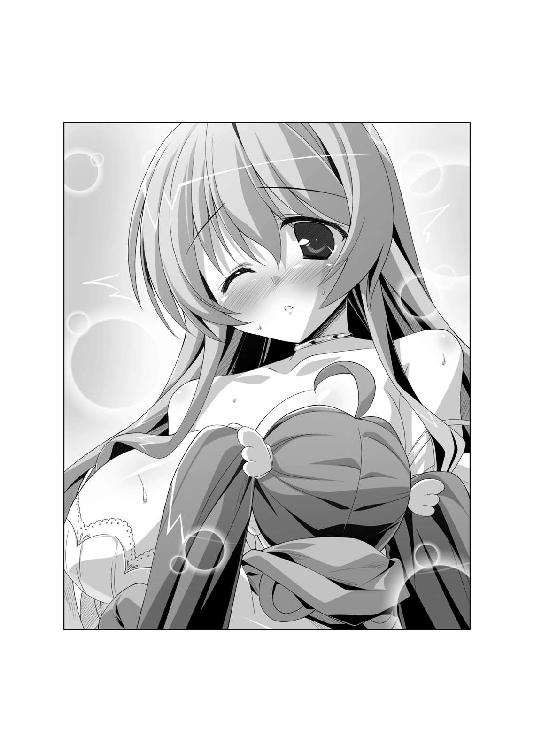
赤ちゃん状態のメルルちゃんが、爆乳に吸い付いたんだ。
ちゅ～ ちゅ～っ──音を立てて、レイシアの右側のおっぱいを吸ってる。
「はうっ あうぅ」
「やっぱ、出ないね？」
「あ、当たり前ですっ......」
「こんな風にしたらどうかな？ れるれる～」
「舌先で舐めないでぇ......あふっ メルル、なんだかえっちぃですよ？」
「だって、レイシアママの反応が可愛いんだも～ん♪ メルルまでドキドキしちゃう」
「ダメですったら......ああんっ 赤ちゃんにおっぱいをあげるだけなのに、ヘンな声が出ちゃいます......」
鎖骨の辺りまで真っ赤に染めて、レイシアはギュッと目を閉じてる。なにかを堪えるみたいに太ももをモジモジさせていた。
あくまで、これは授乳の練習シーンだ。
ほ乳類であれば、どんな生物でも子育てのために行う。なんらえっちな要素はないはずの光景なのだ。
でも、猛烈にえっちく見えるのはなぜですかあああああああああ!?
その場に突っ伏して、ヘッドバットを床に連打したい衝動に駆られる。
恭太郎の脳内で理性と煩悩が熾烈な勢力争いを繰り広げている間にも、メルルちゃんはさらにエスカレートしていった。
「もっと強く吸ったら出ないかな？ んちゅちゅちゅ～～～っ」
「やっ、ダメっ あんっ はうぅっ」
ちゅー ちゅー ちゅちゅ～～っ
吸い続けられているうちに、レイシアの顔がぽゎーっとなってしまっていた。酔っぱらったみたいに頰が赤い。
そこで、メルルちゃんがさらに恐ろしいことを言い出した。
「ねーねー、恭太郎パパも一緒におっぱい飲みなよ～？」
「お、俺も!? 俺は赤ちゃんじゃないぞ！」
「ししょーが言ってたの。『奥さんのおっぱいの片方は赤ちゃんのもので、もう片方は旦那さんのものなのじゃ』だってさ！」
なんだよ、そのオヤジ思考的な発言は！ ピコル師匠なら言いそうだけども！
「旦那さまにも吸っていただくんですか......？ そんな風習があるなんて、ちっとも知りませんでした......」
胸を吸われて感じすぎてしまったのか。はたまた、赤ちゃんにおっぱいをあげると幸福な陶酔感に満たされてしまうのか。
レイシアは特に疑うこともなく、さらにワンピースをはだけさせた。
ぽゎーっとした表情のまま、レース地のブラをずらして左側の爆乳も露出しようとする。
（どわあ！ ダメだって!? さすがに止めなきゃ!!）
恭太郎が制止するよりも早く、子ども部屋に爆音が轟いた。
「いい加減にしなさいっ！ あんまりえっちなのはダメなんだからねーっ！」
ドアを蹴破って、ユフィナが飛び込んできたのだ。
第一王女の格好を見た恭太郎は、噴き出してしまった。ムラムラしていた気分が一瞬で吹き飛ぶ。
手には杖。身に纏っているのはムームーみたいなゆったりした服。燃えるように赤い髪を頭のテッペンでお団子にまとめ、かんざしのようなもので留めてる。口元にはなぜかシワのような線が書かれてた。
胸元にくっついてるバッジは──《婆》!?
「ひょっとしてその格好は......お祖母ちゃん役なのか!?」
どこからどう見ても、ユフィナはお年寄りの格好をしていたのだ！
怒り顔のユフィナが、さらにムッとした表情になった。
「くじ引きで決まっちゃったのよ！ 私だって、こんな格好したくないわ！ 女王陛下が、早く孫の顔を見たがってるって言われたから仕方なく従ってるだけで......」
「孫の顔を見たいって言われたのに、ユフィナおねーちゃんがお祖母ちゃんになっちゃったんだね♪ にゃははは！ おもしろーい！」
「笑い事じゃないわよっ！」
胸元を手で隠しつつ、レイシアがフォローを入れる。
「あ、あのっ、似合ってると思います」
「褒められてもうれしくなーいっ！ 女王陛下のご命令でもあるから、一晩だけ付き合うけど......私はこんなバカバカしいことやりたくないのよっ！ 今夜は一晩中、部屋に引きこもらせてもらうからねっ！」
「ユフィナおばーちゃんも、本当は恭太郎パパの旦那さん役がよかったの？」
「そ、そんなこと言ってないでしょ!? 恭太郎の奥さん役なんてやりたいワケないじゃないっ！ というか、『おばーちゃん』って呼ばないで！」
ギロリ──烈火のような勢いで、再び恭太郎を睨み付け、杖を突きつけてくる。
「家族っぽく過ごしてみるってのはいいにしても......えっちなコトは許さないからね！ レイシアの、お、おっぱいを吸うなんて、言語道断よ！ 恭太郎のバカ～～～～っ!!」
「俺はまだなにもしてないだろ～～っ!? ぶべっ!?」
ユフィナは杖をフルスイングした。
恭太郎の脇腹にジャストミートし、野球のボールみたいに放物線を描く。
子ども部屋の窓を突き破り、庭を飛び越えて、表の通りまでぶっ飛ばされた。
「つーか、先が思いやられるな......」
奥さんのレイシアはハマり役すぎるし。
赤ちゃん役のメルルちゃんは、アグレッシブにもほどがある。
お祖母ちゃんなユフィナは、いつも通り凶暴だし......。
このうえ、なんの役かわからないけどエリスとアルトちゃんも『明るい家族計画大作戦』に参加するんだろ？
「一晩無事に乗り切れるのかな......？」
表通りの石畳に叩きつけられる直前、恭太郎はため息混じりに独りごちるのであった。
×××
わおーん！ わんわんわん！
夜。住宅街のどこかから、犬の遠吠えが聞こえてくる。
寝間着姿の恭太郎は、寝室のベッドにぐったりと突っ伏していた。
「つ、疲れた......！」
お姫さまたちと『家族っぽいこと』をして過ごしたのだけれど、あまりにもドキドキな展開ばかりだったのだ──。
まずは、食事だ。
レイシアが夕飯の準備をしてくれたのだけれど、キッチンで料理をする彼女はとんでもない格好をしていた。
「裸エプロン、だとぅ!?」
身に着けているのは白くてフリフリなエプロンだけ。ぷりんっとしたおしりや、大迫力な横チチが丸見えになっちゃってる。エプロンの隙間から今にも爆乳がこぼれ落ちそうで......目のやり場に困りすぎるよ！
と、おたまを手にしたレイシアが、ちょっぴり頰を染めて振り返った。
「裸ではありませんよ。一応、水着をつけているんです」
「あ、ホントだ......」
言われてみれば、Ｔバックのヒモみたいな水着をつけているようだ。エプロンの白いリボンに隠れて全裸にしか見えないけど、裸じゃないなら平気だよな、あははは！ 全然平気じゃないぞ、おい！
露出度が高いことに変わりはない。
しかも、そんな格好でキッチンに立っているのは猛烈に色っぽくて。
お料理の本を見ながら真剣に食事を作るレイシアはなんだか健気で。
時折、恭太郎の方を振り向いて、「もう少しだけ待っていてくださいねっ」なんて微笑む姿はものすごくキュートで。
恭太郎の中に潜むケダモノを押さえ込むのに必死だった。
気を抜いたら「食事の前にきみを食べちゃうぞー！」なんて叫びつつ、プリッとしたおしりに飛びつき、エプロンの脇から手を入れてその胸を──ってダメだ！ 妙な妄想はやめるんだ！ 鎮まれ！
襲い来るムラムラと戦う恭太郎を救ってくれたのは、奇しくもエリスだった。
「こらー！ なにを鼻の下を伸ばしてますの、恭太郎ー！」
突如、裏口のドアが開いて、エリスが乗り込んできたのだ。
第三王女の姿を見て、恭太郎とレイシアが同時に噴き出してしまう。
「なにを笑ってますのっ!?」
「だって、その格好、おかしいだろ!?」
普段のエリスは派手なドレスを身に纏い、長い髪は豪奢な縦ロールにしてる。高飛車な王女さまを絵に描いたような姿なのだ。
それなのに、今のエリスは──割烹着みたいなオバサンっぽい格好をしてる。
長い髪を三つにまとめ、いわゆる『サザ○さん』ヘアーになっていたのだ。
顔つきだけはクールな美少女のままだから、違和感がありすぎるよ！
ムッとしたようにエリスは眉を顰めて。
「これは典型的な『お隣の奥さん』の格好らしいですわ」
胸には《隣》と書かれたバッジがあった。
「では、エリスの役柄は『お隣さん』なんですか？」
「そうですわ！ このエリス・レムリス・トレクワーズが、どうして隣人役なんですのっ!? 妻役は私にこそ相応しいのにっ！」
言い切った後で、エリスはちょっとだけ頰を染めて、ゴニョゴニョと続ける。
「もちろん、恭太郎の妻になりたいわけではありませんわよ。次代の女王になるために必要だろうから、そう言ってるだけであって、」
「ん？ なんだって？」
恭太郎が問い返すと、エリスは慌てたように首を横に振った。
「な、なんでもありませんわ！ というわけで、レイシア！」
ズビシッとレイシアを指さして宣言する。
「妻の役を私に譲っていただきますわよっ！」
レイシアは優しくて、妹たちのワガママにも笑顔で応じるのが常なのだけれど......このときばかりは違った。
恭太郎の隣まで近づいてきて、ギュッと腕を摑んできたのだ。
まにょんっ──エプロンの脇からのぞく爆乳の丸みが腕に押し当てられて、ドキドキしちゃうよ!?
レイシアは小声で、しかし、キッパリと言い切った。
「奥さんの役は譲れませんっ」
「フン、そう言うと思いましたわ。こちらにも考えがありますの......！」
エリスは勝手に上がり込んでくる。
「お、お隣さんがどうして家に入ってくるんでしょうかっ？」
「お裾分けですわっ！ 平民たちの暮らしではよくある光景だと聞き及びましたのっ！」
エリスは食卓に、タッパーのようなものを並べていく。中には豪勢なお料理がいっぱい詰まっていた。
エリスは高飛車でワガママな性格に似合わず、家庭的だったりする。お料理も上手なんだ。きっとタッパーの中の料理は自分で作った物だろう。
「レイシアの料理と食べ比べて、どちらが妻役に相応しいか決めていただきたいですわ！」
水着エプロン姿のレイシアが、ギュッと拳を握った。
「わ、私だって負けませんっ！ 美味しい煮物を作っているところなんですっ！ 恭太郎さまも大喜びしちゃうはずですよっ！」
「ところで、レイシア？ なんだか焦げ臭いですわよ？」
「きゃあああっ！ お鍋を火に掛けっぱなしでした～～～～っ!?」
とまあ、そんな感じで。
《お隣の奥さん役》という微妙な役柄のエリスと、妻役のレイシアの間で、時ならぬ料理対決がはじまってしまったりして。
恭太郎は腹がはち切れそうなほどの量の食事をさせられてしまったのだ。
「もう食えない」って断ればよかっただろうって？ そんなことできるわけないだろう！
「あーんってしてくださいませ、恭太郎さま はい、あ～～～～～んっ」
「次はコッチですわよっ！ ほら、口を開けるのですっ！ あ～～～～んっ」
レイシアとエリスに、代わる代わる料理を食べさせられたのだ。満面の笑みで薦められたら、断れるワケがない！
結局、恭太郎は全ての料理を食べきることになってしまったのだ。
食事の後は、お風呂である。
恭太郎は新妻レイシアと一緒にお風呂に入ることになってしまったのだ。
なんでもピコル師匠から『新婚夫婦は一緒にお風呂に入るのが慣わしなのじゃ！』とか言われたらしい。
さすがに裸の女の子と一緒に入浴するわけにもいかない。当然ながら断ろうとしたのだけれど、レイシアは今にも泣きそうな顔になってしまった。
婦女子を泣かせたとあっては男が廃る。
結局断り切れず、レイシアには水着をつけてもらうという条件で一緒にお風呂に入ることになったのだ。
後宮でも何度かピコル師匠の策略によって、一緒に入浴させられたことがある。今までと大差ないと思っていたのだけれど......一般家庭のお風呂は後宮のものとは違っていた。
湯船が狭いから、一緒に入ると肩や太ももが触れ合ってしまうのだ。
レイシアも恥ずかしいらしく、カラダを縮こまらせていた。
「ど、ドキドキしますね、恭太郎さま......」
「ああ、ごめんな。くっついてるのはイヤだろう？ ほどほどに温まったら、俺はすぐにあがるよ」
「い、イヤなんかじゃありません。今日は恭太郎さまの奥さんなのですから......もっとくっつかれても平気です......ぶくぶくぶく」
自分のセリフが照れくさかったのだろう。真っ赤になった顔を半分沈めて、息を吐くレイシア。
そんな彼女のようすはすごく可愛くて、恭太郎は平静を保つのが大変だった。
もしも本当の夫だったら、我を忘れて襲いかかっていたかも知れない。
そんなこんなで。
寝室のベッドに辿り着いた恭太郎は、精根尽き果ててしまっていたというワケだ。
「こんなことが明日の朝まで続くんだよな......。家族ってのも楽じゃないよ」
後宮のものよりもずっと低い位置にある天井を見上げて、ため息を吐く。
「しかも、まだアルトちゃんが出てきてないな......」
王女さまは全員参加しているようだ。第四王女のアルトもくじ引きによって、何らかの役柄が割り振られてるに違いない。
「アルトちゃんだったら、娘の役かな？ お祖父ちゃん役ってことはないよな？」
なんにせよ、あまりえっちな展開にならないような役柄でお願いしたいよ......。
躊躇いがちなノックの音が響いてきた。
「失礼します、恭太郎さま......」
返事をすると、おずおずとレイシアが入ってくる。
王女さまの格好を見て、恭太郎は鼻血を噴くかと思った。
レイシアはスケスケなネグリジェに身を包んでいたのだ!!
薄水色のブラやぱんつがうっすらと透けてしまっている。爆乳や可愛らしいおへそに目が釘付けになってしまいそうだ。
「どどど、どうして俺と同じ寝室に!?」
「この家には夫婦用の寝室は一つしかありません」
「じゃあ、俺はリビングで寝るよ！」
慌てて立ち上がり、部屋から出て行こうとする。
「恭太郎さま......！」
レイシアが駆け寄ってきて、ギュッと抱きついてきた。
もにっ──爆乳が背中に押し当てられ、心臓が飛び上がる。
「今夜はあくまでも演技です。夫婦のフリをしてみるだけです。ですから、お世継ぎづくりをしなくても構いません。......ですが、せめて、一緒にいてくださいませんか？」
第二王女はうるうると潤んだ瞳で、恭太郎を見つめてきた。
「私は、恭太郎さまの奥さま役になれて、すごくうれしかったんです。私なんかが妻役では、恭太郎さまが家族を持つ幸せを感じてくださるかわかりませんが......。精一杯、いい奥さんになりたいって思ったんです」
「レイシア......」
「ダメ、ですか？ 一晩だけ、夫婦のフリをしてくださいませんか......？」
世の男性諸氏に問いたい。
どんなにカタブツであろうと、こんなことを美少女に言われたら、『ＮＯ』と言えないんじゃないだろうか？
「わ、わかったよ......。同じベッドで眠るだけなら......」
すると、レイシアの顔がぱあっと明るくなった。
「ありがとうございます、恭太郎さまっ」
あまりの可愛らしさと色っぽさにクラクラしてしまいつつも、恭太郎は感心してしまった。
（やっぱりレイシアは真面目だなぁ......。ピコル師匠の謎の作戦に、こんなに真摯に従うなんて......。普通は好きでもない男と、同じベッドに入ろうなんて思わないだろうに......。トレクワーズ王国のために、頑張ってるんだろうなぁ......。うむうむ）
このココロの声をピコル師匠が聞いたら、『鈍感男め！』と怒鳴られているところだろう。だが、朴念仁な恭太郎は真剣にそんな風に考えてしまうのだった。
仕方なく、レイシアと二人でベッドに入る。
二人で枕を並べて横たわった。
すぐ近くにレイシアの可愛らしい顔がある。
寝てしまおうと思ってまぶたを閉じても、眠ることなんてできるわけがない。
ドキドキ。ドキドキ。ドキドキ。
心臓が爆発しそうなくらいに拍動してる。
「恭太郎さま......」
微かな衣擦れの音が聞こえて、恭太郎は目を開いた。
レイシアが恭太郎の方へすり寄ってきた。
吐息が掛かりそうなほど間近で、王女さまと見つめ合ってしまう。
「おそばにいさせてください......」
レイシアはスケスケのネグリジェに身を包んでる。ふるふると揺れる爆乳の谷間に、視線が釘付けになってしまった。
恥ずかしそうにしつつも、レイシアは胸元を隠そうとはしなかった。小さく唇を嚙み、恭太郎を見つめてる。
「ピコルさまに、教わったのです。世の殿方は、こういった透ける素材の服に興奮なさる、と。恭太郎さまもドキドキしてくださってますか？」
「それは、その、なんていうか......」
「私なんかじゃ、魅力がありませんでしょうか？」
恭太郎は首を横に振る。
「そんなことないよ。むしろ、逆だ......」
「逆......？」
「魅力的すぎて、困ってるんだよ」
レイシアはナイスバディで、しかも超がつくほどの美少女だ。そんな女の子がセクシーな格好で隣に横たわっているなんて......ケダモノにならずにいられる自信がない。
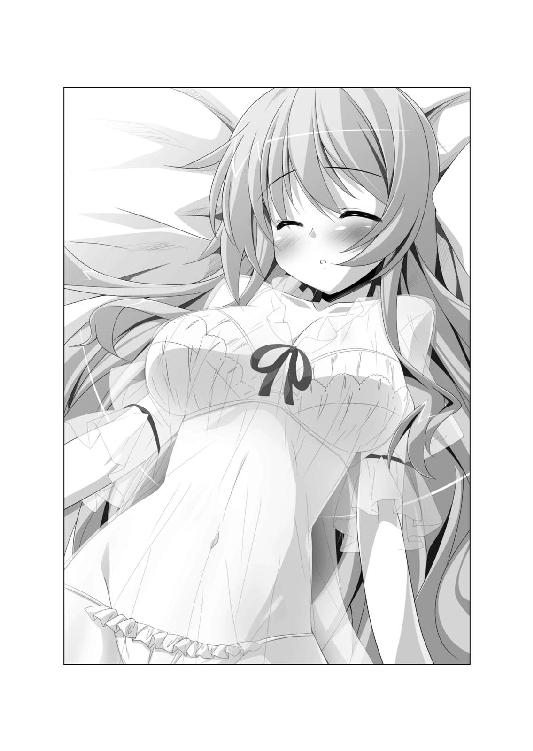
恭太郎の言葉を聞き、レイシアは照れくさそうに微笑んだ。
「そう思ってくださるなら、すごくうれしいです......」
さらに恭太郎に近づいたレイシアは、そっと手を握ってきた。
そして──もにゅんっ
「はうあっ!?」
自分の胸に恭太郎の手を押し当てる。柔らかすぎる爆乳に、恭太郎の指が思い切り沈み込んだ。
「恭太郎さまが望むなら、私はどんなにえっちなコトをされても構いません......。どこを触られても平気です......」
潤んだ瞳で、恭太郎を見つめてくる。
「だって、私と恭太郎さまは夫婦になったんですから......」
その言葉で、恭太郎の理性は吹き飛んでしまった。思わず指に力を込めて、レイシアの胸を揉んでしまう。
「......はぅっ」
王女さまは甘い吐息を漏らした。その声で、恭太郎のなけなしの理性が完全に消滅してしまう。
「レイシア......！」
もうなにも考えられなくなって、王女さまのカラダにのし掛かろうとして──
「そこまでですわーっ！」
突如、寝室に大きな声が響き渡った。
蹴破るような勢いで扉を開いて、エリスが飛び込んできたのだ。
「というか、きみまでそんな格好を!?」
エリスまで、スケスケのネグリジェに身を包んでいたのだ！
相変わらず、髪型はサザ○さん風だから、ドキドキしていいのかわからない。
「お隣さん役のエリスが、どうして寝室へ来るんですか？」
至極真っ当なレイシアの問いにエリスはフンと鼻を鳴らした。
「隣人役ですけれど、ピコルから寝室に乗り込んでも構わないと言われてますの」
「いいわけないだろ、そんなこと!!」
エリスはコホンと咳払いをして、棒読みでセリフを続ける。
「主人が単身赴任中で、カラダがうずいてたまりませんの......」
「ななな、なに言ってるんだ!?」
隣の若奥さんが不倫をする時にはありがちなセリフかもしれないけど!?
顔を真っ赤にして、エリスが怒鳴り返す。
「私だって言いたくありませんわ！ でも、このセリフを聞かされると、殿方はお隣の奥さんを襲いたくて仕方がなくなるとピコルに聞きましたの！」
「............」
「なにを固まってますの!? リアクションがないと余計に恥ずかしいですわっ！」
「返答に困るんだよ！ なんでもツッコミを入れられると思うな！」
「えへへ、メルルもいるよ～っ！」
エリスに続いて、メルルちゃんまで寝室に飛び込んできた。
たたたっと駆け寄ってきて、ベッドの上に飛び乗る。
魔法が解けたのか、さっきまで赤ちゃんぐらいの大きさだったのに、今はいつものメルルちゃんの身長に戻っていた。
でも、服装は相変わらずの赤ちゃんルックのままだ。ぴったりとフィットしたベビー服がメルルちゃんの幼児体型を浮き立たせていて、とんでもなく倒錯的だった。
ベッドに飛び乗ったメルルちゃんは、ベビー服のオナカの辺りに手を掛けた。
「ねえねえ、恭太郎パパぁ......？」
おむつを替えられるように、ベビー服はおまたの部分が開くようになっているのだ。スナップを外して、ちらっと中を見せる。
「恭太郎パパにだったら、メルルのおむつを替えられちゃってもいいよ」
意味がわからーんっ！ でも、猛烈にドキドキするのはなぜですかー!?
「恭太郎！ 私と不倫するのですわっ！」
「だ、ダメですよっ！ 私が奥さん役なんですっ！ 恭太郎さまっ、レイシアと初夜を迎えてくださいっ！」
「恭太郎パパ～♪ メルルにカマってくれなきゃ、夜泣きしちゃうぞっ」
お姫さまたちが抱きついてくる。
むにょっ まにょっ ふにゅっ
カラダを押しつけまくられ、柔らかい感触を至る所に感じた。
「独り占めなんて許しませんわよ！」
「そーだよね～ 恭太郎おにーちゃんはみんなのものだよっ！ ユフィナおねーちゃんやアルトおねーちゃんも来たらいいのにね？」
「そう言えば、アルトはどうしたんでしょうか？ 姿を見かけませんね。せっかく家族として過ごしているんです。一家団欒ができたらよかったのですが......」
「だんらん、だんらーん♪」
「こんなのは断じて一家団欒なんかじゃな～～～～いっ！」
のんきなことを喋ってるお姫さまたちをよそに、恭太郎の限界は近づいていた。
ぐおおおっ！ ヤバいって！ 気持ちよすぎるよ!?
セクシーな格好をしている王女さまたちにくっつきまくられてるのだ、興奮するなって方が無理だ！
あくまで、これは家族のフリをしているだけなんだ。無心になれ、神来恭太郎！ 決して邪な気持ちを抱くんじゃないぞ！
自分に言い聞かせたけれど、ムラムラは抑えきれない。恭太郎の脳内では煩悩が嵐のように巻き起こり、理性を駆逐していく。心拍数、血圧ともに急上昇。もはや、脳内の興奮ゲージはレッドゾーンに突入寸前。
（もうダメだ......。限界だ......！）
咆哮をあげ、今にもケダモノと化して襲いかかりそうになった、刹那。
ズバーン！──勢いよく扉を開いて、お祖母ちゃんの格好をしたユフィナが乗り込んできたのだ。
「こらー、あんたたちー！」
「あ、ユフィナおばーちゃんだー」
「おばあちゃんって言わないで！」
怒りの表情を浮かべたまま、ユフィナが恭太郎に近づいてくる。
「ようすを窺ってたら、ヘンな声しか聞こえて来ないからビックリしたわよ！」
「ユフィナお姉さま、ようすを窺ってらっしゃったんですか？」
「恭太郎おにーちゃんが盗られちゃうんじゃないかって、心配だったんでしょー？」
メルルがからかうと、エリスが驚いたように目を丸くした。
「姉さま、恭太郎が好きなんですのっ!?」
「ち、ちち、違うわよ！ 恭太郎がえっちなコトをしでかさないか監視してただけ！」
烈火の如き眼差しで恭太郎を睨み付け、怒声を叩きつけてくる。
「ベビー服着たメルルまではべらせるなんて、変態にもほどがあるわよ！」
「俺がやらせたワケじゃないぞ！」
《烈火の王女》は、手を横に伸ばした。
巨大な手甲が装着され、炎に包まれた大剣が出現する。
「えっちなのは絶対ダメなんだからね！ このドヘンタイ──ッ!!」
「いや、待ってくれ！ 頼むから、俺の話を聞けよ！」
「問答無用よ──っ!!」
恭太郎の耳に、ユフィナの鋭い声が響く。
「【火竜演舞】!!」
「ぎゃぼ～～～～～～～っ!?」
攻撃魔法の直撃を受け、恭太郎は窓を突き破って星空へとロケットのように飛んでいく。
夜空で華麗な放物線を描きつつ、深々とため息を吐いた。
ピコル師匠。あなたの考える作戦は、たいがいひどいですけど、今回は最悪ですよ......。一家団欒なんて、これっぽっちもなかったじゃないですか......。
アルトちゃんがなんの役だったのか、わからなかったし......。
思いつきに俺を巻き込むのはやめて欲しいですよ。とほほほほ......。
×××
──ちなみに。
アルトにもくじ引きによって、ちゃんと役割が与えられていた。
恭太郎たちが過ごしていた家の庭。片隅に置かれた犬小屋。
（あぅぅぅ、誰も気付いてくれません......）
犬耳＆犬鼻をつけ、モコモコした毛皮のビキニに身を包んだ第四王女のアルトは、るるるるーっと目の幅涙を流していた。
胸元のバッジには《犬》と書かれている。
アルトはペット役になってしまったのだ。
首輪を繫がれていたせいで、家の中に入ることもできない。
しかも、犬っ鼻はマジックアイテムらしく人間の言葉を喋ろうとすると犬の鳴き声に変わってしまった。喋ることすらできなかった。
（私みたいなダメダメな王女さまには、わんこの役がお似合いなんですぅ......）
肉球で涙を拭いつつも、アルトは心の中で呟いた。
（でも、次の機会があったら、今度は恭太郎さまの奥さんの役になれたらいいな...... なんちゃってなんちゃってー！）
「わおーん、わんわんわんっ！」
アルトの遠吠えが決意の表れだったのか、照れ隠しだったのか。それは誰にもわからないのだった。
ハーレム講座☆ピコルの穴！ 特別編・その３！
アレスタ（以下、ア）「ピコル師匠プレゼンツ☆ハーレム講座！ 題してピコルの穴！ 第三弾です！ 今回は特別編として、《春だ一番、妄想カメラくん祭り！》を開催してまーすっ！」
ピコル人形（以下、ピ）「ソウナノジャ！（背中のスイッチを押す）」
ア「えっちな写真をいっぱい撮りまくって、特別ゲストにも来てもらって......うん、ピコル師匠がいなくても、めちゃめちゃ盛り上がっちゃってるよね！ ひゃっふー！」
ピ「ソウナノジャ！（スイッチを押す）」
ア「これなら僕一人でもやっていけそうだよ！ コーナーの名前も変えちゃっていいんじゃないかなっ！ 『アレスタの部屋』とか、『アレスタのひとりでできるモン』とかさっ。毎回、素敵なゲストをお招きしてえっちなトークに花を咲かせたり、妄想写真を撮っちゃったりするんだ。うわー、楽しそう！」
ピ「ソウナノジャ！ ソウナノジャ！（スイッチを押す×２）」
ア「............」
ピ「ソウナノジャ！（スイッチを押す）」
ア「......なーんちゃって。うっそでーす」
ピ「............」
ア「一人はやっぱり寂しいよ。質問にも答えられないし。うぅ......ぐすぐすっ......（涙）」
ピ「............」
ア「やっぱり無理です。僕だけじゃ、ピコルの穴はできませんよ......。ピコル師匠、帰ってきてください～～～～っ！ うわ～～～～～んっ！（号泣）」
？？？「......まったくもう、世話の焼けるヤツなのじゃ。やはり、吾がいなければダメじゃのぅ」
ア「こ、この声は!!」
ピコル（以下、ピ）「仕方ないから、来てやったのじゃ」
ア「ピコル師匠～～～～～っ!!」
ピ「抱きつくでないのじゃ。ローブに毛がつくじゃろ」
ア「師匠～～～っ 師匠～～～っっっ」
ピ「これこれ、頰ずりをするな！ くすぐったいのじゃ！」
ア「だってだって、うれしいんですもん！ すっごく寂しかったんですよぅ！......いやー、それにしてもピコル師匠って、本当に胸がないですね」
ピ「これ！ ドサクサに紛れてどこを触っておるのじゃ！ 愚か者め！」
ア「痛ーっ!? 教鞭が刺さってます！ おでこの中央に教鞭が深々と刺さってます！」
ピ「痛がってるのに顔が笑っておるのじゃ......。アレスタ、さてはドＭじゃな」
ア「ピコル師匠が来てくれたのが真実だってわかって、なんだか痛いけどうれしいんですよ。Ｍなのは否定しませんけどねっ」
ピ「とんだヘンタイカピバラなのじゃ！」
ア「ところで、ピコル師匠。来てくれたのはうれしいんですが......今はいろいろ大変な状況ですよね」
ピ「姫さまがたと一緒にカルタギアに捕まってしまったのじゃ。本来なら、ピコルの穴にも登場できぬ。愛する読者諸君のために特別に顔を出したんじゃがな」
ア「ストーリーの整合性的には、かなりアレですよね」
ピ「《細かいコトは（以下略）》の呪文を連発せねばならぬじゃろう。......吾や姫さまがた以上に大変なのが、恭太郎じゃ」
ア「恭太郎がどうかしたんですか？」
ピ「うむ。恭太郎がミノタウルスに......ヤられちゃったのじゃ！」
ア「ミノタウルスにヤられた!? どういう意味です!? ミノタウルスって、筋肉ムキムキな牛のバケモノですよね？」
ピ「恭太郎はガチムチなミノタウルスと戦って敗れた。太くて固いのでブスっとヤられちゃったのじゃよ......！」
ア「太くて固いの!? それってまさか......！」
ピ「恭太郎の気分を代弁するなら『らめぇ！ そんなに太いのいれたら壊れりゅ～っ！』と叫びたかったじゃろうな」
ア「あわわわわわわわ......！」
ピ「もう恭太郎はおムコにいけないカラダになってしまったかもしれぬのじゃ」
ア「想像するだけでおしりが痛いです！」
ピ「おしり？ どういう意味じゃ？ 吾はミノタウルスの角で腹を刺されたと言いたかっただけなんじゃがな」
ア「オナカを刺されたんですか!? 紛らわしい言い方をしないでくださいよ！」
ピ「勘違いする方が悪いのじゃ、このヘンタイカピバラめっ！ まあ、そんなワケで長居はできぬのじゃ」
ア「それじゃ、サクッと進めましょう！ 今回のピコルの穴は特別編として、《妄想カメラくん１号》を使いまくってるんです」
ピ「よかろう。たまには、吾が《妄想カメラくん》を使ってみるのじゃ」
ア「師匠がっ!? すごいや！」
ピ「《後宮の生き字引》とか《エロスの伝道師》なぁんて呼ばれている、このピコルじゃ。素晴らしい写真を撮ってやるのじゃ。さあ、アレスタ！ 吾に《妄想カメラくん》を装着するのじゃ！」
ア「ラジャー！」
ピ「痛あああああああああっ!? ヘルメットの内側についてる極太のトゲトゲが頭皮に突き刺さっているのじゃ～っ!? らめぇ！ そんなに太いのいれたら壊れりゅ～っ！」
ア「早くもちょっとアホの子になってる!?」
ピ「誰がアホの子じゃっ！ さあ、妄想写真を撮るのじゃ！ ゆくのじゃ～っ！」
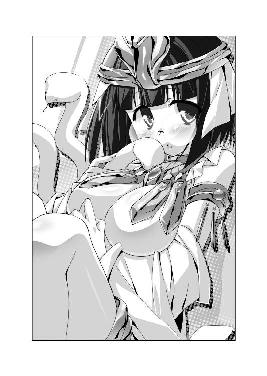
ア「おおーっ!? 見たことない格好ですけど、すっごくえっちぃです！」
ピ「カルタギア帝国の南方属国の王家の衣装なのじゃ。ムージ将軍が幼少期を過ごした砂漠地帯を治めておりりりりりりりりりりり、るるるるるるるるるる、あばばばばばばばばばばば」
ア「ピコル師匠がアホの子になっちゃったー!? 大丈夫ですか!?」
ピ「なんのこれしき......親愛なる読者諸君が喜んでくれるなら耐えられるのじゃ！」
ア「素晴らしいですよ、ピコル師匠！ 一生ついていきます！」
ピ「そうじゃろう、そうじゃろう。もっと褒めてもいいんじゃぞ？」
ア「いっぱい褒めますから、もっとえっちなアイテムを貸してくださーい！」
ピ「ええい、現金なヤツめ！ これでも喰らうがいいのじゃ！（サクッ）」
ア「ぎゃー！ 教鞭が刺さってます！ 側頭部に深々とめり込んでます！ でも、意外と嫌いじゃないかも」
ピ「ええい、このヘンタイめっ！ というわけで、今回のピコルの穴は、ここまで！ 本編はいろいろと大変なコトになってるのじゃ。じゃが、ピコルの穴では、これからもドキドキな授業を続けていくので楽しみにしてるがいいのじゃ～っ！」
ア「応援よろしくねっ！ 次回をお楽しみに～～～♪」
第四話 たった一人の大運動会
「ねえ、恭太郎。聞いてくれるかい？ 僕には夢があるんだ。大きな大きな夢がさ......」
ある日の昼下がり。カルタギア帝国の後宮。神来恭太郎の部屋。
ソファに腰掛けて食後のお茶を楽しんでいたアレスタが、ふいにそんなことを言い出した。
トビカピバラと化した少年が短い足を組んでソファに腰掛けているだけでも、かなり奇妙な光景だ。そのうえ、ティーカップを傾けながら夢を語り出すなんて──恭太郎は思わず噴き出してしまいそうになる。
だが、アレスタは冗談を言っているようすはなかった。表情は真剣そのもの。未来の自分に想いを馳せるかのようにキラキラした瞳をしてる。
真摯に夢を語ろうとしている友人を茶化すべきじゃないよな。
「夢があるってのは、いいことだよ。どんな夢を持ってるんだ？」
恭太郎はソファに座り直し、姿勢を正した。気を引き締めてアレスタの熱い想いを拝聴しようと思ったのだ。
だが、続けて放たれた言葉を聞いて、恭太郎は呆気にとられてしまった。
カピバラ少年は、あまりにも真面目な口調で、こんな風に続けたのである。
「もしも生まれ変わったら、僕は美少女が乗る自転車のサドルになりたいんだっ！」
「自転車の......サドル......？」
「うんっ！ 恭太郎も想像してみてよ。柔らかなおしりを感じながら、美少女と二人で風になるんだ。ペダルを漕ぐたびにふとももにほっぺを挟まれまくって......はふぅ、最高に気持ち良くて、ドキドキな毎日が送れると思うんだよね。って、あれ？ どうしたの、恭太郎。オデコを手で押さえちゃって？」
「いや、どうもしないよ。軽い目眩がしただけだ......」
深々とため息を吐きつつ、ココロの中で続けた。
やれやれ、真面目に聞いて損したよ。自転車のサドルになんて、なれるワケがないだろ。仮になれたとしても気持ちいいはずがないじゃないか。四六時中、婦女子のおしりを押し当てられるなんて堪ったもんじゃないぞ。しかし、よくもまあ自転車のサドルになりたいなんて、とんでもない発想が出てくるよなぁ......。
呆れるのを通り越して、思わず感心してしまったのだが。
数日後。恭太郎はアレスタが語った夢を、彼より先に叶えてしまうことになった──。
（これはヤバいって！ ふとももが!? おしりがああああ～～～っ!?）
トレクワーズ王国の首都。トレクロ。市街地に建つコロシアム。
剣闘士がモンスターと戦う闘牛にも似たショーや、スポーツの大会などが行われる巨大施設で恭太郎は絶叫した。
だが、広大な会場に彼の声が響き渡ることはなかった。
恭太郎はサドルと化していたのだ!!
自転車のサドルではなく、一輪車のサドルなので、厳密に言えばアレスタが望んでいたのとは違うなぁ──って、そんな細かい差なんてどうでもいいんだよっ！ 頼むから、俺から降りてくれぇっ！
恭太郎にまたがっているのは、第二王女のレイシアである。
優しくておしとやかで控えめな性格に似合わず、自己主張の激しいナイスバディのお姫さまだ。
あまりにも大きな爆乳のために、身に纏っている体操服の胸元が今にもはち切れそうである。
「あぅあぅ、うまく乗れませんっ！ このままじゃ、ビリになっちゃいますっ！」
恭太郎の顔面にまたがり、懸命に一輪車に乗ろうとする。左右のおっぱいが、ぼよんぼよんと交互に揺れまくった。
爆乳のお姫さまは、ふともも＆おしりもムチムチだ。
ブルマに包まれたおしりに乗っかられ、頰をふとももに挟まれて、恭太郎はそれだけで昇天しそうになってしまう。
「よいしょっ、よいしょっ」
そのうえ、恭太郎の顔面にまたがった状態で、レイシアはペダルを漕ぐのだ。
いわゆる、顔面騎乗状態。柔らかなおしりやおまたの部分が、恭太郎にグニグニと押し当てられてしまう。
ブルマ越しにしっとりと汗ばんだおしりの柔らかさと重みを感じた。
未曾有の柔らかさと圧迫感、体温と女の子っぽい甘い香りに包まれて、恭太郎はそのまま昇天してしまいそうだ。
（頼むよ、レイシア！ 俺から降りてくれ～～～っ！）
さて、どうして恭太郎は一輪車のサドルと化しているのか。そして、体操着姿のレイシアが彼にまたがっているのか。
それを理解してもらうためには、早朝まで時間を巻き戻す必要があるだろう。
×××
ガタゴト。ガタゴト。ガタゴト──。
規則正しいリズムを刻み、大型の荷馬車が石畳の道を走っていく。
ホロで覆われた荷台から顔を出せば、首都トレクロの早朝の風景を眺めることができただろう。めったに後宮から外出する機会がないので、ぜひとも外の景色を楽しみたいところだ。
まだ時刻は夜明け前。わずかな隙間から冷たい朝の空気が荷台へと流れ込んできた。恭太郎は早朝の雰囲気というのが大好きだ。凜と澄み切った空気に触れていると、心身ともに引き締まる気がする。
だが、荷台に据えられた木製の椅子に腰掛けている恭太郎は街の風景を楽しむことも、朝風に吹かれることもできない。
（どうして朝っぱらから、こんな目に遭ってるんだ俺は......）
そう呟きたかったけれど、言葉にはならなかった。唇を動かすことすらできない。
【石神呪】という聞き慣れない魔法を掛けられ、服ごと全身が純白の石像と化してしまっていたのだ。服ごとカチコチに固まっている。
後宮にある自室のベッドで眠っていたら、突然ピコル師匠が率いる女官の一団が部屋に飛び込んできた。
「ゆくのじゃ、女官たちよっ！ 恭太郎を引っ捕らえるのじゃーっ！」
「なにをするんですか、ピコル師匠!? 夜討ち朝駆けは卑怯者のすることですよ！」
「問答無用なのじゃ！ ふゥははははー！ 【石神呪】!!」
「な、なんだコレは!? カラダが白いものに覆われて......うおおおおお～～っ!?」
全身が白大理石の膜のような物体で覆われ、すぐに身動きが取れなくなってしまった。
精巧な石像と化した恭太郎は、女官たちによって椅子に据えられ、あれよあれよという間に馬車の荷台に放り込まれてしまった次第である。
【石神呪】の魔法を掛けられるとカラダが石像と化してしまうようだ。
不思議なことに石像なのに意識がある。周囲の景色も見えていた。音や震動を感じ取ることもできる。
カラダの表面が石と化す以外は、恭太郎がしょっちゅう掛けられている【麻痺】という魔法が近いかもしれない。
ガタゴト。ガタゴト。ガタゴト──。
荷台に恭太郎を載せたまま、馬車は走り続ける。
どこへ向かっているのか。これからなにが行われようとしているのか──ピコル師匠は、これっぽっちも説明してはくれなかった。
（なにをやろうとしているのかは、なんとなく想像がつくけどな......）
固定された視界の中。トラックほどの大きさがある馬車の荷台には、さまざまなアイテムが積み込まれていた。
太いロープ。紅白に色分けされた玉入れのボール。リレーで使うバトン。直径二メートルはありそうな、大きなハリボテの玉。号砲を鳴らすためのピストル。ホイッスル。ゴールテープ。赤いコーンやグラウンドに線を引くラインカーなどなどなど。
恭太郎にも見覚えのある道具ばかり。名探偵でなくとも、簡単に答えを推理することができるだろう。
（これから運動会でもやるつもりなのか......）
恭太郎はカラダを動かすのが嫌いじゃない。むしろ、大好きだ。
現代日本で高校生活を送っていた頃は、運動会は楽しみな行事の一つだった。秋晴れの空の下、仲間たちと一緒にカラダを動かすというのは気分がいいものだ。
しかしながら。
（運動会が開かれるのはいいとしても......俺が石像にされた理由はわからないな）
ついでに言えば、荷馬車に積まれているアイテムの中には明らかに運動会に相応しくないようなシロモノも見受けられた。
バニーガールやらセーラー服といったコスプレ衣装だとか。大きなガラス瓶に入ったゼリー状の物体だとか。恭太郎によく似た等身大のマネキンであるとか。甘い香りを放つカゴに盛られた大量のバナナだとか。
ピコル師匠のことだ。またよからぬことを企てているのかもしれない。
（気を引き締めるんだ、神来恭太郎。えっちなことをやらされそうだったら、絶対に拒否しなくちゃいけないぞ......）
捕虜となり敵陣へと引っ立てられる兵士のような心持ちで、恭太郎は警戒を強める。
荷馬車に揺られて、二〇分ほどが過ぎた頃だろうか。
ガタンッ！──石にでも乗り上げたのか、荷馬車が大きく跳ねた。
（うおっ!?）
舗装の悪い道にさしかかり、地震でも起こったかのように荷台が揺れる。
その震動で荷台に積み上げられていたアイテムの山が崩れた。
（ぬおおおっ、危ないっ!?）
玉入れのボールが頭から降り注ぎ、大玉転がしのハリボテ玉が恭太郎にのし掛かってくる。荷台の上で、綱引きのロープが大蛇のようにのたくった。
続けざまに、細々としたアイテムが入れられた箱が、恭太郎に向かって落ちてくる。
石像と化している恭太郎は、避けることすらできなかった。
（ぐばっ!? どべっ!? ぬごっ!?）
アイテムの雪崩れに巻き込まれ、数え切れないほどの道具が恭太郎の脳天を直撃。
（石像になってるのに、ちゃんと痛みは感じるのかよ!? ぐぼっ!? どふっ!?）
最後に、号砲を鳴らすためのピストルが顔面にぶつかって引き金が引かれた。
パンッ！──空砲の銃声が荷台に響き渡る。
その音こそが。
恭太郎が参加するたった一人の大運動会のはじまりを告げる号砲であった。
『痛たたたた......。荷物はちゃんと固定しておいてくださいよ......』
恭太郎はうめき声を上げたのだけれど、言葉は声にならなかった。頭をさすろうとしても手が動かせない。
すぐ近くに、純白の石像と化している恭太郎の姿があった。
あ、そうか。石になってるんだから、身動きなんてできるわけないよな。
一瞬だけ納得しそうになったのだが......って、ちょっと待て！
恭太郎は恐るべきコトに気付く。
どうして俺は、自分自身の姿を外から眺めてるんだ!?
身長が縮んでしまったかのように、周囲のアイテムが大きく見えた。
大玉転がしのハリボテ玉がトレクワーズの王城よりも巨大だ。
俺の身になにが起こってるんだ!?
自分のカラダを眺めようと思ったけれど、首を巡らせることができない。
そもそも首が無くなってしまったみたいに、顔を動かすことができないのだ。
石像の時とは違い、わずかにカラダを揺さぶるコトができた。
重心を移動させると、全身が傾く。転がることならできそうだ。
と、馬車の荷台に銀色のお盆が転がっているのに気付いた。一緒に積まれていたメイドさんのコスプレアイテムだろう。
懸命にカラダを動かして床を転がり、お盆の前まで移動した。
銀盆を鏡のように使って、カラダを映そうと思ったのだ。
『な、なんじゃこりゃ～っ!?』
お盆に映った自分の姿を眺め、恭太郎は絶叫してしまった。
そこに映っていたのは、玉入れで使う赤いボールだった。
恭太郎の動きに合わせて、ボールが右に左にと動いている。
ボールの表面にはうっすらと、恭太郎の目と鼻と口が浮かび上がっていた。
どういうコトだ!? 俺はボールに変化しちゃったのか!?
そのとき──キュィィィィィ。
恭太郎の耳に微かな作動音が聞こえてきた。
ボールと化したカラダを転がして、音の出所を探す。
石像と化した恭太郎の首筋から異音が発せられていた。
首にくっついているのは、長さ三〇センチほどのコード。二つの黒い吸盤状の物体が両端に繫がっている。
コードの中央についている方位磁石みたいな計器から、作動音が発されているようだ。
そのアイテムを見て、恭太郎は背筋が凍り付いた。いや、ボールだから背中なんてないけれど、全身が強ばってしまう。
『あれは《たまいれコードくん》とかいうマジックアイテムじゃないのか......？』
《たまいれ》とは『魂を入れ替えちゃう』の略。
吸盤の両端にくっつけたものの魂を入れ替えてしまうという恐ろしいアイテムだ。
以前、恭太郎はトビカピバラのミルンと魂が入れ替わってしまい、ひどい目に遭った。
『あのアイテムのせいで、俺の魂がボールの中に入っちゃったのかよ!?』
どうして《たまいれコードくん》が荷台に積まれていたのかわからない。だが、恭太郎の上にアイテムが崩れてきた拍子に、偶然に作動してしまったようだ。
このままじゃマズい。なんとかして、元に戻らなくちゃ！
ボールと化したカラダを懸命に動かして、首筋にくっついているコードの元まで辿り着こうと試みた。しかし、どんなに頑張ってみても、左右に転がることしかできない。
『ぬおりゃああっ!!』
気合いを入れて、全力を振り絞ってみても、数センチジャンプするのが限界。
ボールと化した状態では石像をよじ登るなんて不可能だ。
『誰かに気付いてもらって、元に戻してもらうしかないみたいだな......』
ほどなく、馬車が止まった。目的地に着いたようだ。
勢いよく荷馬車のホロが開け放たれる。
「ふゥははははー！ 荷馬車の乗り心地はどうじゃったかな？ 早朝のドライブもオツなもんじゃろう？」
高笑いをしていたピコル師匠は、積まれていたアイテムが荷台に散乱しているのを見て、目を丸くした。
「なんと、荷崩れしておったか！ どこか欠けてはおらぬか、恭太郎！ 石像が欠けてしまったら一大事なのじゃ！」
恭太郎を気遣いつつ、後ろに控えていた女官の一団に命じる。
「散らかったアイテムを運び出すのじゃ！ 姫さまがたが到着なさる前に、全ての準備を済ませるのじゃー！」
メイド服に似た揃いの制服姿の女官たちが、続々と荷台に乗り込んでくる。
散らかったアイテムを手際よく整理し、荷馬車から運び出していった。
恭太郎は玉入れのボールと化している。周囲には、まったく同じ形の赤いボールがいくつも転がっていた。
他のボールと一緒に片付けられてしまっては面倒だ。
荷台を転がり回り、アイテムを拾い上げようとする女官たちの手をすり抜けながら、恭太郎は懸命にアピールした。
『ピコル師匠！ 俺はここですよ！ ボールになっちゃったんです！』
だが、師匠は足下を転がるボールに気を止める様子はなかった。
「ふむ。どこも欠けてはおらぬようじゃの。よかったのじゃ」
恭太郎の像の前に立って、教鞭を振るう。
「如何に鈍感な恭太郎とて、荷台に積まれておるアイテムを見ればわかったじゃろう？ そう、今日は年に一度の大イベント！ 王宮大運動会の日なのじゃーっ！」
勢いよく言い放たれても、恭太郎の石像は微動だにしない。
もちろん、ピコル師匠はリアクションを取らない王仕さまを見ても訝るようすはなかった。石像と化しているから動かない方が自然なのだ。
ピコル師匠は独りでペラペラと説明を続ける。
「王城で働く女官たちが、姫さまがたをリーダーとして二つのチームにわかれて競い合うのじゃ。親睦を深めると同時に、王女さまの指導力を高める──実に有意義なイベントなのじゃよ」
『運動会どころじゃないですよ！ そのカラダには俺の魂が入ってないんです！』
恭太郎は床を転がり、師匠が履くサンダルに体当たりを敢行した。しかし、それでもピコル師匠は気付いてくれない。
「恭太郎も大運動会に参加してもらうのじゃ。選手としてではなく──」
ピコル師匠は袖口からリボンを取り出した。恭太郎の頭に綺麗に飾り付ける。
「優勝賞品としてじゃがな！ 勝利者チームの姫さまのほっぺにキスをしてもらうのがおぬしの役目なのじゃー！」
『ほっぺにキスなんてできませんよ!? 嫁入り前の婦女子に接吻をするなんて、許されるコトじゃありませんってば！』
全力でツッコミを入れる恭太郎だったが、ボールと化しているために声を発することができない。
「ほっぺにキスだけで済むと思ったら大間違いじゃぞ？ 運動会を取り仕切るのは、この吾なのじゃからな！ えろえろなハプニングが満載の運動会になること請け合いじゃ！ 題して、『ドキッ☆姫さまだらけのえっちな大運動会』なのじゃ～～～～～っっっ」
『えっちな大運動会だって!?』
「当然、ポロリもあるのじゃ！」
『なにがポロリするって言うんですか！ 絶対に見たくないですよ、そんなの！』
恭太郎の声が聞こえているかのように、悪巧みをする悪徳商人みたいな笑みを浮かべてピコル師匠は続ける。
「おぬしにはセクシーな運動会のようすを余すところなく観戦してもらうのじゃ」
教鞭で恭太郎の顔を叩いた。お肌が大理石と化しているため、コツコツと硬質な音がする。
「なにゆえ【石神呪】を使ってわざわざ石像にしたか知りたそうな顔じゃの？ よかろう教えてやるのじゃ。えっちな競技がいっぱいの運動会を行う予定なのじゃが......おぬしに観られていると王女さまがたが恥ずかしがってしまうじゃろう？ じゃから、おぬしを石像と化したのじゃ。姫さまがたには『恭太郎は後宮におりますのじゃ。観客席に置かれた石像は、あくまで賞品の見本ですのじゃー』なぁんて説明してあるのじゃ。気兼ねなくエロエロな競技に取り組んでくださるじゃろう。ふゥははははー！」
『この人は悪魔だ......!!』
「おぬしも覚悟した方がいいのじゃ。一日中、えっちな運動会を眺めた後で、姫さまがたのほっぺにちゅーをすれば......ムラムラしたおぬしはケダモノと化して襲いかかってしまうに違いないのじゃ！」
『って、ケダモノと化す前に、俺はボールと化しちゃってるんです！ 気付いてくださいよ、ピコル師匠！』
ピコルのサンダルに何度も体当たりした。
「......おや？ なんじゃ？」
ボールと化した恭太郎の存在に気付いてくれたのかと思ったが、違った。
ピコルは恭太郎の首筋にくっついたコードに気付いたようだ。
「これは《たまいれコードくん》じゃな。どうして、おぬしにくっついておるんじゃ？ 吾は持ち込んだ覚えはないんじゃがのぅ......？」
首を捻っていた後宮のヌシは、合点がいったようにポンと手を叩いた。
「おお、そうか！ 名前が《たまいれ》じゃから、玉入れの道具と間違えて、女官が荷馬車に積み込んでしまったのじゃな！ 運動会ならではの面白ハプニングなのじゃ！」
『そんな理由かよ！ ちっとも面白くないですからね！』
恭太郎の首筋から《たまいれコードくん》をはずし、師匠は方位磁石みたいな計器の部分をしげしげと眺める。
「ふむむ。しかも、これは《たまいれコードくん・ＤＸ》じゃな。魂の宿っておらぬ無機物の中に、自分の魂を送り込むことができる優れものなのじゃ」
以前、トビカピバラのミルンと魂が入れ替わってしまった時に使用したアイテムは、《たまいれコードくん・二号》とかいう名前だったと記憶してる。それとは微妙に違うシロモノだってことか。
ピコル師匠は眉を顰めて、「しかし、問題があるのじゃよ......」と呟いた。
「このＤＸは不良品なのじゃ。危険を伴うために、吾は使用禁止にしたのじゃ」
『不穏なことを言い出さないでくださいよ。俺はもう使っちゃった後なんですから！』
師匠の説明を聞き、恭太郎はさらに恐怖に戦くこととなる。
「《たまいれコードくん・ＤＸ》を使えば、ありとあらゆる道具の中に自分の魂を移すことができるのじゃ。まるで、自らの霊魂を憑依させるかのようにのぅ。例えば、婦女子の部屋に飾られたぬいぐるみの中に自らの魂を入れ、好き放題に着替えを覗きまくる──なぁんてえっちな使い方も可能なのじゃよ」
なるほど。確かに、覗き魔にとっては夢のようなアイテムだろう。
「ところが、このアイテムには大きな難点があるのじゃ......」
腕組みをしたピコル師匠は、深刻な表情を浮かべた。
「長時間、魂が離れていると元のカラダに戻れなくなってしまうのじゃ!!」
『えええええ～～～っ!?』
「半日ほど魂が本体から離れておったら......仮に元のカラダに戻れたとしても、再び同じようにカラダを動かすことができぬ。魂が肉体の操作方法を忘れてしまうのじゃ。アイテムに憑依しているのと同じように、身動きできぬまま暮らすことになるじゃろうな」
このまま神来恭太郎の本体から魂が離れ続けていたら、もう二度と剣を振るえなくなってしまう可能性があるのか。なんて、恐ろしいアイテムだよ！
「加えて、もう一つ問題があるのじゃ」
ピコル師匠は足下に転がっているホイッスルとリレーのバトンを手に取った。
右手に持ったホイッスルを掲げて、
「例えば、このホイッスルに恭太郎の魂を入れたとするじゃろ」
両手を近づけて、師匠はホイッスルとバトンをくっつけた。
「このように触れ合った瞬間、『たまいれ！』と叫べば、ホイッスルからバトンへと魂を移動させることができるのじゃ。次から次へと《魂の器》となる対象を変えていけるってワケじゃな」
『魂を移動できる......？』
恭太郎のすぐ隣に、玉入れで使う白いボールが転がっていた。
荷台の床を転がって、白いボールに体当たりをしてみる。ぶつかる瞬間に『たまいれ！』と叫びながら。
すると、一瞬だけ視界がグニャリと曲がって──恭太郎の魂は白いボールへと移動していた。先ほどまで憑依していた赤いボールが隣に転がっている。
「便利な機能のように思えるじゃろ？ しかしながら、次々と魂を移動させてしまうと、どのアイテムに魂が乗り移っておるのか傍目にはわからなくなってしまうという危険性があるのじゃ」
先ほどお盆に姿を映したとき、玉入れのボールの表面に自分の顔が浮かび上がっているように見えた。
でも、この顔は他人からは見えないんだな。
「大きな岩や樹木などに憑依してしまったら、自ら身動きできぬ。誰かに助けてもらわねば、元のカラダに戻れぬのじゃ。ところが、魂の移動を繰り返した後では、外部からはどのアイテムに憑依しておるのかわからないという事態に陥ってしまうのじゃ。うまく使えば、えっちなイタズラがし放題なのは間違いないが......取り返しの付かない事態になる可能性もあるゆえ、吾は使用禁止にしたんじゃよ」
ピコル師匠は唇の端を曲げるようにして、悪徳商人じみた嗤い顔になる。
「むふふふ。そうじゃ。イイコトを思いついたのじゃ！ せっかく《たまいれコードくん・ＤＸ》があるのじゃ。コレを使って、恭太郎の魂をコロシアムのシャワールームにあるシャワーヘッドに憑依させてやるのじゃ！ 姫さまがたや女官たちのボディを、存分に洗い流すがいいのじゃ！ ハダカも見放題じゃぞ！」
ピコル師匠は、黒い吸盤を石像と化した恭太郎のオデコに近づけてきたけれど──。
「なぁんちゃって、冗談じゃよ。こんな危険なアイテムを使ったりはせぬのじゃ。見知らぬアイテムがくっついたら不安じゃろ？ おぬしが運動会に集中できるよう、説明してやったまでじゃ。いやー、吾は本当に優しいお師匠サマなのじゃ。もっと慕ってもいいんじゃぞ。ふゥははははー！」
高笑いをしつつ、ピコル師匠はコード状のアイテムをローブの袖にしまった。
「さてさて、恭太郎。コロシアムのスタンドに移動するのじゃ！ 特等席を用意してあるのじゃ！」
『って、カラダを移動されるのはマズイ！ さっさと元に戻らなくちゃ！』
ボールと化している恭太郎は、猛然と床を転がった。
触れ合っていれば、魂を移動させることができる。すなわち、自分のカラダに触れさえすれば、元に戻ることができるのだ。
まずは恭太郎の石像が座らされている椅子に体当たりし、魂を移動させようと考えたのである。『椅子→恭太郎』という順番で憑依していけば、元に戻れるって寸法だ。
「......おやおや？」
椅子の脚まで残り一〇センチほどに迫ったとき、ピコル師匠の声が降ってきた。
『うおおおおっ？』
師匠のちっこい手によって、ボールと化した恭太郎は持ち上げられてしまう。
『離してください、師匠！ 元のカラダに戻らせてくれっ！』
懸命にカラダを揺さぶって、手から逃れようとしたけれどダメだった。
ピコル師匠は近くにいた女官にボール（恭太郎の魂入り）を手渡す。
「こんなところにボールが落ちておったのじゃ。これも一緒に片付けておくのじゃ」
「かしこまりました」
女官は恭しく礼をしつつ、白いボールを受け取った。
『中に俺がいるんだよっ！ 誰か気付いてくれっ！ 誰か～～～～っ!!』
恭太郎の叫びも空しく、他のボールと一緒にカゴの中に放り込まれてしまう。
「これ、女官たち！ 恭太郎の像をスタンドへと運ぶのじゃ！ 大事な賞品じゃから丁重に扱うのじゃぞ！ くれぐれも欠けさせてはならぬぞ！」
恭太郎の石像が、幾人もの女官たちによって椅子ごと持ち上げられた。
『待ってくれ！ 元に戻させてくれ～～～っっっ！』
カゴの中に入れられた恭太郎は、市場へと売られていく子牛と同じぐらい無力だ。身動きはおろか、声を発することすらできない。
恭太郎の石像は、コロシアムの正門を通ってどこかへ運ばれてゆく。
無数のボールと一緒にカゴの中で揺られながら、恭太郎は遠ざかる自分のカラダを為す術なく眺めていることしかできなかった。
『なんてこった......。元に戻るチャンスを逃しちゃったよ......』
カゴに入れられた恭太郎（魂）は別の入り口を通って、コロシアムの中へ入った。
コロシアムは歴史を感じさせる、石造りの巨大建造物だ。白い石壁に、さまざまなスポーツに興じる女神のレリーフが刻まれている。
早朝にも拘わらず、建物のあちこちから女官の声が響いてくる。運動会の準備が急ピッチで進んでいるんだろう。
恭太郎を入れたカゴは、コロシアムの一隅にある空き部屋へと運び込まれた。石造りの牢獄みたいな簡素な小部屋だ。
どうやら、その部屋が運動会で使う道具を一時的に保管しておく用具室らしい。
綱引きのロープなど、他のアイテムも次々と運ばれ、整然と並べられていく。
全ての道具が運び込まれ、用具室のドアが閉められた。
薄暗くなった部屋で、恭太郎は絶望的な気分で独りごちる。
『これから俺はどうなっちゃうんだ......？』
そんなこんなで。
お姫さまたちの運動会の裏側で、命がけの競技が否応なしに幕を開けてしまった。
参加者は、恭太郎たった一人。
競技種目は──《魂のリレー》である。
☆開会式
コロコロコロコロ──......。
ピンポン球が、風もないのに廊下を転がっていた。
『ふぅ......やっと外に出られたよ......』
ピンポン球に憑依した恭太郎が、石造りの廊下を転がって移動しているのだ。
二時間ほどを費やして、ようやく用具室からの脱出に成功したのである。
彼がやったことは『玉入れのボールが入ったカゴから外に出て、用具室の引き戸を開け、廊下に出る』。
たった、これだけ。
言葉にすれば簡単だが、実行するのは容易ではなかった。
道具の中に入っていると、ほとんど自力では動けないのだ。微かにカラダを震わせることができる程度。
球状ならば床を転がることが可能だが、それ以外の道具ではほとんど身動きが取れない。
試しに平均台や跳び箱にも憑依してみたが、大きな物体では身じろぎ一つできなかった。
わずかな移動＆『触れ合っていれば、魂を別の物体に移動できる』というルールを駆使して、用具室の中に置かれているさまざまなスポーツ用品に魂の移動を繰り返し、なんとかピンポン球に憑依した。
ピンポン球は、お玉に乗せて走る──いわゆる、お玉リレーで使われるんだろう。
用具室の床を転がって、ドアに接触。戸板に憑依して、なんとかドアをこじ開けた。
再びピンポン球に魂を移し、廊下に転がり出た次第である。
苦労に苦労を重ねて、用具室から脱出した理由は、ただ一つ。
元のカラダへと戻るためだ。
半日ほどが経過すると、きちんと戻れなくなってしまうらしい。
恭太郎のカラダは石像と化している。身動きしなくても違和感がないため、魂が抜けている事態に気付いてもらうには時間がかかるだろう。
誰かが気付いてくれるまで──運動会が終わるまで、手をこまねいていては手遅れになってしまう可能性がある。
二度と愛刀が握れないなんて、剣士として死んだも同然。
座して死を待つなんて、恭太郎の趣味じゃなかった。どんなに絶望的な状況でも諦めるなんて嫌だ。
不幸中の幸いか、恭太郎の石像がコロシアムのスタンドにいることはわかっている。
（日没までに、俺のカラダまで辿り着く！ なんとか俺の石像に触れて、魂を移動させるんだ！ それしかないッ！）
決意を胸に、恭太郎は石造りの廊下を転がっていった。
そのとき、恭太郎の耳に声が届いた。
いや、正確に言うとピンポン球に耳はないのだが、確かに聞こえたのだ。
「んもうっ、毎年コロシアムに来てるのに、迷子になっちゃうなんて最悪だわっ。もうすぐ開会式が始まっちゃうのに......」
この声は──ユフィナだ。
体操服＆赤いブルマという姿のお姫さまが、廊下を走ってくる。ポニーテイルにしている赤い髪には、同じように赤いハチマキを着けていた。
ユフィナははすっぱで暴力的な王女さまだが、このときばかりは女神さまに見えた。
『ユフィナーっ！ 俺だよ！ 恭太郎だ！ 気付いてくれ！』
床をコロコロと転がってアピールする。
だが、ユフィナは気付いたようすもなかった。
開会式に遅れそうだから焦っているのか、床に落ちているピンポン球には目もくれずに薄暗い廊下を走っていこうとする。
『よし、こうなったら......！』
恭太郎は全力でカラダを転がし、廊下を走るユフィナへと近づいた。
彼女が通り過ぎる刹那──コツンっ。
「ん？ なにか蹴っ飛ばしたかしら？」
第一王女は辺りをキョロキョロと見回す。
「......気のせいみたいね」
廊下の隅へと転がっていったピンポン球には気付かず、再び駆け出した。
ボールの中に、既に恭太郎の魂は入っていない。
すれ違う一瞬に体当たりを敢行し、ユフィナが履く運動靴に魂を移動させたのだ。
靴に憑依した恭太郎は、自分のアイデアに感動してしまった。
『これならユフィナの移動に合わせて、いくらでも動けるぞ！』
しかし、すぐに靴になったのは間違いだと気付いた。
王女さまのカラダを下から眺めることとなってしまったのだ。
大きく隆起した白い体操服の胸元。むっちりとした太もも──王女さまのナイスバディを真下のアングルから眺めるなんて、妙に倒錯的だった。
特に恭太郎をドキドキさせたのは、ブルマだ。
（っていうか、どうしてブルマなんだよ。短パンじゃないのか......）
恭太郎が通っていた高校では、ずいぶん昔にブルマは廃止されて女子も短パンで体育の授業を受けている。ブルマを間近で見た経験なんてほとんどない。
分厚い赤い布地に包まれたおしりやふとももは、健康的なえっちさで......目が釘付けになってしまいそうだ。
だが、それよりも、靴に憑依することにはもっと大きな問題があった。
『でふっ!? ごふっ!? ぼふっ!?』
ユフィナが一歩足を踏み出すごとに、思い切り踏みつけられる羽目に陥ったのだ。
女の子に踏んづけられたい特殊な性癖の持ち主にとって、靴として暮らすのは天国かもしれない。だけど、俺はそんなヘンタイじゃないんだよ！
靴には体重の何倍もの加重が掛かるという。
小走り状態でも、こんなにショックが大きいんだ。徒競走でもはじまったら、新しい性癖に目覚め──じゃなくて、衝撃に耐えきれずに気絶してしまうかもしれない。
一刻も早く、別の物に魂を移動する必要がある。
『でも、なにに移動すればいいんだ？』
靴と接している物は、靴下＆石畳の廊下だけだ。
試してみた結果、『コロシアム』や『空気』などには移動ができなかった。巨大すぎるものや不定形のものには憑依できないようだ。
靴下に移動しても意味がないし。どうすりゃいいんだよ......？
必死に頭を働かせた末に──恭太郎は一つのアイデアを思いついた。
ユフィナは用具室の前の廊下を抜け、階段を駆け上がった。
視界が一気に開ける。
コロシアムは、すっかり運動会の準備が整っていた。
競技場にはトラックのラインが引かれ、審判員のためのテントが、周囲にいくつも張られている。美しい花々で飾られた入場門も造られてるようだ。
入場行進をするのか、体操服姿の女官たちが入場門の向こう側で列を作ってる。
そのようすを眺めて、ユフィナはホッと胸を撫で下ろした。
「よかった。まだ始まってなかったみたいね......」
競技に参加しない女官たちが観客としてスタンドを埋め尽くしていた。運動会が始まるのを待ちわびている。
スタンドの中央。観客席の最上段に櫓のようなものが組まれ、恭太郎の石像が鎮座していた。目指すべきゴールはあそこだ。
「うーん、いい天気！ 運動会日和だわ！ 頑張ろうっと！」
気持ちよさそうに伸びをするユフィナ。
彼女の言葉通り、空には雲一つない。
ポンっ！ ポンっ！──軽やかな音と共に花火が打ち上げられ、白い煙が花開く。
ユフィナが立ち止まった一瞬を狙って──
『今だっ！』
恭太郎はもぞもぞとカラダを動かした。全力を振り絞り、運動靴の紐を緩めたのだ。
「あれ？ さっきキツく締めたと思ったのに......」
靴紐が緩んでいることに気付いたユフィナは、その場にしゃがみ込んで紐を結び直した。
『たまいれ！』
運動靴のかかとが一瞬だけ触れ合った物に、魂を憑依させる。
「これでよし、と」
ユフィナが立ち上がったとき、恭太郎の魂は移動を完了していた。
──ブルマだ。
靴紐を結び直している隙に、ユフィナがはいているブルマに魂を憑依させたのだ。
運動靴とは違い、ブルマならば歩く度に踏んづけられるという心配はない。ユフィナと一緒に楽にコロシアム内を移動できる。
しかしながら。
『ぐおおおおおおおっ!?』
ブルマと化した恭太郎は、思わずうめき声を上げてしまった。
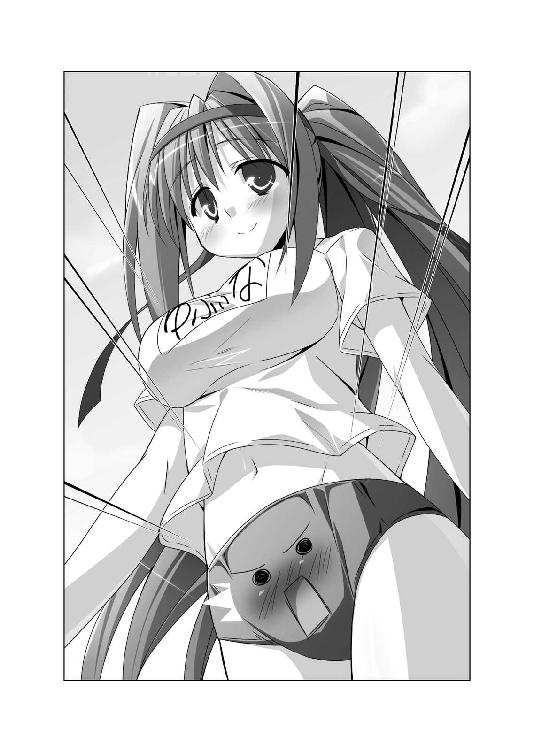
『これはこれでダメージがデカいぞ！』
ブルマに魂を宿したということは、ユフィナのおしりを抱きしめるのと同じなのだ。
ぱんつ越しに、ユフィナのおしりやおまたの柔らかさを全身で感じてしまう。
『おおお、落ち着け！ 落ち着くんだ、神来恭太郎！ 俺は単なる布きれになっただけだ。なにも動揺することはないぞっ!!』
懸命に自分に言い聞かせたけれど、ダメだった。
ぷにぷに ふにふに ムチムチ──ユフィナのデリケートな部分の感触にドキドキが止まらない。もしもブルマに心臓があったなら、鼓動が伝わってしまっただろう。
『だあああ、ダメだ！ 別の物に移動するべきだ！ こんなのは耐えられないよ！』
ブルマは体操服とぱんつに触れ合っている。
ぱ、ぱんつはダメだ！ ぱんつに魂を移動させたら、いろいろな感触を直に味わうことになる。そんなの絶対に許されない！
『体操服の方が、まだマシかな？』
婦女子のおしりに密着しているなんて、カタブツな恭太郎にとっては耐え難いことだ。
体操服に魂を移動させようかと思ったのだが、迷った末に思いとどまる。
『体操服になってしまったら、次の移動が難しくなるかもしれないぞ......』
ブルマだったら、ユフィナがスタンドのベンチなどに座ってくれれば魂の移動が可能だ。
でも、体操服に変化したら、次の移動が困難になってしまうかもしれない。
なにかに触れ合う確率はブルマの方が高い気がする。
それに、体操服に乗り移った場合も、結局はユフィナの胸の感触に苛まれることとなるのだ。
『すまない、ユフィナ。許してくれ。今は緊急事態なんだ......』
自らのブルマで激しい葛藤が行われているとも知らず、ユフィナはコロシアムに設置された入場門へと向かった。
「ユフィナおねえちゃん、遅いよー！」
第五王女のメルルちゃんの元気な声が飛んでくる。ちぃ姫さまは黄色いブルマをはいており、体操服の袖をまくってる。元気いっぱいの姿だ。
「なにかトラブルでも起こったのかと心配してしまいました」
爆乳の前で手を組み合わせ、安堵の吐息を漏らしたのは第二王女のレイシアだ。あまりにも胸元が膨らみすぎているせいで、体操服の『れいしあ』と書かれたゼッケンの文字が歪んでしまいそうなほどである。水色のブルマに包まれたおしりも、目のやり場に困るくらいムチムチだ。
「あんまり遅いから、探しに行こうかと思っていたんですぅ。ユフィナ姉さまがいなくちゃ、運動会になりませんから。あぅあぅ」
困ったような表情をしているのは、第四王女のアルト。紺色のブルマ＆長袖の体操服という姿だ。彼女は白いニーソックスを履いているから、最も露出度が低い。
控えめな性格に似合わず、アルトは胸が大きかった。体操服越しに巨乳が目立つのが恥ずかしいのか、オナカ辺りに手を添えて布地をちょっぴり引っ張り、カラダのラインを隠そうとしてる。
「フン、私は敵前逃亡なさったのかと思いましたわっ！ どう考えても、私たちには勝てるはずがありませんものっ！」
高飛車な声で、第三王女のエリスが言い放った。
彼女は胸が小さいけれど、薄紫色のブルマから伸びる脚線美は見事だ。恭太郎は決して脚フェチではないのだが、エリスのナマ足にはドキドキせずにはいられない。
「ごめんね、みんな」
遅れてしまったことを謝りながらも、ユフィナは大きな胸を張った。
「でも、今日は負けないわよ！ 勝つのは赤組だからねっ！」
どうやら、ユフィナＶＳ妹姫四人で競い合うようだ。
言われてみれば、ユフィナが赤いハチマキなのに対し、レイシアたちは白いハチマキをつけている。
「メルルたちの白組だって負けないよっ！ 勝ったチームには、今年は最高のごほーびがあるもんねっ♪ ほっぺにちゅ～」
唇を尖らせて可愛らしいキス顔を披露するメルルちゃん。妹の言葉に同意して、アルトがコクコクと幾度も頷く。
「私は運動が苦手なので役には立たないかもしれませんが......が、頑張りますぅ！」
レイシアは両肩の辺りで小さく握り拳を作った。
「恭太郎さまが頰に口づけしてくださるなんて、想像するだけでドキドキですね。......本当は恭太郎さまと一緒に運動会に参加したかったんですけれど」
「そうだよね～！ 恭太郎おにいちゃんと二人三脚とかしたかったー！ っていうか、観客席におにいちゃんの石像を置くくらいなら、観に来てもらえばよかったのにねー？」
楽しげに話をしているメルルちゃんたちをよそに、恭太郎はつくづく思った。
ユフィナがはいているブルマが赤でよかったよ......。
美少女揃いの姫さまたちに『ご褒美のキスが欲しい』なんて言われたら、正常な男なら顔が赤くなってしまうだろう。
エリスはフンと鼻を鳴らして、
「べ、別に、私は恭太郎にキスなんかして欲しくないですわっ！ 高貴なる私は、そんなもののために頑張ったりしませんのっ！」
ちょっぴり頰を染め、小声で付け加える。
「まあ、どうしても恭太郎が私にちゅーしたいというなら別ですけど......。あの方が望むなら唇にちゅーされてもゴニョゴニョゴニョ」
対するユフィナのリアクションは、エリスに似たものだった。
「わ、私も恭太郎とキスしたいワケじゃないわっ！ こういう勝負事で負けるのが嫌いなだけよっ！」
後ろに控えている赤いハチマキを着けた少女たちに、ユフィナは号令を掛ける。
「みんな！ 今日は絶対に勝つわよ！ 近衛騎士団の名にかけて！」
「「「──ハッ！」」」
一糸乱れぬ動きで、体操服姿の女の子たちが敬礼をする。
王女たちがリーダーとなり、女官と一緒に運動会に参加すると言っていた。
どうやら、ユフィナの率いる赤組チームには、彼女が団長を務める近衛騎士団が所属しているようだ。
騎士団は普段からトレーニングを積んでいる。運動は得意だろう。
「むむむー。強敵～っ！ 白組も頑張ろうね！ ファイトだよーっ!!」
メルルちゃんの可愛らしい掛け声に合わせて、白いハチマキの女官たちが『お～っ！』と楽しげな返事をする。
ほどなくコロシアム全体に、ピコル師匠のアナウンスが響き渡った。
『これより、トレクワーズ王宮対抗、大運動会を執り行いますのじゃ！』
スタンドから万雷の拍手が湧き起こる。競技に参加しない女官たちで、スタンドは埋め尽くされていた。超満員状態だ。
『それでは、選手入場ですのじゃー！』
王女さまを先頭に、体操服姿の女官たちが列を作って行進をする。
近衛騎士団として普段から修練を積んでいるんだろう。ユフィナをリーダーとする赤組は軍隊式の一糸乱れぬ行進を披露した。
対して、レイシアやメルルちゃんの率いる白組は楽しげにスタンドに手を振ってる。
二つの組にわかれてグラウンドに整列した。
ピコル師匠の仕切りで、開会式が執り行われる。
『司会進行役のピコルにございますのじゃ。本日は吾が審判団の団長も務めさせていただきますのじゃ。よろしくお願いしますのじゃ』
白いテントの中にいるピコル師匠が、クリスタルに向かって声を発していた。マイクみたいな効果を持つマジックアイテムなんだろう。
『此度は、歴代最強の魔力を誇る神来恭太郎がトレクワーズ王国に召喚されて以来、初めての運動会ですのじゃ。そこで、今回は昨年までと違い、お世継ぎづくりの練習にもなる競技をたくさんご用意しましたのじゃ。楽しく競いあってくだされ』
お世継ぎづくりの練習も兼ねた競技なんて、なにをするつもりなんだろう？
ただでさえ不安なのに、余計に不安になってしまう。
『ではでは、女王陛下より開会のお言葉を頂戴しますのじゃ』
女王エルトリーゼは病床にいるため、音声だけがコロシアムに流される。
グラウンドにいる全員がその場に膝を折って、女王陛下の激励を拝聴した。
いつもは騒がしい王女さまたちも、口を結んで真面目に耳を傾けている。
『目上の人の話は、しっかりと聞きなさい』なぁんて姉上から教えられてきたから、女王陛下のお言葉を傾聴したいところだったのだが、ほとんど聞くことができなかった。
恭太郎は別のコトに集中していたのだ。
ユフィナのブルマと化しているために、絶え間なくドギマギさせられながらも、剣術の試合に際するかのように全身の神経を研ぎ澄ましていた。
ブルマが別のアイテムに触れた瞬間、移動ができるように身構えていたのである。一瞬のチャンスを逃してはならない。
緊張感の高まっている恭太郎をよそに、開会式は滞りなく進んでいった。
『続きまして、メルルさまによる聖火の点灯ですのじゃー！』
「はいはーい！」
メルルちゃんが元気よく駆け出し、コロシアムの一隅に設置された聖火台へと昇った。
体操服姿のちぃ姫さまが、ぴょんと飛び跳ねながら手を横に伸ばした。
「おいで、【雷神戦斧】！」
黄色い魔法陣が展開し、全長二メートルはあろうかという斧とカナヅチが一緒になったような巨大武器が出現する。
「え～～～～～いっ！」
巨大斧から稲妻が迸った。飛び散った電撃の火花により、聖火台に炎が灯される。
ファンファーレが鳴り響き、白の翼と長い尾を持つ鳥が大空へと放たれた。
観客席から割れんばかりの拍手が巻き起こる。
ピコル師匠は『運動会は女官たちの親睦を深めるためのものじゃ』なぁんて言っていたけれど、そのわりには本格的な開会式典だ。
できることなら、ユフィナのブルマからではなく、スタンドから眺めたかったなと心の底から思った。
『では最後に、選手宣誓をユフィナさまにお願い致しますのじゃ！』
メルルちゃんと入れ替わるように、ユフィナが歩み出た。
選手の列の前に設えられた、朝礼台みたいなステージへと昇っていく。
『ぬおおおおっ!?』
恭太郎は思わず声を漏らしてしまった。
グラウンドを行進するよりも、階段を昇る動作の方が、おしりの感触を如実に感じられたのだ。ぷりんぷりんとしたヒップの柔らかさに気が遠くなりそうである。
ブルマには鼻なんてついてない。だが、もしも鼻があったら、鼻血を噴き出していただろう。おしりに密着し続けるなんて、俺には刺激が強すぎるんだよっ！
発作的に身をよじって、おしりからカラダを離そうとしたのだが──それが、よくなかった。
『し......しまったッ！』
ブルマがズレて、下にはいているぱんつがちょっぴり顔を出してしまった。
おしり辺りから、純白の布地がハミ出ている。
いわゆる──ハミぱん状態だ！
ユフィナは、ハミぱんしていることに気付いていない。マイク代わりのクリスタルの前で片手を挙げ、選手宣誓をはじめる。
「宣誓！ 私たち選手一同は、守護母神ティアドラさまへの感謝の気持ちを胸に──」
凜としたユフィナの声が、コロシアム全体に響いた。王女さまらしい、堂々たる選手宣誓だ。
しかし、ブルマからはチラりとハミぱんしちゃってるのだ。
『どあああ、マズイって！ このままじゃ、俺のせいでユフィナに恥をかかせちゃうよ！』
整列してる選手や、スタンドの女官たちもユフィナの声に聞き入っている。まだハミぱんに気付いているようすはなかった。
一刻も早く、ぱんつを隠してやらなきゃいけない！
ブルマと化していても、ほんのわずかならば動くコトができる。
懸命にカラダを動かし、なんとかぱんつを覆い隠してやろうと試みた。
そもそも恭太郎はブルマになったのは、生まれて初めてだ（当たり前だ。何度もなってたまるか！）。ブルマとしてカラダを動かす方法なんてわからない。
どこをどう動かせば、ユフィナのおしりを覆う布地をズラせるのか──皆目見当も付かないのだ。
結局、手当たり次第に全身を動かすことになる。
おしりの布地をズラそうとしているのに、ウェストの部分や股布が動いてしまった。
『くそっ！ うまく隠せないぞ！ このやろっ、このやろっ！』
もぞもぞとブルマの布地をズラして、なんとかぱんつを覆い隠そうとしたら、
「トレクワーズ王家の名に恥じぬよう、スポーツマンシップに則り──はうっ」
ユフィナが突然、切なげな吐息を漏らした。魔法によってコロシアム中に流れてしまう。
朴念仁な恭太郎は、その声の意味にはすぐには気づけなかった。ユフィナのハミぱんを直してやろうと、彼も必死だったのだ。
王女さまは顔を赤くして、幾度も咳払い。選手宣誓を続けようとする。
「コホンコホン。失礼しました。えーっと、スポーツマンシップに則り、正々堂々と戦い抜くことを──あはぁんっっ」
えっちな声をあげて、ユフィナはその場にしゃがみ込んでしまった。
「ユフィナさま！ いかがなさいました!?」
「だ、大丈夫です！ なんでもありませんっ！」
駆け寄ってこようとする女官を手で制止しつつ、王女さまは恥ずかしそうに呟く。
「やだっ......どうしてこんなときにヘンなトコがムズムズするのよぉっ！」
さ────────っ。
恭太郎は血の気が引く音を聞いた気がした。顔色に合わせて赤いブルマが、若干青みがかっていたかもしれない。
ハミぱんを直すためにブルマと化した恭太郎は、おしりに密着した状態でもぞもぞと動き続けていた。
そのために、ユフィナにえっちな刺激を与えてしまったのだ！
『す、すまん！ そんなつもりじゃなかったんだ！ 俺を許してくれ！ この通りだっ!!』
恭太郎は幾度も頭を下げまくった。ブルマと化しているのも忘れて。
「はうっ まだムズムズするぅ あぅっ」
小声で叫んで『びくびくんっ』と可愛らしくカラダを震わせるユフィナ。
『どわああああ！ 本当にごめんなさいっ！』
☆挟みこめ！ むにむにバトンリレー
『まもなく、第一競技の《むにむにバトンリレー》がはじまりますのじゃー。参加者はスタート地点に集まってくだされー！』
ピコル師匠のアナウンスがグラウンドに響き渡る。
白いバトンを手にしたユフィナが、同じ赤組に所属している近衛騎士団の少女に話しかけた。
「《むにむにバトンリレー》って、どんな競技なのかしら？ 名前からして、かなり怪しいわよね。あなたたち、ピコルからなにか聞いてる？」
運動靴の踵を合わせながら、体操服姿の少女が答える。
「いえ、私はなにも聞いておりません。ピコルさまから、『今年は昨年までとは全く違う運動会となるが、なにがあろうとも王女さまのために尽力するように』との仰せを頂いておりますっ！」
「そっか......。うーん、あんまりヘンな競技はイヤだけど、負けるのはもっとイヤだもんね。頑張りましょう！」
騎士団の少女はちょっぴり頰を染めつつ、敬礼をした。
「はッ！ ユフィナさまが王仕さまの勝利のキスを得られるよう、全力を尽くさせていただきます！」
「な、なに言ってんのよ！ 私は恭太郎のキスなんていらないってば！」
「わ、私はてっきりキスして欲しいから、負けたくないと仰っているのかと......」
「違うわよっ！ 勝負事に負けるのが嫌いなだけ！ 勘違いしないようにねっ！」
ユフィナはリレーのバトンを振り上げて怒鳴っている。
そのバトンに口がついていたら、次のような悲鳴を上げていただろう。
『うおおおっ!? ユフィナ！ あんまり振り回さないでくれよ！』
恭太郎の魂が、ユフィナのはくブルマから、リレーのバトンへと移っていたのだ。
闇雲にバトンへと移動したのではない。彼なりに深い考えがあってのコトである──。
時間は一〇分ほど前に遡る。
ブルマに憑依している恭太郎は、開会式が終わって赤組のテントへと向かうユフィナのおしりで必死に考え事をしていた。
恭太郎がやらねばならないことは、言葉にすれば単純である。
神来恭太郎の石像に接触すればいいのだ。触れ合いさえすれば、魂を移動させて元に戻すことができる。
そのための手段もわかってる。物体同士が接すれば、魂を触れ合った別の物体に憑依させられる。電車を乗り継いでいくように魂を移動させ、ゴールを目指せばいい。
目的も手段もわかっているのだが、実際にやろうとするとあまりにも困難だった。
恭太郎の石像は、観客席の最上段。コロシアムで観劇をする古代ローマの皇帝みたいに、大きな椅子に座っていた。
（一体、なにに憑依すれば、俺のカラダに触れることができるんだよ......？）
風に舞う木の葉が、ユフィナのブルマに当たり、さらに風に吹かれて恭太郎の顔にぶつかる──そんな万に一つの偶然ぐらいしか想像がつかない。
もちろん、そんな奇蹟に賭けるつもりはなかった。もしも、木の葉に魂を憑依させたとして、その葉っぱがどこか遠くに吹き飛ばされてしまったら......恭太郎は残りの生涯を枯れ葉として生きていかねばならないのだ。あまりにも無謀なギャンブルである。
確実に憑依を繰り返せるアイテムに移動をせねばならない。
ユフィナのおしりの柔らかさに苛まれつつ、必死に観察を続けた結果──あることに気付いた。
恭太郎の本体の周囲には、他の観客は座っていない。だが、すぐ後ろに女官の少女が数人控えていたのだ。
恭太郎は石像と化しているから、基本的にお世話は必要ない。
だが、ピコル師匠は『石像を欠けさせてはならない』と女官に厳命していた。
恭太郎の石像にもしものことがあっても対応できるよう、護衛代わりに女官を侍らせているのだろう。
しかも、恭太郎が観察をしている間に、女官たちが一度交代している。交代は頻繁に行われているようだ。
（頭脳労働は得意じゃないんだけどな......）
独りごちつつも、恭太郎は必死に頭を巡らせた。
恭太郎の本体に最も近づく可能性が高いのは、側役の女官たちだ。
女官の制服に憑依すれば、本体のすぐ近くまで行けるかもしれない。
できる限り近づいた後で、周囲の物に憑依すれば。ボールのような転がれる物に憑依できれば──恭太郎の肉体まで辿り着ける。
なかなかナイスなプランだと思ったが、問題が二つほどあった。
一つめは、どうやって女官の制服に憑依するのかという点。
ユフィナのブルマに抱きついてくれる女官でもいれば別だ。だが、王国の女官たちは、そんな無礼なマネはしないだろう。
二つめは、どの女官が恭太郎の側役を任されているのか不明だという点。
よしんば、女官の制服に移動できたとしても、そのコが恭太郎の元まで行ってくれるかどうかはわからないのだ。
（うぅぅぅ～～～～～～ん......？）
考え抜いた末に、恭太郎は一つの結論に辿り着く。
『よしっ......いっそのこといろんな運動会の道具に憑依しまくるか！』
運動会で使用される道具は女官たちがセッティングをするようだ。持ち運ぶ際に、どうしたって制服に触れるだろう。
例えば──
『綱引きのロープ』に憑依し、それを片付ける女官の制服に移動する。
その女官が、次の種目の道具である『大玉転がしのハリボテ玉』の用意をはじめたら、『ハリボテ玉』に魂を憑依させる。
『女官の制服→綱引きのロープ→女官の制服→ハリボテ玉→女官の制服......』といった具合に、交互に移動を繰り返すのだ。
いつかは恭太郎の本体に近づく、女官の制服に辿り着けるかもしれない。
もちろん、確証はない。でも、待ちの姿勢は嫌だった。失敗するにしても、必死にあがいておきたい。
『そうと決まれば、運動会の道具に移動しなきゃいけないな』
そんなとき、第一競技が開催されるアナウンスが流れた。
第一競技は──むにむにバトンリレー。
リレーで使うための白いバトンが、リーダーであるユフィナに手渡される。
「開会式はちょっとダメダメな感じだったけど......挽回しなきゃ！」
気合いを入れるように、むふーっと鼻から息を噴き出した。バトンを手にしたまま、腰に手を当てる。
バトンの端がブルマに触れた瞬間に──
『たまいれ！』
恭太郎はバトンへと移動したのだ。
スタート地点には、ユフィナたち赤組だけでなく、四人の妹姫たち白組も集まっていた。
メルルちゃんが赤いバトンを手に近づいてくる。
「ねーねー、ユフィナおねえちゃん。バトン取り替えてくれない？」
一瞬、バトンに憑依しているのに気付いてもらえたのかと期待したけれど、違ったようだ。
ちぃ姫さまはニコニコ笑いながら、頭につけた白いハチマキを指さす。
「メルルたちは白組だから、白いバトンの方がわかりやすいでしょ？ ユフィナおねえちゃんたちは、コッチの赤いの使ってよ」
「うん。もちろん、いいわよ」
ユフィナは快く白いバトンをメルルちゃんに手渡した。
「えへへ、ありがとっ。ついでに、メルルと競走するときはゆっくり走ってくれるとうれしいな～♪」
「それはダメよ。正々堂々戦いましょうね」
「ちぇー、やっぱりダメかー」
可愛らしく舌を出したメルルちゃんは、恭太郎の魂が入っていることに気付かず、白いバトンを手にレイシアたちの元へと駆け戻った。
どうやら、最初のリレーはメルルちゃんたちと一緒に走ることになりそうだ。
エリスは見事な脚線美を見せつけるように、ストレッチに余念がない。
「ユフィナ姉さま、相手にとって不足なしですわ！ 大差をつけて勝利して見せますの！」
だが、レイシアは不安そうな表情をしていた。
「私は駆けっこが苦手なので、足を引っ張らないようにしなきゃいけませんね」
彼女はあまりにも胸が大きい。走ると大きく揺れてしまうために、駆けっこは苦手なのだそうだ。
レイシア以上に不安げなのは、第四王女のアルトだ。大地の奥底まで沈んで行ってしまいそうなほど、暗い顔つきをしていた。メガネの下の瞳はちょっぴり潤んでいる。
「レイシア姉さまは運動自体は苦手じゃないからいいですよ。私なんて運動音痴だし、ドジだし、すぐ転ぶし......ビリになるのが目に見えてますよ......はぅうううう」
末妹のメルルちゃんが、お姉さんであるアルトの背中を叩いた。
「大丈夫だってば！ ピコルししょーが、ちっこいメルルでも勝てるような、楽しい競技をい～～～っぱい用意したって言ってたよ！」
「本当ですか......？」
「うんっ。だから、運動会を楽しもうよっ！」
「うふふ、いいことを言いますね、メルル」
レイシアがちぃ姫さまの頭を撫でてあげた。
「でしょでしょ～？ もっと撫でてもいいよ♪」
レイシアの双子の妹であるエリスはフンと鼻を鳴らして。
「ピコルの考えた競技なんて......私は不安ですわ。あの方、ヘンなコトばっかりさせるんですもの」
「第一競技の《むにむにバトンリレー》って、どんな内容なんでしょうか？」
アルトの言葉が聞こえていたかのように、ピコル師匠のアナウンスが会場に響いた。
『それでは、ルールの説明をしますのじゃー。ごく普通のリレーと同じく、バトンを持ってトラックを走っていただきますのじゃ。ただし、バトンは手に持ってはいけませんのじゃ。腕や肩も使ってはダメですのじゃ。それ以外の方法でバトンを運んで欲しいのですじゃー』
「お待ちなさい！ そんなこと急に言われても困りますわよっ!?」
エリスが怒鳴ったけれど、師匠は軽やかにスルー。
『それでは、第一走者はスタート位置について欲しいのですじゃー！』
第一走者はエリスのようだ。恭太郎の魂が入ったバトンを手に、スタートラインで首を捻ってる。
「手で持たなければ、運ぶコトなんてできませんわよね......？」
赤組の走者は近衛騎士団の少女だった。赤いバトンを手に、同じように困り果ててる。
『バトンを手に持つな』なんて......師匠は、一体何を考えてるんだ？
「位置について！ よーい──」
──パンッ！
号砲が鳴らされ競技がスタート。
しかし、選手の二人は走り出すコトができなかった。スタートラインに立って、オロオロしている。
ピコル師匠からヒントが出された。
『本日の競技は、全てお世継ぎづくりの練習になるものばかりですのじゃ。バトンを王仕さまのアレだと思えば、自ずとバトンを運ぶ方法もわかると思いますのじゃー！』
ヒントを出されても、コロシアムにいる誰もがキョトンとしていた。
唯一、メルルちゃんだけがポンと手を叩く。
「わかった～っ♪」
第二走者のスタートラインに立っているちぃ姫さまが、エリスにアドバイスをした。
「エリスおねえちゃん、脚だよー！ ふとももに挟めば、手で持たなくても動けるよー！ そーゆープレイもあるって、ししょーが言ってたもん！」
「なるほど！ そんな方法もありますのね！」
『ふ、ふとももに挟むだって!? ぬおわっ!?』
エリスは恭太郎の魂が憑依したバトンを、ふとももに挟み込んだ。
むにんっ──柔らかくて、それでいて張りのあるスベスベした感触に全身を包まれる。
エリスはとにかく脚が綺麗なのだ。そんな美脚に挟まれちゃうなんて......気が遠くなりそうである。恭太郎が脚フェチだったら、その場で昇天していただろう。
しかも、ただ挟まれるだけではない。
「すごく動きづらいですわ～！」
文句を言いながらも、ふとももにバトンを挟んだままエリスはトラックを走り出した。
内また気味になって、脚をモジモジさせるようにして進んでいく。
『ふおおおおおおおおおっ』
あまりの心地よさに、吐息を漏らしてしまう恭太郎。
赤組の近衛騎士団の少女もエリスと同じ方法で走り出していた。普段から鍛えているためか、かなり速い。
「負けませんわよっ!!」
エリスはさらにスピードを上げた。
むにむに むちむち コスコス──ふとももで挟んで、全身をコスり上げられてるみたいだ。
『ぬおおおおおっ そんなに激しくしちゃダメだよ、エリス！』
なんて、気持ちがいいんだ。いっそ、このままバトンとして人生を終えてもいいような気分に──って、ダメだ！ 気を確かに持て！ 心頭滅却！ 悪霊退散！
その時点で、かなりグロッキーだったのだが......さらなる展開が待ちかまえていた。
「エリスおねえちゃん！ 早くはやく～っ！」
第二走者のメルルちゃんにバトンを受け渡すことになった。
すかさず、ピコル師匠のアナウンスが聞こえてくる。
『バトンを渡すときも手を使ってはなりませんのじゃー！ 手を使っていいのは、バトンを落とした場合のみですのじゃー！』
「んもうっ、面倒くさいですわねっっ！」
エリスはふとももにバトンを挟んだまま、メルルの方に腰を突き出した。
「さあ、メルルも挟みなさいっ」
バトンを受け取ろうと、両肩の辺りで拳をグーにしつつ、メルルちゃんもふとももを近づける。
「もうちょっと腰を落としてよ、エリスおねえちゃんっ。うまく挟めないよぅ」
「わかりましたわ。メルルも背伸びしてちょうだいっ」
エリスはメルルの肩に手を置いて、膝を曲げる。ふとももに挟んだバトンを、メルルのおまたに挟み込もうとする。
メルルちゃんもバトンを受け取ろうと一生懸命に背伸びをした。
二人のブルマを擦り合わせるみたいに、お互いの腰を近づける。
『これはマズイって！ あまりにも気持ちよすぎる!?』
エリスの見事な肢体だけでなく、ぷにぷにとしたメルルちゃんのふとももも同時に味わうコトになってしまった。
しかもしかも。
「んっ、うまく入んない。もっと奥まで入れてよ、エリスおねえちゃん......」
「力を抜きなさい。私に任せるんですの。上手に入れて差し上げますわ」
「あっ、ダメダメっ。落ちちゃいそうだよぅ。そんなに激しくシちゃらめぇ！」
「もうすぐ入りますの......。少しだけガマンしてくださいまし......」
エリスは腰を振り、バトンを挟んだふとももをメルルちゃんに打ち付けるように動かしていたのだ。
ふとももに挟んだバトンを受け渡そうとしているだけなのに、猛烈にえろい。よからぬ妄想をしてしまったとしても、無理からぬコトではなかろうか！
「あっ、イイ感じっ。うまく入ったみたい。ちゃんと挟めたよ！」
恭太郎の魂の入ったバトンがメルルちゃんのふとももに挟まれた。
発育途中の華奢なふとももが全身を包み込んだ。
加えて、バトンはブルマにも当たってしまっていた。ぷっくりと膨らんだ、ぷにぷにな分厚い布地の感触が恭太郎を責め苛む。
エリスのふとももも良かったけど、メルルちゃんのも素敵だな。イケナイ趣味に目覚めてしまいそうだ......って、自重しろ、神来恭太郎ッ！
「メルル、お先にねっ！」
第二走者だった赤組のユフィナがバトンの受け渡しを先に完了していた。両脚を揃えて、ジャンプするように進んでいく。
「むむー、負けないもんっ！」
メルルちゃんもぴょんぴょんと飛び跳ねた。しかし、カラダの小ささはいかんともしがたいようだ。
二メートル、五メートル──みるみるうちに引き離されてしまう。
「うわーん、ズルイよ！ ユフィナおねえちゃん！」
涙目のちぃ姫さまは、懸命にジャンプする。
「メルルさま、がんばってー！」「あともう少しですよ！」「ファイトー！」
スタンドから応援の声が嵐のように降り注いできた。それに応えるように、メルルちゃんはジャンプしまくる。
しかし、第三走者のレイシアの元に辿り着く頃には、一〇メートルもの大差がついてしまっていた。近衛騎士団の少女がずいぶん先で飛び跳ねている。
「ごめんね、レイシアおねえちゃん......」
今にも泣き出しそうなメルルの頭を、レイシアは優しく撫でた。
「いいえ。よく頑張りましたね。大丈夫。私が絶対に追い抜いてみせますからっ」
「でも、ものすごい差がついちゃったよぅ......。レイシアおねえちゃんもアルトおねえちゃんも、駆けっこは苦手みたいだしぃ......」
それでもレイシアは諦めてはいないようだった。
《トレクワーズの五美姫》の中で一番の頭脳派である第二王女は、とっておきの秘策を用意していたのだ。
「ピコルさまは手は使うなと仰いました。わきに挟んだり、首と肩で挟んだりという方法は使えません。でも......」
メルルの前に跪き、レイシアはちょっぴり体操服をまくり上げた。
「胸に挟むのなら、手を使ったことにはなりませんよね？」
ボワッと顔を赤くしながら、レイシアが小声で付け足す。
「殿方のアレを胸に挟んで差し上げるという方法もあるそうですし」
『な......っ!?』
思わず、絶句してしまう恭太郎。
レイシアは有無を言わせぬ口調で、妹に命じる。
「バトンを突き出してください」
「こんな感じでいい？」
小便小僧の像みたいなポーズで、メルルちゃんはふとももに挟んだバトンをレイシアに近づけた。
レイシアは可愛らしいおへそが見えるくらいまで体操服＆スポーツブラをまくりあげる。
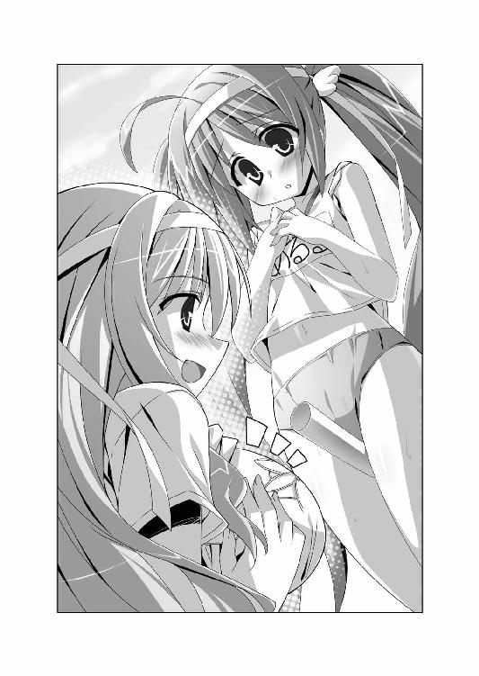
メルルはおまたに挟んだまま、レイシアの爆乳にバトンを差し入れた。
むにゅにょんっ──生チチの未曾有の柔らかさが恭太郎を包み込む。
ただでさえ、興奮ゲージがレッドゾーンに達しているというのに。
「すごくえっちなポーズぅ......。なんだかメルルが男の子になって、レイシアおねえちゃんに胸でシてもらってるみたいだね......。ドキドキしちゃうよぅ やんやん」
えっちなコトを言うものだから、余計にドキドキしてしまう。運動会の最中ぐらいは、オマセな発言は慎んでくれよ、メルルちゃん！
「こ、こんなときに何を言ってるんですかっ」
レイシアは真っ赤になりながら立ち上がった。
両腕を合わせるようにして、胸を寄せ、バトンをしっかりと挟み込んだ。
『おうふっ』
柔らかい爆乳に押されて、ヌルリと恭太郎の魂が飛び出してしまいそうになる。
一〇メートル以上の差をつけて、トラックを飛び跳ねている近衛騎士団の選手を見据えた。
「絶対に追い抜いてみせますからねっ！」
レイシアは猛然と走り出す。
たっぷんたっぷん──大きな水風船が波打つみたいにおっぱいが揺れまくる。
『どあああ！ 気持ちよすぎる！ 殺せ！ いっそ俺を殺してくれー！』
駆けっこは苦手というだけあって、あまりスピードは速くない。むしろ、遅いぐらいだろう。しかし、両脚を揃えてジャンプするよりも断然速かった。
『おおーっと！ レイシアさま、見事な頭脳プレイですじゃー！』
あっという間に赤組に追いついた。
最終走者にバトンが渡ったのは、赤組と白組がほぼ同時だった。
観客もヒートアップ。コロシアム全体を揺るがすほどの大歓声が響き渡る。
白組のアンカーはアルトだ。
「わわわ、私も胸に挟んで走りますぅっ！」
気弱な眼鏡っ娘で自己主張に乏しいアルトも、胸だけはワガママボディだった。レイシアほどじゃないが、かなりの大きさなのだ。バトンを挟むことなど造作もない。
レイシアのオナカに抱きつき、アルトは体操服の襟ぐりを広げる。上から落としてもらうようにして、バトンを胸の谷間に挟み込んだ。
「が、頑張りますぅっ！」
ぎゅっと胸を寄せ、アルトは一生懸命走りはじめる。
ゆっさゆっさと胸が揺れまくり、恭太郎はおっぱいの大波に翻弄されることとなった。もはや、悲鳴をあげることもできない。バトンと化していなかったら、心肺停止状態となっていただろう。
「このままじゃ負けちゃうわ！ 私たちもマネして！ 胸に挟んでー！」
ユフィナが声を飛ばしてくる。しかし、赤組の最終走者である少女は、敬礼をしながら答えた。
「ユフィナさま、申し訳ございません！ 私には挟むだけの胸がありませんッ！」
赤組のアンカーは貧乳だったのだ。仕方なく、ふとももにバトンを挟んで両足跳びをする。
アルトは足がかなり遅かった。普通に競走したら、近衛騎士団員として鍛えてる兵士に勝つことなんてできない。
でも、相手がふとももにバトンを挟んでジャンプしているとなれば別だった。
「アルトおねえちゃん、頑張って～～～っ!!」
妹の声援に背中を押されながら、アルトは懸命に走り続け──
見事にゴールテープを切った。
『第一競技《むにむにバトンリレー》は、白組の勝利ですのじゃー！』
「やりました～っ！ 運動会で一番になれたのははじめてですぅっ！」
バトンを胸に挟んだまま、うれしそうに飛び上がるアルト。
ばよよんっ ぼよよんっ──胸が揺れまくって、またもや恭太郎はおっぱいの渦に巻き込まれてしまうのだった。
まだ第一種目なんて信じられないよ......。元のカラダに戻る前に、魂が昇天しちゃうんじゃないかな......。
嗚呼、神さま仏さま女神さまご先祖さま姉上さま。どうかお願いですから、これから先はもっとマイルドな競技にしてください。
思いつく限りの神仏に祈ったのだけれど。
残念ながら、恭太郎の祈りは通じることはなかった。
ピコルの考えた競技は、どれもこれもえっちで、なおかつおバカなものばかりだった。
そして、恭太郎は競技の全てに『運動会の道具』として参加することになってしまった。
特に印象に残っているものをあげてみよう。
☆頰張れ！ ペロペロバナナ食い競争！
『パン食い競争ならぬ、バナナ食い競争にチャレンジしてもらいますのじゃ！ 使っていいのは、お口だけ！ バナナをくわえてゴールを目指してくだされ～っ！』
くだらねえ！ バナナ食い競争なんて、聞いたことないよ！ どっからそんな発想が出てくるんだ！
ハリセンに憑依してピコル師匠の頭を叩きたい。できることなら、ちょっと強めにドツきたいところだ。
しかし、ツッコミはおろか、ため息すら吐けなかった。
『さ......寒い......。凍えて死にそうだよ......』
運動会日和のポカポカ陽気だってのに、恭太郎は雪山で遭難したみたいに震えていたのだ。寒くてなにも考えられない。
バナナに憑依した恭太郎は、女官によって皮を半分ほどむかれてしまった。
生皮を剝がれるような痛みに襲われるかと思ったけれど、そんなことはなかった。服を脱がされたような寒さを感じただけだ。
その後、なぜだかわからないが女官によって《氷結》とかいう魔法を掛けられてしまったのである。
黄色い皮の表面を薄い氷の膜で覆われた。冷たいのを通り越して、全身が痛い。
バナナの実の部分までは凍ってないと思う。体内が凍っているような感覚はない。凍り付いてるのは外側だけだ。
氷を接着剤代わりにして、皮を半分ほどむいたバナナが何本もテーブルに立てられた。
恭太郎も同じようにテーブルに立てて並べられる。
バナナの実がテーブルを突き破って、直接生えてきたかのような状態。
『バ......バナナを凍りつかせて......いったいなにをするつもりなんだ......。』
どうして俺はバナナに憑依しちゃったんだろう。明らかに、移動するアイテムを間違えた気がする。
くそっ、意識が遠のきそうだ。幼い頃に修行として行った真冬の寒中水泳を彷彿とさせる寒さ。気を抜くと眠ってしまいそうに......ダメだ！ 眠ったら死ぬぞ！
テーブルは女官たちによって、トラックの中央へと運び出された。
ほどなく、競技開始を告げる号砲が撃ち鳴らされる。
赤組と白組の選手が、二人一組になって一斉にスタート。
恭太郎が立てられたテーブルの前に、白いハチマキをつけたエリスとアルトが駆け寄ってくる。
そして、恭太郎は《頰張れ！ バナナ食い競争！》という競技の真の恐ろしさを知ることとなった。
「このバナナの実の部分を口にくわえて、ゴールまで走ればいいんですのねっ！ 簡単ですわっ！」
「でも、どうして二人一組なんでしょうか？ 一人ずつスタートしてもいいと思いますけど......」
アルトの疑問に答えるように、ピコル師匠のアナウンスが響き渡った。
『バナナは《氷結》の魔法によって、台に固定されてますのじゃー！ 二人がかりでペロペロ舐めて氷を溶かし、バナナをゲットするんですじゃー！』
二人がかりで......な、舐めるだと～～～～っ!?
カラダを舐め回されちゃうなんて、冗談じゃない！ 恭太郎は嫁入り前の婦女子と手が触れ合うだけでも良くないことだと思っているのだ。舐められちゃうなんて、許されるワケがないッ！
逃げだそうと思っても不可能だった。氷によって、しっかりとテーブルに固定されてしまっているのだ。
形の良い眉を寄せて、エリスはわずかに顔をしかめる。
「舐め回すなんて下品ですわね......。このエリス・レムリス・トレクワーズには相応しくありませんの。でも、競技なら仕方がありませんわね。アルト、やりますわよ！」
「は、はいっ！」
テーブルに手を突き、二人はゆっくりと顔を近づけてきた。
桜色のプルプルとした唇がバナナと化した恭太郎に迫る。
『やめろっ！ やめてくれ～～～っ!!』
恭太郎の叫びも空しく──ちゅっ
エリスの唇が躊躇いがちにバナナに触れた。
続けざまに──ぺろんっ
可愛らしく舌を出して、アルトがバナナを舐めあげる。
『あふん......』
恭太郎は思わず声を漏らしてしまった。唇も舌も柔らかくて、すごく温かくて。とても心地よかったのだ。
「なんだか、この氷......甘いですわね？」
エリスの言葉に、アルトがうれしそうに微笑んで同意する。
「デザートみたいですぅ」
補足説明をするかのように、ピコル師匠の声が聞こえてきた。
『バナナを固定している氷には、トレクワーズの宮廷料理人が作った特製のシロップが使われておりますのじゃ。楽しんで競技ができるようにという、このピコルめの工夫ですのじゃー』
「ただの氷だったら辛いですけど......これなら平気ですねっ。アイスキャンディーみたいですっごく美味しい」
フンと鼻を鳴らしつつ、エリスは妹に命じる。
「喜んでる場合ではありませんわ。これは競争なんですのよっ！」
隣では赤組の少女たちが、一心不乱にバナナを舐めている。表面を覆う氷が溶け始めていた。
「私たちも氷を溶かしますわよっ！」
髪が邪魔にならないよう、豪奢な金髪の縦ロールを耳に掛け、エリスはバナナに舌を這わせる。
『うおおおおうっ！』
ぞくぞくぞくぞくっ──電気ショックにも似た快感が駆け抜ける。
バナナでなく桃みたいなウブ毛の生えた果物だったら、きっと全身の毛が逆立っていただろう。
「は、はいっ！ 頑張りますぅっ！」
アルトもエリスに負けじと、舌を動かした。二人で一本のバナナを奪い合うように、ペロペロと舐め回す。
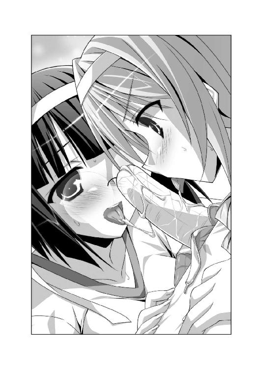
というか、女の子がバナナを舐めてる図って、なんだか──いかんっ！ なにを不埒なコトを考えてるんだ！ 自重しろ！ ええい、悪しき煩悩よ！ 消えされ!!
せっかく意識しないように努力したのに、ピコル師匠が水の泡にしてしまう。
『この競技は王仕さまに、ご奉仕してあげるための練習でもありますのじゃー。王女さまとて、たまには王仕さまを喜ばせてあげることも必要ですからのぅ。バナナを王仕さまだと思って、優しく舐めしゃぶってあげると良いですのじゃ』
バカ！ 師匠のバカ！ 真っ昼間から、なんてコト言ってんだ！ 運動会のさわやかな雰囲気が台無しじゃないか！......俺もちょっと考えちゃったけど！
エリスはピコルの言葉の意味がわからなかったらしく、不思議そうな顔をしている。
「ご奉仕？ どういう意味ですの？」
しかし、アルトは意味がわかっちゃったみたいだな。顔を真っ赤にして、うつむいてしまう。
「それは、たぶん、恭太郎さまの......ああぅぅ、言えないですぅ。聞かないでください」
「？？？......フン、よくわかりませんが、とにかく舐めて氷を溶かせばいいんでしょう？ ほら、もっと口を動かしなさいっ！」
赤組に負けたくないのだろう。エリスは素早く舌を動かす。
ちゅ～ちゅ～ ペロペロ れるれるれるれる～
『そんなに舐めちゃっ、ダメだって、うわっ、うわわわっ！』
勝手に声が漏れてしまう。全身が冷え切っていたせいもあって、温かな舌で舐めあげられると最高に気持ちよかった。
「このバナナ、大きくて舐めづらいですね......」
ほっぺを染めつつ、アルトは躊躇いがちに舌を出す。バナナの先端を舌先でチロチロと舐め回した。
『あうっ、先っぽばっかり攻めないでくれ......あふんっ』
「なかなか溶けませんわね......ええい、焦れったいですわっ！」
せっかちなエリスは、舌で舐めて少しずつ氷を溶かすなんて我慢が出来なかったんだろう。
「──あむっ」
バナナを口にくわえてしまった。頭を上下させて、唇でしごくようにして、凍り付いたバナナを溶かそうとする。
ちゅぷちゅぷっ──シロップが溶けて、ウェットな音が響いた。
『うわあああああっ っ』
エリスの口はヤバかった。いろんな意味で全身がとろけてしまいそうだ。
耳の先までピンクに染めて、アルトは姉を見つめる。
「はゎわわわ......エリスお姉さま大胆ですぅ」
「はいはん？ ほういう意味れすの？」
バナナを口にくわえたまま喋ったから、声がおかしくなってる。
「私ほ眺めへないれ、アルトも舐へなはいっ！」
「は、はいっ！」
アルトも懸命に舌を伸ばし、バナナの実を舐め回した。
エリスのおしゃぶりとの同時攻撃だ。
『ぬわああああああああああ～～～～っ』
思わず断末魔にも似た、雄叫びをあげてしまう恭太郎。
バナナに憑依していなかったら、間違いなくケダモノと化していたに違いない。
二人が一生懸命舐めたおかげで、恭太郎バナナの実が外れた。どのコンビよりも早い。
バナナの実をくわえたまま、エリスは立ち上がった。
「さあ、ゴールへいひまふわよ!!」
二人のお姫さまはゴールへダッシュ。
会場の大声援を受けながら、ゴールテープを切った。
二人は見事、一位に輝いたのだ。
「おーっほっほっほ！ 私に掛かればざっとこんなものですわっ！ ユフィナ姉さまなど、恐るるに足りませんのっ！」
「二度も一位になっちゃうなんて......今年の運動会は夢みたいですぅ！」
大喜びのお姫さまをよそに、全身を舐められまくってしまった恭太郎はと言えば──
『しくしくしくしく......もうオムコにいけない......』
ショックのあまり、目の幅涙を流していた。瑞々しかったバナナも、すっかり萎びてひからびかけていたに違いない。
なお、競技に使ったバナナは、エリスとアルトがおやつとして美味しくいただいた。
食べられてしまう前に、女官の制服に魂を移したのは言うまでもない。
☆駆け抜けろ！ ドキドキ障害物競走
『運動会の定番、障害物競走ですじゃー！ 恋愛はまさに、障害物競走と一緒！ どんな障害にも負けない強いカラダとココロを養い、見事にお世継ぎづくりまで辿り着いていただきたいですのじゃー！』
『ちくしょう！ どうして俺は一輪車なんかに憑依しちゃったんだ......！』
トラックの中央で、恭太郎は天を仰いで嘆いていた。というか、一輪車のサドルの部分に顔があるので、常に天を仰いでいることしかできないのであるが。
恭太郎は木製の一輪車に憑依していた。サーカスでピエロが乗っていそうなカラフルなカラーリングの一輪車だ。
スタートラインには、障害物競走に参加する少女たちが並んでいる。
第二王女のレイシアが緊張を解そうとするみたいに、幾度も屈伸運動をしていた。
曲げ伸ばしのたびに爆乳がぼよんぼよんと上下する。凄まじい迫力だ。
胸の大きい王女さまは、おしりもちょっぴり大きめだった。ブルマが小さめなのか、ムチムチなヒップに布地が食い込んでしまってる。
競技がスタートしたら、あのおしりが俺の上に乗っかるのか......？
おいおい！ そんなの耐えられるワケがないだろう!?
再び、恭太郎は自らの浅はかさを呪った。
『バカ！ 俺のバカ！ 一輪車に魂を移動したら、こうなるに決まってるじゃないか！』
勘違いしないで欲しいのだが。決して恭太郎は一輪車になって女の子に乗られたいという願望は持っていない。将来の夢を『美少女が乗る自転車のサドル！』と言い切るアレスタとは違うのだ。
用具室でスタンドに立てられた一輪車を見つけた瞬間、恭太郎は快哉を叫んでしまった。
『コレだ！ 一輪車に憑依すれば、石像まで辿り着けるんじゃないか!?』
一輪車ならタイヤを使って自由に移動ができる。全力でジャンプすれば、ちょっとした段差なら乗り越えられるかもしれない。
廊下をひた走り、階段をジャンプして、観客席の最上段まで行くことができれば、魂を元に戻すことができる！
恭太郎は喜び勇んで一輪車に憑依したのであるが。
『くそっ！ スタンドから抜け出せない！』
一輪車を立てておくための台から、自力で脱出することは不可能だった。
サドルを留め金に引っかけて車体を宙に浮かせるような構造になっているらしく、いくら車輪を回しても前進しないのだ。
もがいているウチに女官がやってきて、トラックへと運び出されてしまう。
焦っていたために、女官の制服へと逃げることを忘れていて──運動会で盛り上がるグラウンドへと引き出されてしまった次第だ。
一輪車だけでなく、トラックにはさまざまな道具が配置されていた。
平均台、跳び箱、ネット、ハードルなどなど。障害物競走でおなじみのものばかりだ。
一輪車は二番目の障害物である。ランナーはネットの下をくぐった後で、一輪車に乗って一〇メートルほど走るみたいだな。
嗚呼、唐突に大雨が降り出して、障害物競走だけ中止にならないかな......。
運動会が苦手な小学生みたいなコトを真剣に祈ってしまったけれど、当然ながら彼の祈りは届かない。
──パンッ！
容赦なく号砲が撃ち鳴らされ、赤組＆白組合わせて六名ほどが一斉にスタートした。
女の子っぽく両肩の横あたりで手をグーにして、レイシアも走り出す。
ぶるるんっ ぶるるんっ──体操服に包まれた爆乳が派手に暴れまくった。
運動神経は決して悪くないけれど、胸が大きすぎるせいでレイシアは駆けっこが苦手だ。最初の障害物であるネットに辿り着いたのは、六人中で最後であった。
懸命に網をくぐり抜け、第二の障害物である恭太郎の前までレイシアがやってきた。
「一輪車に乗るなんて、初等学校の体育の授業以来です。うまく乗れるでしょうか......？」
心配げな声を漏らしながら、一輪車をスタンドから降ろした。
サドルを──すなわち、恭太郎の顔をゆっくりとブルマにあてがう。
『............ッ!?』
今までに感じたことのない、不思議な柔らかさが顔全体を覆った。
「えいっ！」
可愛らしい掛け声を口にして、レイシアはサドルに乗った。
（これはヤバいって！ ふとももが!? おしりがああああ～～～っ!?）
おしりの感触に加え、両方のほっぺをふとももでしっかりと挟まれてしまう。ものすごい圧迫感だ。
「あぅあぅ、うまく乗れませんっ！ このままじゃ、ビリになっちゃいますっ！」
恭太郎の顔面にまたがり、懸命に一輪車を漕ごうとする。
「よいしょっ、よいしょっ」
恭太郎の顔面にまたがった状態で、レイシアは両脚を動かしたのだ。
いわゆる、顔面騎乗状態。柔らかなおしりやおまたの部分が、恭太郎の顔にグニグニと押し当てられてしまう。
ブルマ越しにしっとりと汗ばんだおしりの重みを感じた。
なるほど、アレスタがサドルになりたがったのも頷けるな。これは凄まじい状況だよ──って感心してる場合じゃない！
ふとももやおしりで思い切り圧迫され、体温と女の子っぽい甘い香りに包まれて、恭太郎は気が遠くなってしまう。もうこのまま一生をサドルとして過ごしてもいいかななぁんて、とんでもないコトすら考えてしまった。
（嫁入り前の女の子が、男の顔におしりを押し当てるなんてダメだッ！ 頼むから、俺から降りてくれ～～～っ！）
恭太郎は柔らかすぎる感触から少しでも逃れたくて、顔を背けようとした。だが、ほとんど動くことができない。サドルが、わずかに震えただけだ。
そして、その行為は逆効果であると、すぐに気がついた。
「あんっ」
レイシアが微かに甘い声を漏らしたのだ。びっくりしたような顔で、一輪車から飛び降りる。
「なんだか、サドルがブルブル震えたような気がします......」
恭太郎が顔を背けようとしたために、一輪車のサドルが動いてしまったようだ。
サドルの上には、ブルマを密着させる形でレイシアが乗っかっていたワケで。
ええーっと、つまり、恭太郎は図らずもレイシアのイケナイ部分に振動を与えてしまったというコトに──ぶわああ、違うんだ！ そんなつもりじゃなかったんです！
レイシアは微かに唇を嚙んで、小さな声で呟いた。
「競技中ヘンな気分になっちゃうなんて......私ったら最悪です。いつから、こんなにえっちな女の子になっちゃったんでしょうか？ 王女さま失格ですよ......」
『レイシア......』
真面目な王女さまは、眉根を寄せて前方を見やる。
他の選手たちは一輪車を走り終え、次の障害物である平均台を渡っていた。既にダントツでビリの状況だ。
「このままじゃ、みんなの足を引っ張っちゃう......。恭太郎さまにほっぺにちゅーしてもらえなくなっちゃいます......」
レイシアの表情は悲しそうだった。瞳には微かに涙の粒が浮かんでる。
恭太郎の口づけなんて、ご褒美になるとは思えない。大して価値があるものじゃないからな。そんなもののために頑張らなくてもいいと思う。
けれど、自分のせいで、頑張ろうとしているレイシアがビリになってしまうのは耐えられなかった。
レイシアはビリになっても諦めようとはしなかった。体操服の袖で汗を拭くフリをして涙を拭い、一輪車で再び走り出す。
ふとももやおしりの柔らかさに苛まれつつも、恭太郎は決意を固めた。
『ズルはよくないと思うけど......俺が邪魔しちゃった分を取り戻すぐらいなら構わないよな......？』
カラダのあちこちに力を込めてみる。
恭太郎の意志で車輪を回転させることができそうだ。
ふとももの間から、わずかに覗く視界で前を見据える。
『しっかりつかまってろよ！』
恭太郎の気持ちが通じたみたいに、レイシアはサドルを両手で摑んだ。
『──行くぞ！』
車輪を回転させ、恭太郎は猛然と走り出す。
もちろん、サドルの上に乗ったレイシアを落とさないよう、細心の注意を払って。
「きゃああああっ!?」
突然走り出した一輪車に驚き、王女さまは悲鳴をあげる。
次の障害物である平均台が目前に迫る。
「ぶ、ぶつかっちゃいますーっ！」
『大丈夫だ！ 俺に任せとけ！──でぇいっ！』
全身に力を込めて、恭太郎は車体を跳ね上げた。
ピコル師匠が絶叫にも聞こえる声で実況する。
『な、なんと！ レイシアさまが一輪車に乗ったまま平均台に飛び乗られたのじゃー！ ものすごいスピードで渡っていく！ これはすごいのじゃ～～～っ!!』
スタンドからも大歓声があがった。会場全体がヒートアップする。
平均台から飛び降り、レイシアを乗せたまま、恭太郎は次の障害物であるハードルを目指そうとした。
そのとき、もう一つヒートアップしちゃってるものがあると気付いた。
「はうぅっ さ、サドルがグリグリ動いてます あうっ」
サドルの上で、レイシアは顔を真っ赤にしていた。ふとももやおしりが、ビクビクしている。
恭太郎はサドルを動かしているつもりはない。上に乗っているレイシアを落とさないよう、バランスを取ろうと必死なためか、サドルを押しつけるカタチになってしまっているのだろうか？
『ほんの少しだけ我慢してくれ！ すぐに終わるからな！』
恭太郎は並べられたハードルへと突進する。
スネぐらいの高さのハードルを次々にジャンプで越える。
グラウンドに着地するたびに──
「あんっ ダメですっ 振動がっ 伝わって そんなに激しくしちゃ 気持ちよくなっちゃうぅっ」
『のわあああっ、えっちな声は出さないでくれぇっ!!』
残る障害物は跳び箱だ。現在の順位は三位。全力で飛ばせば一位になれるかもしれない！
レイシアはサドルにしっかりと両手で摑まり、ギュッと目を閉じていた。耳の先までピンク色に染めてうつむいてる。ブルマを微かにサドルにこすりつけているような気がするけど......この件については気のせいだということにしておく!!
レイシアのふとももの間から、前方を睨み付ける。壁のようにそびえ立つ跳び箱を見据えた。
『跳び箱まで、一気に行くぞっ！』
恭太郎はさらにタイヤの回転をあげた。トラックから土埃が舞うほどの猛スピードだ。
一輪車の上で、レイシアはプルプルと首を横に振った。
「あ、あんなのを跳び越えるなんて......レイシアは、衝撃でおかしくなっちゃうっ 壊れちゃいますぅっ」
加速をつけて恭太郎は踏切板へと突っ込んだ。
王女さまごと、一輪車が勢いよくジャンプをする。
『どりゃああああああああああああああ!!』
恭太郎の気合いと。
「「「「おおおおおおおおおおおっっっ!!」」」」
観客のどよめきと。
「らめぇえええええええええええええっ」
レイシアの甘い声が一つに重なった。
見事に跳び箱を越えて一輪車は着地、そのままゴールまで走り抜ける。
結果は──二着だった。惜しくもトップは逃してしまった。
でも、話題の中心は当然ながら、華麗な一輪車テクを見せつけたレイシアだった。
一位となった赤組の少女も、賞賛の拍手を送ってる。
会場中から「レイシアさま、素敵ー！」と歓声が上がっていた。
マイクと同じ機能を持つクリスタルを手にしたピコル師匠が、レイシアに駆け寄る。
『驚きましたのじゃ！ まさか、レイシアさまがあれほどまでに一輪車がお上手とは！ こっそり練習をなさったんですかな？』
「ほ、ほえ......？」
放心状態だった王女さまは、ハっと我に返った。ちょっぴり唇の端から垂れてしまっていたヨダレを拭い、コホンコホンと幾度も咳払いをする。
レイシアの声がクリスタルで増幅された。
『わ、私もビックリしています。一輪車が勝手に走っていたような......？』
『ふゥはははー！ これまたご謙遜をなさりますのじゃ。レイシアさまにかかれば、意識せずとも自由自在に乗りこなせるというコトですかな？』
『いえいえ、無我夢中だったので、どうやったのか覚えてないんです。初等学校で乗って以来だったんで、すごく不安だったんですが......その......』
トラックに倒れている一輪車を見つめ、王女さまはボヮっと頰を染める。
『一輪車がクセになっちゃいそうです』
レイシアを助けてやりたかったからとは言え、正直ムチャをしすぎたよ......。
反省しきりな恭太郎なのだった。
一輪車に憑依した恭太郎は、本体である石像を目指そうとした。
レイシアを乗せて障害物競走を突破できたぐらいだから、気合いを入れれば観客席の最上段に辿り着くこともできるだろう。
ようやく、こんな馬鹿げた状況から脱することができると思ったのだが──。
競技終了後、女官によって手早く一輪車を片付けられてしまった。一輪車を立てておくためのスタンドへと戻されてしまうと、身動きが取れなくなる。敢えなく断念せざるを得なかったのだ。
その後も、元のカラダへと戻るチャンスを少しでも増やすために、さまざまなアイテムに魂を移動しまくった。
大玉転がしのハリボテ玉に憑依して、グラウンドを転がされまくり、すっかり目を回してしまったり。
綱引きのロープと化して、女の子たちに引っ張られ、カラダが引きちぎれそうな目に遭ったり。
《コスプレ早着替え競争》とかいう謎の競技では、グラウンドに設置された更衣室のカーテンに憑依してしまい、王女さまたちがコスプレ衣装に着替えるようすを間近で観察する羽目に陥ったり。
恐らく、ほとんどの競技に運動会の道具として参加しただろう。
結果は──全て空振り。
恭太郎の本体に近づくことはおろか、側役に従事しそうな女官の制服に憑依することもできなかった。
ただひたすら、ブルマ姿の女の子たちに翻弄されてしまったのだ。
楽しげに運動会で競い合う王女さまをよそに、恭太郎の精神はヘロヘロ。魂だけとなって道具に憑依しているはずなのに、肉体的にも疲れ果ててしまった。
（いっそのこと路傍の石にでも憑依して、そのまま一生を終えてしまおうか......）
そんな後ろ向きなことすら考えたほどである。
（......いや、ダメだダメだ！ 諦めるな、神来恭太郎！ おまえは、ユフィナたちを助けてやると約束したはずだろう!? こんなところで負けるなんて男が廃るぞ！）
萎えそうになる気持ちを必死に鼓舞して魂の移動を繰り返したのだが、進展のないまま時間だけが過ぎていき──。
ついには、最終競技を迎えてしまった。
☆押したおせ！ ゴロニャン恭太郎倒し！
『ついに、最終競技がやって参りましたのじゃー！ 最後の種目は《押したおせ！ ゴロニャン恭太郎倒し！》ですじゃ！ 棒倒しの要領で、相手チームの恭太郎人形を押し倒してくだされ～っ！』
現代日本でごく普通に学校に通っていた頃、恭太郎は何度も運動会を経験している。だが、『棒倒し』という競技には参加したことがない。最近はどこの学校でも行われなくなった種目のようだ。
チームを二つにわけ、それぞれのチームが自陣に棒を立てる。棒と言っても、丸太ほどの太さがあり、何人かで支えなくては立てられないシロモノだ。棒を立てている間に、残った仲間が敵チームの棒に飛びかかり、相手の棒を引き倒すことができれば勝ち──そういうゲームらしい。
行われなくなった理由は、恐らく危険だからだろう。棒を倒すために敵味方が入り乱れて押し合いへし合いしていたら、ケガをしちゃうヤツもいるに違いない。
ピコル師匠も、そんな危険を想定しているようで、きちんと対策がとられていた。
グラウンドにはウレタンみたいな柔軟性のある素材のマットが敷き詰められ、転んでもケガしないように配慮されてる。
立てられているのは丸太ではなく、マトリョシカ人形にも似たシルエットの恭太郎人形だ。高さは一八〇センチほど。ビーチボールみたいに空気をいれて膨らませてある。底の部分に砂が入れてあるようで、起き上がりこぼしの原理で自立することができた。
赤組の人形は赤いシャツ＆ハチマキをつけてる。恭太郎は白組の人形に魂を憑依させているから、自らの姿を眺めることはできないけれど──たぶん、白いシャツ＆ハチマキをつけているのだろう。
師匠がとった安全対策は、それだけではなかった。
競技に参加する女の子たちは、全員がプニプニな肉球のついた大きな手袋＆靴をつけてる。引っ搔いたり、踏んづけたりしてしまっても、相手を傷つけないようにという気遣いだ。
手足に猫みたいなでっかい肉球をつけているからだろう。全員の頭に可愛らしい猫耳＆おしりには長いしっぽがついてるのがご愛敬だけど。
これだけ対策をしていれば《棒倒し》のような激しい競技を行っても、ケガをすることはない。
恭太郎人形の中で、恭太郎はうむうむと頷く。関節すらついてない風船人形だから、首は動かない。わずかに全体が揺れただけだ。
トレクワーズ王国にとって、ユフィナたちは大事なお姫さま。安全に競技を行うために、細心の注意を払ってるんだなぁ。
『って、感心してる場合かああああああああああああああああああああッッッ!!』
ツッコミを入れるべき部分は、そこではないのだ。もっと重大な問題がある！
喋ることができない恭太郎の代わりをしてくれるかのように、ユフィナが怒鳴った。
「どうして、こんな格好じゃなきゃいけないのよッ！」
赤組のリーダーであるユフィナ、チームメンバーである近衛騎士団団員。
白組を率いる、レイシア、エリス、アルト、メルル。白いハチマキをつけた女官たち。
その場にいる総勢六〇名ほどが──一人残らずセクシーな下着姿だったのだ!!
レース地のブラ＆ぱんつ。ガーターベルト＆網タイツ。
赤組は赤い下着、白組は白い下着という差はあれど、誰もがえっちぃランジェリーを身に纏っている。三六〇度、どこを観てもセクシーランジェリーの猫耳っ娘がいるというのは圧巻だった。
ピコル師匠はユフィナに睨まれても涼しげな顔をしていた。
『本日の運動会は、お世継ぎづくりの練習も兼ねていると申したハズですのじゃ。恭太郎を押し倒すこの競技では、より実戦に即した格好をしてもらったまでですじゃ～』
「じ、実戦ってなによ！ 私はそんなことするつもりはないしっ！」
『おやおや？ 悠長なコトを仰っていていいんですかのぅ？ ユフィナさま以外の姫さまがたはやる気のようですじゃよ？』
白組に所属している四人のお姫さまたち。純白の下着に身を包んだ少女たちの瞳には、炎が燃えていた。
ずびしっ！──メルルちゃんが肉球のついた手でユフィナを指さして。
「ユフィナおねえちゃん！ 絶対に負けないからねっ！ 勝つのはメルルたちだよ！」
争いごとが苦手なレイシアも、真剣な表情で頷く。
「白組と赤組は、現在同点なんです。この競技で勝ったチームが優勝なんですよ」
いつもはヘナチョコなアルトも、気合いが入ってるみたいだ。瞳をギュッと閉じて、勢いよくまくし立てる。
「ユフィナ姉さまと近衛騎士団の方たち相手じゃ絶対負けちゃうと思ってたけど......同点になるなんて夢みたいですっ。こうなったら絶対に優勝して、恭太郎さまに......ちゅ、ちゅーして欲しいですぅ！」
豪奢な金髪を手で払いつつ、エリスはフンと鼻を鳴らした。
「ユフィナお姉さまとて容赦しませんわ。完膚無きまでに叩きのめして差し上げますの！ お覚悟なさいっ!!」
第一王女のユフィナは国民の前ではおしとやかなお姫さまを装っている。だが、本当は負けず嫌いで強気な女の子なのだ。
妹たちに挑まれて、闘争心に火が点いてしまったらしい。
赤いレース地のブラに包まれた巨乳を抱えるように、ゆっくりと腕組みをする。
「ホントは、こんな格好で競技なんかしたくない。でも、恭太郎が観てるワケじゃないし......いいわ。みんながその気ならやってあげるわよ」
いやいや、俺はバッチリ観てるんだよ！ 特等席にいるんだって！
白組の陣地に立つ恭太郎人形の中で、懸命に叫ぶが声は届かない。
メルルちゃんは「むむむーっ！」と眉を顰めて唸った。
「上から目線で言われたーっ！ 恭太郎おにいちゃんを押し倒したい気持ちなら、メルルが一番なんだからねっ！」
なにを言い出すんだい、メルルちゃん！
ポッと赤らんだ頰を手で覆いつつ、レイシアがとんでもないことを口走る。
「わ、私はどうせなら恭太郎さまに押し倒していただく方がうれしいです。荒々しく迫られたら絶対に断れないと思います......あぅあぅ」
既にスポーツの話じゃなくなってるじゃないか、レイシア！
アルトちゃんもメガネの下の瞳をグルグルさせながら。
「私は恭太郎さまを押し倒すなんて無理ですぅ！ で、でも......妄想の中でなら、何度か恭太郎さまに抱きついちゃったことがありますぅ！ はゎわわわ」
そんなカミングアウトしなくてもいいんだよ、アルトちゃん！
高飛車なクセにとってもウブなエリスだけがキョトン顔で首を傾げる。
「押し倒す？ 抱きつく？ 意味がよくわかりませんけど......これが最後の競技なんですのよ！ 気合いが足りませんわ、気合いがっ！」
ココロの中でツッコミを入れまくっていた恭太郎は、エリスの『最後の競技』という言葉で我に返った。
そう──これが最後の競技なのだ。
時刻は午後四時を回ろうとしている。《たまいれコードくん》を使用したのは早朝のこと。まもなく、タイムリミットである半日が経過する。それを越えれば、もし自分のカラダに戻れたとしても、自由に動かせなくなってしまうのだ。
人形に入ったまま恭太郎は観客席を見上げる。スタンドの最上段に恭太郎の石像が設置されていた。彼我の距離は一〇〇メートル以上。
この競技が終わる頃までに、あの石像まで辿り着かなきゃいけない。
でも、いったい、どうやって？ そんな方法は想像がつかないぞ。
ひょっとしてもう、絶望的な状況じゃないのか......？
恭太郎の苦悩を断ち切るかのように──パンッ！
号砲の音が聞こえてきた。最終競技がスタートしたのだ。
そして、すぐに恭太郎はなにも考えられなくなった。
「みんなーっ！ 恭太郎おにいちゃんを守ってーっ！」
メルルちゃんの声に合わせて、下着姿の女官の少女たちが恭太郎人形を取り囲んだのだ。全方位から抱きつき、倒されないように押さえ込む。
王女さまたちの美貌に隠されがちだけれど、女官もみな美少女ぞろい。そんな女官たちがオトナっぽいランジェリーを身に着けて抱きついてくるなんて、興奮するなって方がムチャだ。
無数の胸やオナカやおしりやふとももが密着して、恭太郎の心拍数をカチ上げる。いや、人形だから心臓はないんだけど！
「恭太郎を押し倒しますわよっ！」「タイミングを合わせて攻撃します！」
あらかじめ作戦を決めてあったのか、双子の姫が数人の女官を率いて、赤組の人形へと迫った。左右から挟撃し、近衛騎士団の防御をかいくぐろうという作戦のようだ。
だが、王宮を守るために日々研鑽を積んでいる騎士団は伊達ではなかった。
ユフィナが肉球のついた手を振り上げて。
「防御陣!!」
下着姿の猫耳騎士たちが、一糸乱れぬ動きで陣形を組んだ。
三重の隊列を組んで、左右から迫るレイシアとエリスの突撃を阻む。
「そこをおどきなさいっ！ このエリスの道をふさぐなんて、許されませんわよっ！」
エリスは騎士たちを押しのけて、なんとか赤い恭太郎人形を目指そうとする。だが、防御は堅かった。囲みを突破しようとしても無数の肉球に押し戻されてしまうのだ。
「さあ、こっちも攻撃するわ！ 突撃隊、前へ!!」
「「「──ハッ！」」」
防御陣から、数人の騎士が歩み出た。いずれも見事に鍛えられたカラダを持つ女騎士だ。筋骨隆々という感じではないけれど、腹筋が綺麗に割れている。
「行くわよ～～～～～っっ!!」
ユフィナを先頭にして、赤組が白い恭太郎人形へと突撃した。
「こ、怖いですぅっ！ 来ないでくださ～～～いっ！」
アルトがメガネの下の瞳を潤ませて、人形に抱きついてくる。迫り来る騎士団にビビっちゃう気持ちもわかるけど、あんまりくっつかないでくれ！ おっぱいが当たりまくってるよ!?
ユフィナ＆騎士が、白い恭太郎人形を守る女官に突撃した。
「きゃーんっ！」という悲鳴が、あちこちから聞こえはじめる。
王宮を守る女騎士と、王族の身の回りの世話をする女官とでは、パワーに差がありすぎるのだ。
女官たちは騎士に抱きかかえられ、恭太郎人形から引きはがされてしまう。大人と子どもが相撲を取っているみたいに、放り投げられてしまった。
恭太郎の元に辿り着かれるのは時間の問題かと思えた。
「一気に人形を押し倒すわよーっ！」
ユフィナの手が人形に掛かるかに見えた。
だが、メルルちゃんが両手を広げて、騎士たちの前に飛び出す。
「おにいちゃんに近づいちゃダメぇッ!!」
女官相手には容赦のなかった騎士たちも、王女さまには手出しがしづらいようだ。
「そこをおどきください、メルルさま！」
「ダメったらダメ！ 恭太郎おにいちゃんには手出しさせないよっ！」
困ったような表情を浮かべた女騎士の横合いから、ユフィナが手を伸ばした。
「や～～～んっ！」
嫌がるメルルを抱っこして、ポイッと横合いへ押しやる。
「王女さまだからって、今は気にしなくていいわよ。そーゆー競技なんだから！」
ユフィナ率いる赤組が、ついに白組の恭太郎人形に手を掛けた。
「さあ、一気に押し倒すわよっ！」
プニプニとした肉球で押しまくられ、恭太郎のカラダが少しだけ傾いた。
人形に抱きついたまま、アルトが涙声で叫ぶ。
「レイシア姉さま！ エリス姉さま！ 戻ってきて欲しいですぅ！ このままじゃ負けちゃいます～っ！」
防御の近衛騎士を押しのけ、なんとか赤い恭太郎人形に迫ろうとしていたエリスとレイシアが慌てて駆け戻ってくる。
「「【浮揚】」」
申し合わせたように双子の姫は同時に魔法を使い、人垣を飛び越えた。人形を支えるアルトの隣に着地する。
「こらーっ！ 魔法はズルいわよっ！」
ユフィナが文句を言ったけれど、エリスは悪びれたようすもなかった。
「使用禁止とは言われていませんわっ！ 攻撃魔法じゃないから構わないと思いますのっ！」
レイシアは申し訳なさそうにしていたけれど、必死に言い募る。
「ごめんなさいっ。どうしても勝ちたいんですっ！」
押しのけられていたメルルちゃんも、魔法を使ってジャンプ。恭太郎人形に飛びついた。
「メルルもがんばるよっ！ 恭太郎おにいちゃんに、ほっぺにちゅーして欲しいもんっ！」
四人のお姫さまが恭太郎人形に抱きついた。今にも倒されそうな人形を、全力で支えようとする。
当然ながら、白いレース地の下着に包まれた王女さまたちのボディが当たりまくり。
レイシアの爆乳とアルトの巨乳が押し当てられ、エリスの美脚が絡められ、メルルちゃんが発達途上のカラダで恭太郎の上にまたがってくる。
「あとちょっとよー！ みんな、全力で押してーっ！」
ユフィナも恭太郎人形を倒そうと、押しまくってくる。赤いランジェリーをつけている巨乳もグイグイと押し当てられた。
下着姿の美少女たちが恭太郎を中心に『おしくらまんじゅう』をしているようなものだ。
むにむに ふにふに むちむち ぷるぷる ふにゅふにゅ くにくに ぷにぷに──四方八方、上下左右。ありとあらゆる方向から女体の感触が攻め立ててくる。
視界の全てが下着だらけ。肌色成分で埋め尽くされてる。
熱っぽい吐息、飛び散る汗。ムレムレな熱気と一緒に、女の子の甘い香りが鼻をくすぐった。
『どわあああああ!! もう無理！ いろんな意味で倒れちゃうって～～～っ!!』
普通の男の子なら天国とも言える状況だが、カタブツ少年である恭太郎にとっては地獄の責め苦に等しい。欲望とは無縁の清廉の士となりたいのに、煩悩まみれのシチュエーションに陥ってしまうのだ。
逃げ出したい一心で、恭太郎は思わず叫んでしまった。
『──たまいれ!!』
魂を別の物体に憑依させるためのキーワードである。
グラウンドに敷かれたマットレスでも、女の子たちが手につけてる肉球手袋でもいい。とにかく、恭太郎人形から脱出したかったのだ。このままじゃ、俺はダメ人間になっちゃうよ！
半瞬後──恭太郎は大陸を見守っているという女神を呪った。
魂の憑依する対象を決めずに、なんでもいいから逃げ出したいと思ったのは恭太郎だ。
でも、だからって......だからって......!!
『ぱ......ぱんつに憑依するコトないだろう～～～～～っっっ!?』
ユフィナがはいている、赤いレース地のぱんつに魂が移動してしまったのだ。
ムチムチしたおしりの感触と、汗ばんだスベスベなオナカ。そしてなにより、女の子のカラダの中で最も触れてはならない部分が直接に密着してる気が──触れてません！ 俺は一切、なにも触れてませーん！
ぱんつの股布を懸命に動かして、ユフィナの肌と触れ合わないように試みた。ほんの少しでもいいから、空間を作りたかったのだ。
だが、完全に逆効果だった。
びくんびくんっ──ユフィナがカラダを震わせたのだ。
「......やっ また、ムズムズするっ なんなのよ、もうっ！......あんっ」
どうやら、恭太郎は、ぱんつの布地によってイケナイ部分を擦りあげてしまったようだ。
『ユフィナ、本当にごめんよ！ 後でハラを斬って詫びるから！』
王女さまは、肉球のついた手でぱんつを押さえる。
その隙をレイシアたちは逃さなかった。
「姉さまの力が緩みました！ 今です、一気に押し返しましょうっ！」
お姫さまたちが力を合わせ、恭太郎人形を押しまくる。
「おねえちゃん、ごめんねっ！ とりゃーっ！」
肉球のついた手で、メルルちゃんがユフィナを突き飛ばそうとした。
「やだやだ、来ないでくださいっ！ 恭太郎さまを押し倒すなんてダメですぅっ！」
メガネがズレちゃってるアルトは、だだっ子みたいに手をグルグル回して、近衛騎士団たちを牽制しようとした。
その場にいる誰もが必死だったのだ。
だから、なにがどうなったのか、正確に説明できたものはいないだろう。
恭太郎が理解している限りでは、次のような事態がほぼ同時に起こった──
突然ぱんつが動き出して、えっちな刺激を感じてしまったユフィナは、カラダの力が抜けてフラフラしていた。
赤組の近衛騎士団＆白組のレイシアたち率いる女官たちが、恭太郎人形を中心に押し合いへしあいしていた。
アルトとメルルが手当たり次第に肉球パンチを繰り出していた。
それらの行動が重なった結果、一つの奇跡が起こったのだ。
「きゃあっ!?」
周りの少女たちに押されて、ユフィナはバランスを崩した。
胴上げをされるみたいに担ぎ上げられてしまったのだ。
「ちょっ、みんな！ ストップ！ やめなさいっ！」
その直後、アルト＆メルルの肉球パンチが、ほぼ同時にユフィナの足をかすめる。
猫手の小指がユフィナのぱんつに引っかかり──するりんっ
胴上げ状態のまま、ユフィナのぱんつを脱がしてしまったのだ!!
「きゃああああっ!!」
勢いよく脱がされた赤いぱんつは、舞い散る花びらのように宙を舞った。
当然、そのぱんつには恭太郎が憑依している。
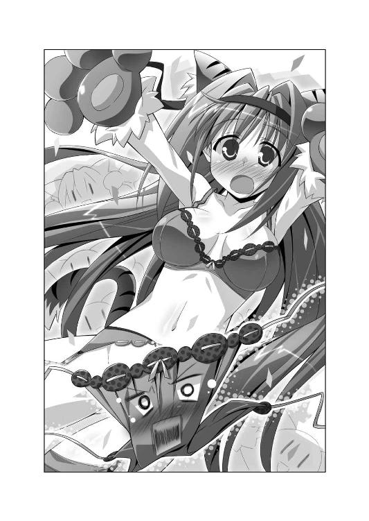
生尻の感触に苛まれるぐらいなら、空中に放り出される方がずっとマシだ。ぱんつと化していれば、地面に叩きつけられても致命的なダメージを負うことはないだろう。
そのとき、突風が吹いた。
ぱんつはさらに舞いあげられる。
コロシアム全体を見渡せるほどの高さまで、吹き上げられた。
ドクンッ！──恭太郎の鼓動が一際高く鳴った。
確かに全身に熱い血潮が漲る感覚があったのだ。
視線の先には──白い石像。神来恭太郎の本体がある。
『このまま飛んでいければ、元に戻れるじゃないか......!?』
既に太陽は傾き出している。タイムリミットは近い。
恐らく、これが女神さまがくれた最後のチャンスだ。
恭太郎は疲れ果てたカラダに鞭を打ち、残されたわずかな力を振り絞る。
『飛っべぇ～～～～～～～～っっっ!!』
がむしゃらに足をバタつかせ、もがくように手で空中を搔いた。パンツには手足などないが全身をひたすらに動かしたのだ。
コロシアムを埋め尽くす観客たちは、赤いぱんつを見て、こう思ったろう。
赤いぱんつが羽ばたいている、と。
ぱんつと化した恭太郎は、澄み渡る青空を飛んだ。
そう、それはまるで、一羽の赤い鳥のように──。
スタンドの最上段まで辿り着いた赤いぱんつは、恭太郎の石像の頭にすっぽりを覆い被さった。
『──たまいれ!!』
恭太郎が渾身の力を込めて叫んだのと、白組の恭太郎人形が倒されてしまったのが同時。
『優勝は、ユフィナさま率いる赤組なのじゃ～～～～～～～っっっ!!』
ピコル師匠の絶叫と、コロシアム全体を揺るがすような大歓声があがって。
長い長い運動会は終わりを告げたのだ──。
☆閉会式
鮮やかな夕焼けに染まるコロシアムで、『トレクワーズ王宮対抗、大運動会』の閉会式が執り行われた。
聖火の消灯や、総合結果発表、ＭＶＰの表彰などが行われた後で、優勝賞品の贈呈が行われることとなった。
椅子ごと石像と化した恭太郎が、グラウンドへと運ばれてくる。
「【解呪】」
ピコル師匠が呪文を唱えると、石像と化していた恭太郎のカラダが淡く輝いた。全身を覆っていた石が白い煙となって消滅する。
硬直していた恭太郎のカラダに自由が戻った。椅子に腰掛けたまま、ゆっくりと手を握ってみる。
恭太郎の思い通りに指を曲げることができた。
よかった......。アイテムの悪影響は出ていないみたいだな......。
目の前に立っていたブルマ姿のユフィナの頰が引きつりまくる。
「これはどういうことよ、ピコル!? どうして恭太郎がいるの!?」
「ご覧の通りですじゃ。スタンドに飾られていた石像は、実は恭太郎でしたのじゃ。これより、優勝賞品の授与を行いますのじゃー」
ユフィナは驚いたように周囲を見回す。現在は閉会式の真っ最中。
スタンドでは大勢の観客が見守っているし、グラウンドには激戦を繰り広げた選手たちが整列している。
白組のリーダーであるレイシア、エリス、アルト、メルルの四人は、本気で悔しがってるみたいに唇を嚙んでいた。
「さあ、恭太郎！ ユフィナさまに勝利のキスをして差し上げるのじゃ！」
ピコル師匠に腕を引っ張られる。促されるままに、恭太郎は立ち上がった。
「い、いらないわよ、そんなの！ みんなが見てる前でほっぺにちゅーされるなんて恥ずかしいし！」
顔を真っ赤にしつつ、ユフィナは恭太郎だけに聞こえる声で怒鳴ってくる。
「っていうか、あんた、さっきの見てたの!? わ、私のその......下着が脱げちゃったところっ！」
「............」
恭太郎は返事をすることができなかった。
「ちょっとなんで黙ってるのよ！ 白状しなさい！ 返答次第では、ぶっ飛ばして記憶を失わせなきゃ！」
物騒なことを言い出すユフィナに、ピコル師匠が声を掛ける。
「ユフィナさま、閉会式の途中ですのじゃ。ケンカは後にしてくだされ」
「うぐ......」
「さあ、恭太郎のキスを受け取って欲しいですじゃ。勝利の証ですからのぅ。頑張った赤組のメンバーも喜ぶはずですのじゃ」
仲間たちを引き合いに出されて、ユフィナは「うー」と唸った。
「し、仕方ないわね......それじゃ、ちょっとだけよ。軽くちゅってするだけだからね。それぐらいなら許してやるわよっ」
「ほれっ、恭太郎！ 早くキスをするのじゃ！ 乙女を待たせるものじゃないぞ！」
恭太郎はピコル師匠に背中を押され、ゾンビのような足取りでユフィナに近づいていく。
フラフラしながら、一歩、また一歩と王女さまに歩み寄って──
「つ......疲れた......」
そのまま、ユフィナに向かって前のめりに倒れ込んでしまった。
もにゅにょんっ──体操服に包まれた胸に思い切り顔を埋めてしまうが、もはや身動きが取れない。
「ふゥははははーっ！ いきなりおっぱいに顔を埋めるとは！ えっちな運動会で興奮して、もう辛抱たまらんのじゃな！ 恭太郎め、せっかちなヤツなのじゃ！」
ピコル師匠が高笑いをしたが、決してユフィナの胸に目が眩んだワケではない。
立っていられないぐらいに恭太郎はヘトヘトだったのだ。同じ目に遭えば、誰だって疲労困憊すると思う。
「な......な......！ ななな......!!」
しかし、そんな事情なんて知るよしもないユフィナのオデコには、みるみる血管の筋が浮かんでいった。
「なにすんのよ、このドヘンタイッ！ い、いきなり胸に頰ずりするなんて！」
腕を横に突き出し、炎に包まれた大剣を呼び出して。
最後は結局、この展開か......。
さすがに、もう慣れたよ。さあ、ぶっ飛ばすがいいさ。願わくば、弱めの魔法で頼むよ......。
諦めの境地に達した恭太郎の目前で、空中に精緻な魔法陣が描かれていく。
「【火竜演舞】!!」
直後に爆炎が刀身から龍のように迸り、恭太郎を直撃。
「ぐぼあっ!?」
為す術なく、哀れな王仕さまは夕日に染まるコロシアムで、放物線を描く羽目に陥るのだった──。
エピローグ
《黒炎城》の地下。薄暗い牢獄。スプリングも効いていない固いベッドの上。
シーツにくるまって、トレクワーズでの暮らしを思い出していたトビカピバラの少年──アレスタはベッドからゆっくりとカラダを起こした。
もう彼は泣いてはいない。毛並みまでぐっしょりと濡らしていた涙は、既に乾き切っている。
すっくと立ち上がり、狭い牢獄の中央に立った。
カピバラ少年の顔は、この世の真理を悟った高僧のように穏やかだ。瞳は半眼。口元には微かな笑みを浮かべている。
そう、アレスタは気付いてしまった。
長い長～～～い回想シーンを経て、重大な事実に気付いてしまったのだ。
「なんてこった......!!」
くわわわっ！──突如、両眼が思い切り見開かれた。
肉球のついた拳を握りしめ、アレスタは力の限りに叫んだ。
「美味しい思いをしてるのは、恭太郎だけじゃないかあああああああっ!!」
後宮での暮らしは、確かに楽しかった。お姫さまも女官のコたちも可愛いし、恭太郎はカタブツだけどイイヤツだし、ごはんも美味しいし。牢獄なんかより、ずっと幸せだ。
しかし、肝心のえっちな記憶はこれっぽっちもなかった。ドキドキのハプニングに巻き込まれるのは、決まって恭太郎一人なのだ。アレスタにあるのは、第三王女のエリスによって耳を引っつかまれて遠投された思い出ぐらいなものである。
勢いよくアレスタの瞳から血涙が迸った。先ほどまでの悔悟の涙とは違う。悔しさのあまり熱い血潮が涙となって溢れ出たのだ。
「恭太郎ばっかりズルいよ！ ズルすぎる！ 僕にもちょっとはわけてよ！」
流れ出る血涙もそのままに、アレスタは血ヘドを吐くように叫ぶ。
「僕もユフィナさまやレイシアさまやアルトさまのおっぱいに埋もれたいよ！ エリスさまのふとももに挟まれたいよ！ メルルさまにギュッと抱っこされたいよ～～～っ!!」
自分がヘマをしたせいで、恭太郎たちが捕まっちゃったのは申し訳ないと思う。
でも、恭太郎はいっつも美味しい思いをしてるんだ。ちょっとぐらい痛い目に遭っても問題ないんじゃないか。世界中のモテない青少年たちは『いいぞ、アレスタ！ よくやった！』って褒めてくれるんじゃないだろうか。
恭太郎を羨むあまり、そんな危険なコトすら考えてしまった。
と、そのとき。
カツン、カツン...──地下牢に微かな足音が響いた。
すぐさま、アレスタは涙を拭いた。
二足歩行ではなく、トビカピバラらしく四本足で立つ。
「もきゅー もっきゅー」
できるだけ可愛らしい鳴き声を出しつつ、石造りの牢屋の中を駆け回った。
見張りの女兵士たち（ゴツいお姉さんがた。すごく怖い）には、アレスタの正体が『トレクワーズ王国の王仕さま候補』であるとバレてしまってる。
でも、たまにお掃除にやってくる女官の中には、アレスタが元は人間であると知らない人がいるかもしれない。
だから、見知らぬ人が来るたびにアレスタはトビカピバラのフリをすることにしているのだ。
『どうして、こんなに愛らしいトビカピバラが牢屋に入れられてるんだろう？ 出してあげなきゃ可哀想だ！』なぁんて考えてくれることを期待しての行動である。
「もきゅ もきゅきゅー」
牢獄の中で寝そべり、丸いシッポをフリフリしてみせた。我ながら、大変に可愛らしいと思う。大抵の女の子は『きゃー、かわいいー』とか叫んで抱き上げてくれるんじゃなかろうか。っていうか、抱っこしてください。できれば巨乳の美少女がうれしいです。
キュートなカピバラアピールを続けていたアレスタだったが、近づいてきた人影を見てその足を止めた。
「え......？ どういうコト......？」
地下牢の廊下を歩いていたのは、下着姿の女の子だったのだ。しかも、なかなかのナイスバディである。小麦色に日焼けしていて、ビキニのカタチに残る日焼け跡が妙に艶めかしい。
普段だったら、そんな格好の女の子を見れば『きゃっふー！ えろいよー！ ぜひ日焼け跡をぺろぺろさせてくださーい』なぁんて叫んで、狂喜乱舞しちゃうところなのだけれど。
ここはカルタギア帝国が誇る《黒炎城》の地下牢。ウィッチェリア大陸でも有数の警備が厳重な場所なのだ。
あられもない格好の少女が歩いていたら、間違いなく警備兵に見咎められる。一番奥の牢屋にいるアレスタの元まで辿り着けるはずがない。
「げ、幻覚かな。あまりにも恭太郎が羨ましすぎて幻を見ちゃったの......？」
ゴシゴシと両目を擦ってみたけれど、下着姿の女の子は消えることはなかった。
年齢はアレスタと大差ないだろう。一四～五歳くらいか。ちょっぴりソバカスが目立つけれど、純朴そうな面立ちの美少女だ。
日焼け跡のついた巨乳も、くびれたウェストも、白いぱんつに包まれた丸いお尻も、その全てがセクシーだった。生々しい質感を持って、そこに存在している。幻とは思えない色っぽさだ。
幽鬼のように微かに揺らめきながら、下着姿の美少女がさらにアレスタに近寄ってきた。
あまりにも異様な雰囲気に、えっちな気分になる前に恐怖を感じる。だけど、身動きが取れなかった。
「き、きみは誰なの？」
「おらの名前は......サンチャというべさ......」
ひどく鈍った口調で少女は答える。その声は地下牢に殷々と響き渡り、アレスタの鼓膜を震わせた。ただ名前を名乗っただけなのに、なぜだかとてもセクシーだと感じる。背筋がゾクゾクしてしまった。
「どうしてこんなところに来たのかな......？」
身動きが取れないまま、アレスタは重ねて問いかける。
「欲しいものがあるんだべ」
「なにが欲しいの？ 僕はなにも持ってないけど......」
「いいえ、あなたも持っている」
サンチャがアレスタに手を伸ばしてくる。
鉄格子の隙間から、ゆっくりとゆっくりと。
「もらうわよ......あなたの魔力を......」
純朴そうな少女が、妖艶な笑みを浮かべる。魅入られたみたいに、女の子から目が離せなかった。口調が変わっていることにすら気づけない。
少女の指先が、アレスタの黒い鼻先に触れて──。
その後に起こった出来事を、アレスタは死ぬまで忘れないだろう。
あまりにも恐ろしい光景が、目の前で繰り広げられたのだ。
×××
カルタギア帝国の北方国境。山岳地帯にある小さな村。ピスト。
時刻は早朝。夜が明けて間もない頃。
「ぐおおおお！ がおおおおっ！」「くー......すー......」
村長の屋敷の客室──豪華なホテルの一室のような部屋に、獣の咆哮の如きイビキと微かな寝息が重なった。
大イビキの主はカルタギア帝国軍が誇る四将軍が一人、ムージ・トラファルガーだ。
ベッドに大の字になって眠っている。敵の大軍を拳一つで打ち砕く勇猛果敢な女丈夫に相応しい寝姿だろう。寝間着がはだけまくり、筋骨隆々な四肢や大きな胸元が露わになっているが、構わずに熟睡している。
可愛らしい寝息を立てているのは《兇竜将軍》の二つ名を持つ猛将、キスト・カラサイシュだ。ムージの隣に横たわり、手足を丸めるようにして眠ってる。神経質なキストらしく、寝間着にも一切の乱れがない。
彼女の勇名は大陸全土に広がっており、キストの名を聞くだけで敵軍が敗走することもしばしばだ。しかし、黒髪の美女であるキスト将軍の寝顔は、軍人とは思えないほどに安らかで無防備。神来恭太郎がその寝顔を見たら、意外なキュートさに胸がきゅんとしてしまうに違いない。無論、『可愛い』などと言われたら、キスト将軍は愚弄されたと感じて激怒するであろうが。
天下の大将軍が、辺境の村であるピストへとやって来たのには理由がある。
将来は王仕さまにもなれるほど強い魔力を秘めた少年が、同時に五人も行方不明となってしまったのだ。敵国の攻撃であることも考えて、念のために将軍が派遣された。
根が真面目なキスト将軍は真剣に調査に当たろうとしていたが、ムージ将軍には一切の危機感はなかった。
王仕さま候補として将来を嘱望された少年たちが、期待の大きさに耐えかねてちょっと家出した──その程度のコトだろうと高をくくっていたのだ。しばらくしたら戻ってくるに違いない。子どもってのは、そーゆーもんだ。うん。
だから、ムージは調査を部下に任せ、骨休めに専念していた。ピストが温泉場だったのをいいことに、四六時中お風呂に浸かりまくり。山の幸に舌鼓を打ち、戦時中はあまり飲めない酒も呑みまくってる。
昨夜もしたたかに呑んだ。ベッドの周りには、空になった無数の酒瓶が転がってる。
ムージが無理矢理にキストに酒を飲ませるカタチで酒宴に突入し、そのまま酔いつぶれて二人で寝入ってしまったのである。
「うぅ～ん......むにゅむにゅ......」
可愛らしい声をあげながら、キストが寝返りをうった。抱き枕みたいにムージ将軍にギュッと抱きつく。ゴツゴツとしたムージのふとももに、白い脚を絡めた。完全に無意識の行動である。
「ぐおおおおお！ むぐぉおおおおおお!!」
ドラゴンの遠吠えみたいなイビキをかきつつ、ムージはキストの背中を大きな手のひらで撫で回す。
戦友でもある愛馬が甘えてじゃれついて来たので、背を撫でて応えてやった──将軍は、そんな感じの夢を見ていたのだ。
そのとき、客室の扉がノックされた。
革鎧を身に着けた女兵士が勢いよく飛び込んでくる。直立不動の姿で敬礼をして。
「ムージ将軍！ おやすみのところ、失礼しますッ！」
「......んあ？ どうした？ なにかあったのか？」
横たわったままムージが問いかける。
キストも目覚めたようだが、すぐに小声で呻いた。
「クッ、頭が痛い......。呑みすぎたようだ......」
ベッドにいる将軍たちの姿を見た兵士が、「きゃっ！」と女性らしい悲鳴をあげた。みるみる顔が赤くなっていく。
「申し訳ございません！ まさか、お楽しみの最中とは思いませんで......！ 出直して参ります！」
深々と礼をして、足早に部屋を出て行こうとする。
慌てて、ムージは兵士を呼び止めた。
「待て待て待て待てっ！ 妙な勘違いをするんじゃねえよ！」
寝ぼけているのかムージのカラダに抱きついたまま、キストはしばらくぼーっとしていた。
「お楽しみとは、どういう意味だ......？」
「いや、ほら、戦場には女しかいないだろ？ 女同士でイチャイチャして、火照ったカラダを慰め合うヤツらも多いっつー話で......って、説明させるな、恥ずかしい！」
「女同士で慰め合う......？」
ムージに抱きついている自分の姿や、乱れた寝間着、真っ赤になっている女兵士の顔──それらを眺め渡して、ようやく言葉の意味を理解したようだ。
「ば、バカを言うなッ！ どうして私がムージなんかと......」
「『なんか』とはなんだよ、まるでオレがダメみたいじゃないかよ」
「ダメに決まっているだろう？ 私は、この歳になるまで男と手をつないだこともないが、決して諦めたワケではない！ いつの日か男とイチャイチャしてみたいと思っている！」
「おい、キスト。なにをとんでもないコトを大声で力説してんだ。寝ぼけてるのか、まだ酔っぱらってるのか知らないが、ソイツも困惑してんじゃねえかよ」
報告に来た兵士は、将軍のカミングアウトを聞かされて、リアクションに困っているようだった。「は、はぁ......」と気の抜けた返事をしてる。
恥ずかしいコトを口走ったと気付いたんだろう。白い肌を極限まで赤くしつつ、キストは怒鳴った。
「将軍職にある者を侮辱するような発言があれば、今後は軍法会議に掛けるからな。以後は言葉に気をつけるように！」
幾度も咳払いをして誤魔化し、キストは続ける。
「......それで、なにかあったのか？」
「こんな朝早くにオレの部屋に押し掛けるっつーコトは、一大事が起きたんだな？」
兵士は素早く姿勢を正し、報告をする。
「ハッ、行方不明になっていた五名の少年が発見されました」
「おお、よかったじゃねえか！」
「それがその......少年らのようすが少しばかりおかしいのです。容態を診た村の医者が、報告したいコトがあるそうでして......」
兵士のようすにただならぬ雰囲気を感じ取ったのか、キストの表情が引き締まる。
「わかった。すぐに支度をして、我らも少年らの元へ向かう。詳しい報告はそこで聞こう」
再び敬礼をして、兵士は部屋を後にしようとする。
その背中に向かって、キストが念を押した。
「......くれぐれもこの部屋で見聞きしたことは口外しないように」
「そうだぞ。間違っても、キスト将軍が『男とイチャイチャしたいと思ってる』なんて吹聴するんじゃねえぞ。コケンってヤツに関わるからな」
「こら、ムージ！ いちいち繰り返すな！ 【黒鰐大顎】！」
「おまえこそ、いちいち魔法でワニを召喚するんじゃねえよ！ 危ないだろーが！ って、痛っ!? 嚙みついてきやがったー!?」
ただ事でない空気を感じつつも、この時点ではムージはあまり深刻には受け止めていなかった。キスト将軍を茶化すだけの余裕があったのだ。
この時点では──。
行方不明になっていた五人の少年たちは、村の医院へと運び込まれていた。部下の報告によれば、奥深い森の中にある木こり小屋の中に倒れていたらしい。
「森で道に迷い、山小屋に避難して救助を待っていたと考えるのが妥当なところか」
寝間着から黒衣の軍服に着替えているキストが、事務的な口調で発言する。
筋骨隆々な体軀を赤いボディスーツに包んだムージは、丸太のように太い腕を組んでため息を吐いた。
「男の子たちだけじゃ、魔法で火もつけられねえから、夜を明かすのも大変だったろうな......。可哀想に......」
そんなやり取りをしながら大部屋の病室へと入る。
並んでいるベッドに、それぞれ五人の少年が横たわっていた。年の頃は一二～三歳ぐらいだろうか。少年たちは、一様に生気のない青白い顔をしている。
少年たちに聴診器を当てていた村医に、ムージは尋ねる。
「コイツら、生きてんのか？ 死人みたいな顔色じゃねえかよ」
ピスト村の医者は丸めがねを掛けた白衣の老婆だった。優しそうな顔をしわくちゃにしつつ答える。
「眠っているだけで命に別状ねえべさ。衰弱してはいるみたいだけんども......」
「そいつぁ、よかった。魔力の高い男の子は村の宝だもんな。無事でなによりだぜ」
ムージは大きな手で横たわっている少年の髪をくしゃくしゃと撫でた。
しかし、村医はより深刻そうに顔をしかめる。
「それがその......大きな問題が起こってるようなんだべ......」
「どうした？ 怪我でもしているのか？」
キストの問いに答える代わりに、医者は妙な機械を取り出した。水晶玉にメーターがついている。
「なんだよ、それは？」とムージ。
キスト将軍はちょっぴり呆れたような声で教えてくれた。
「貴君とて、軍の検診で幾度も使っているはずだぞ。あれは《魔力計》。《魔力値》を計る道具だ」
そもそも《魔力》とは、生まれながらに持つ魔法の才能を指す。
そして、《魔力値》とは魔力の大きさを示す数値だ。単位は《マギナ》で表される。
女性は全員が生まれながらに魔力を持ち、その力を用いて魔法を使うことができる。
男性はごく一部のものだけが魔力を持つが、魔法を発動させることができない。
男女によって《魔力》の意味に多少の違いはあるものの、《魔力計》を使えば、性別を問わず《魔力値》を計ることができるのだ。
「おお！ 思い出したよ！ 使ったことがあるぜ！」
村医は横たわっている少年の手のひらを水晶玉に翳した。
しかし、なんの反応も示さない。メーターの針は全く動かなかった。
「どうしたんだ？ 機械が壊れてるのか？」
ムージが水晶玉に手を翳してみる。すると、すぐさまクリスタルが目映く輝いた。メーターの数値は三一万マギナを指している。
「壊れてねえな......って、コトはまさか!?」
患者に不治の病であることを伝えるような重々しい口調で、老医が告げる。
「この子たちの魔力がなくなっているんだべ......」
「魔力がなくなる、だと？ そんなことがあり得るのか？」
《魔力値》は年齢などによって増減し、訓練により高めることも可能である。
だが、《魔力値》が完全にゼロになってしまうという事態は聞いたことがなかった。
「王仕さま候補にもなれるような男の子たちが行方不明になって、魔力ゼロになって発見される......。コイツはただ事じゃないぜ」
「ああ。何者かの攻撃の可能性もある」
そのとき、病室の隅から「うぅ......」という微かなうめき声が聞こえてきた。
少年の声ではない。女の子の声だ。
部屋の隅にある六つめのベッドに、少女が寝かされている。小麦色に日焼けした肌が特徴的なショートカットの女の子。
キストが訝しげに眉をひそめた。
「なぜ女が一緒に寝かされている？ 行方不明になっていたのは、五人の少年ではなかったのか？」
「へぇ。村の男の子らと一緒に見つかったんだべ。同じように気絶していたんだべさ」
「誰なんだよ、あの子は」とムージ。
「村長の一人娘のサンチャだべ。だけども、おかしいんだ。サンチャがこんなところにいるはずがねえだよ......」
村医は首を捻りつつ、続ける。
「サンチャはお城にお勤めに出たはずなんだべ。後宮のえらい先生の下で働けるんだって、村長もそりゃあ喜んでたもんだ。帰ってくるなんて報告はなかったはずだべ......」
「後宮のえらい先生って、ピコルとかいう新しい教育係のコトだよな？」
「そうだ。トレクワーズから引き抜いたと聞いている。それに伴って、貴族の子女から助手や世話係を雇い入れたそうだ」
腕組みをして、ムージはうなる。
「後宮に召し抱えられたはずの娘が、どうして森ン中で眠らされてるんだよ？」
キストは切れ長の目を細めて、ベッドに横たわる少女を見つめる。
「もしも、ここにいるのが本物の村長の娘だとしたら......後宮に雇われたのは何者だ？」
「怪しいぜ、コレは。ヤバイ匂いがプンプンしやがる」
黒いマントを翻し、キストが踵を返した。
「......黒炎城へ戻るぞ、ムージ！」
「おう！」
×××
同時刻。黒炎城の地下牢獄。
サンチャと名乗った少女の指が、黒い鼻に触れた瞬間、アレスタのカラダに異変が起こった。
全身から力が抜けていったのだ。猛烈な虚脱感に襲われる。目眩がして、立っているのも辛いぐらいだった。
思わずしゃがみ込みながら、下着姿の少女に尋ねる。
「ぼ、僕のカラダに、なにをしたの？」
「あなたの魔力をもらったの......」
少女はクスクスと笑いはじめる。次第に笑い声は大きくなり、最後には耳が痛くなるほどの哄笑となった。
「ああ、ああ......。これで器が満たされた......」
自らのカラダを抱きしめて、サンチャは喜びに打ち震える。
その直後に起こった出来事を、アレスタは忘れることができないだろう。
肩を抱いていた少女が、うずくまるように前屈みとなった。
「うわあああああああああ!!」
半瞬後、肉を引き千切るような不気味な音と、アレスタの悲鳴が重なる。
女の子の背中が裂け、サナギが羽化するみたいに中から別の女性が現れたのだ。
コウモリにも似た皮膜の翼。ヒツジのような角。しっとりと濡れた鈍色の髪。
見事なナイスバディを黒革のボンデージルックに包まれている。
蠱惑的な雰囲気を持つ絶世の美女だった。この女性に触れることができるなら、なにを失っても構わない──そう思ってしまうぐらいの美貌だ。
日焼け跡のついたサンチャという少女の抜け殻が床にわだかまる。直後、黒い煙となって消滅した。
血のように赤い唇がゆっくりと動く。謎の美女は艶然とした笑みを浮かべた。耳朶をくすぐるようなゾクゾクする声音が響く。
「我が主レネゲイドさまの復活に、また一歩近づいた......」
レネゲイド──その名前に、聞き覚えがあった。
というか、ウィッチェリア大陸に住んでいる人なら、誰でも知ってる名だろう。
歴史の授業で習うのだ。教科書の最初の方のページ。有史以前の人類の歴史を記した箇所に載っている。
あまり真面目に聞いていなかった授業の内容を、アレスタは必死に思い出した。
太古の昔。悠久の歴史を持つトレクワーズ王国すら誕生していなかった頃。
女性だけではなく、男も魔法を使うことができたらしい。
強大な魔法を使いこなす王さまが国を牛耳り、魔法戦争が絶えなかったという。
後宮と言えば、今では高い魔力を持つ少年──王仕さまが集められるのが普通だ。
でも、そのころの後宮には高い魔力を持つ美女が集められていたらしい。
しかし、そんな《魔法使い》の時代は突如として終わりを告げる。
世界中の男から、魔力が奪われてしまったのだ。
以来、魔法は女性だけのものとなった。
ウィッチェリア大陸は《魔女の大陸》と呼ばれるようになったのである。
未曾有のパラダイムシフトを引き起こした怪物こそが──。
「レネゲイド......」
世界がグルグルと回ってる。視界に靄が掛かっていく。手足が震える。冷や汗が止まらない。ひたすらに怖かった。
今にも途切れそうな意識を繫ぎ止めつつ、アレスタは忌まわしい名前を口にした。
「サキュバスの女王、レネゲイド......!!」
あとがき
毎度、ありがとうございます。風見周です。
「周」と書いて「めぐる」と読みます読ませます。覚えておいて頂けると嬉しいです。
『富士見書房的に、この作品はアウト！』、『富士見書房的に、この作品はセーフ！』──両者の境界線上にあるギリギリのスキマ。言うなれば『富士見書房的に、この作品はセウト！』な表現を模索し続ける『Ｈ＋Ｐ─ひめぱら─』シリーズ。第九巻をお届けすることができました。
今回は、いつにも増しておバカでえっちぃ内容になっております。今後のストーリーにも関わる重要な情報も隠されております。ぜひぜひ楽しんで頂けましたら幸いです。
突然ですが、風見はいつも憤慨していることがあるのです。
僕は自他共に認める大食らいなのですが、そのせいか『質より量なんでしょ』『味なんてわかってないよね』『塩とごま油さえかければ、古タイヤでも喜んで食べそう！』なぁんてひどいことを冗談めかして言われるのです。
以前よく一緒に執筆合宿をしていて、一週間ほど同じ部屋で寝泊まりしていたこともある鈴木大輔さんには『俺は如何に、風見さんが味オンチか知っている。馬鹿舌エピソードをたくさん見てきた！ うまい店を見抜くことには定評のある俺とは大違いだな！』ってなコトを言われました。ぐぬぬぬぬ！
風見は確かに、大抵のものは『美味しい』と言って食べます。
特に女の子が僕のために作ってくれた手料理をマズいと言ったことなど一度も──ああ、はい、女子に料理を作ってもらった経験なんてないですけども、きっと笑顔で完食することでしょう（誰か作ってください！）。僕は味がわからないワケではなく、単にココロが広いだけなのです。食事のうまいマズイはちゃんとわかります。
しかし、そう主張しても誰も信じてくれず、悔しい思いをしておりました。
そんな、ある日。ついに汚名を返上する機会がやって来たのです。
電撃文庫の杉井光さんの仕切りで、『第一回 馬鹿舌選手権』が開催されることとなったのです！
『芸能人格付けチェック』というテレビ番組がありますよね？ アレと同じような感じで、高級食材とお安い食材を食べ比べるというゲームをしたんですよ。単純に高い方を当てるのではなく、安い方も全て当てなくてはいけないので難易度はあがっています。
参加者は、次の五名！ いずれ劣らぬライトノベル作家界の猛者たちです！
あざの耕平 有沢まみず 井上堅二 鈴木大輔 風見周
第一問のお題は──水！ いきなりの難問です。
『水道水』『水道水を浄水器に通したもの』『ミネラルウォーター』
この三種類をピタリと当てねばならないのです。選択肢が三つあると、当てずっぽうではなかなか当たりません。
一口ずつ飲んでみたところ、水道水はカルキの臭さが残っていたので、すぐにわかりました。浄水器を通した水とミネラルウォーターは一瞬迷いかけたのですが......浄水器では除き切れなかったわずかなカルキっぽさを見事に感じ取り、風見は全問正解！
鈴木大輔さんと井上堅二さんも、正解していました。やるな！
勢いに乗って正解を重ね、味覚の鋭さを見せつけたかったのですが......。
第二問は、世界三大珍味の一つ『キャビア（一六〇〇〇円）』と『ランプフィッシュの卵（七三五円）』です。
風見は『キャビアと言えば、こんな味だよね！』と言い切れるほど、ちゃんと食べたことがありません。美味しいと感じた方を選んだところ、ハズしてしまいました。ちなみに、あざの耕平さんも不正解。
あざの「ランプフィッシュの方が美味しくね？ キャビア生臭いよ！」
風見「そうだそうだ！ ランプフィッシュはしょっぱくてうまかった！」
有沢「風見さんはしょっぱければ、なんでもうまいんでしょ？」
鈴木「やっぱり馬鹿舌だな～。一方の俺は全問正解！」
鈴木さんは、ドヤ顔をしています。きぃぃ！ 超悔しい!!
第三問の高級食パン＆普通のパンというお題は全員が正解。
第四問目のお題は、牛乳。『高級牛乳』『普通の牛乳』『低脂肪牛乳』の三つを当てろという問題でした。
ここで風見は大失速。普段から牛乳を飲まないせいもあって、全問不正解になってしまいました。
鈴木さんは「俺、牛乳嫌いなんだよー。二〇年ぶりぐらいに飲むわー」と言いつつも、辛うじて一つを正解し、トップを独走。
その時点で、各自の点数は次のような感じになってました。
第一位 鈴木大輔（一〇点満点中、八点） 有沢まみず（八点）
第三位 井上堅二（六点） 第四位 風見周（五点） 第五位 あざの耕平（三点）
鈴木「いやー、やっぱ俺はすごいわ。舌には自信があったけど、比べると実力差がハッキリ出ちゃうなー」
一位の鈴木さんは凄まじい勢いのドヤ顔です。今までの人生でこれほどまでにドヤ顔をしている人を、僕は見たことがありません。
風見は四位。うおおおっ、このまま見せ場なく終わってしまうのか～～～っ!?
そこから先はお待ちかねのメインディッシュゾーンに突入します。
第五問は『ヒラメ（二二〇〇円）』と『アブラカレイ（二二〇円）』。お値段に一〇倍差のある白身の魚を、ムニエルにして頂きます。
これはとても簡単な問題でした。アブラカレイは、その名の通り非常に脂っこいのです。ヒラメはさっぱりとした味わい。全員が正解すると思ったら──
あざの「うそ!? アブラカレイの方がうまく感じたぜ!?」
ここまでダントツで最下位だったあざのさんが、まさかの不正解！ 常にお安いものを選び続けるというのは、ある種の才能だと思います。
続けて、第六問目は『地鶏（グラム、五八〇円）』と『ブロイラー（一一〇円）』。お肉大好きっコの風見としては、当てないワケにはいきません。
トップ独走中＆二着の鈴木さんと有沢さんは、匂いを嗅ぐなり「これも匂いだけでハッキリわかるわー。簡単すぎるぜー」とニヤニヤしています。既に正解がわかってしまった模様。ぐぬぬ、これは余計にプレッシャーが掛かる！
慎重に味見をした結果、地鶏の方がクセがあって旨味が強いと感じたので、僕は正解を見抜くことができたのですが......。
匂いだけで判断できると豪語していた鈴木さんと有沢さんは、まさかの撃沈！ 不正解となってしまいました。
鈴木「いや、地鶏の方がマズイって！ なんか臭いし！ 確かに地鶏の方が歯ごたえはあったけど......やっぱり地鶏はうまくねえよ！ ブロイラーの方がうまい！」
正解した僕と井上さんは、ここぞとばかりに煽ります。
井上「だったら、これからブロイラーだけ食べてればいいよ」
風見「いっそミドルネームをブロイラーにしなよ。鈴木・ブロイラー・大輔」
第七問目はワイン。『シャトーマルゴー（四六九〇〇円）』『普通のワイン（二五九〇円）』『コンビニでも売ってるワイン（四五九円）』──この三つを正解しなくてはなりません。お値段の差は、なんと一〇〇倍！
魚と鶏肉の連続正解で波に乗ってきました。さらに連続正解して、鈴木さんに追いつきたいですが──残念ながら僕はお酒がほとんど飲めません。飲むとすぐに酔っぱらってしまいます。残りの四人は、お酒が大好き。これはとんでもないハンデです。
井上さんは、一口飲んだ瞬間に正解がわかってしまったようす。
井上「なんせ、俺は『神の雫（有名なワインマンガです）』を読んで予習をしてきたからな！ 一巻だけだけど！ ブドウ畑の妖精が囁きかけてきた方を選べばいいんだよ！」
ブドウ畑の妖精ってなんだよ!? 神の雫ファン、並びにソムリエの方たちに謝れー！
井上さんに煽られつつ、風見も試飲します。三つのうち、一つは明らかにジュースっぽいです。残りの二つには渋みがあります。じっくり味わってみると......片方には渋み以外にもいろいろいる気がする。お高いワインというのは、複雑な味わいがあると聞いたことがあります。きっと、こっちがシャトーマルゴーやー！
結果は──見事正解！ やったよ、僕にもブドウ畑の妖精が囁きかけてきたよ！
お酒好きな参加者たちは、全員当てたと思ったのですが......一人だけ遠い目をしている人がいました。鈴木さんです。なんと、五〇〇円でオツリが来るワインを、四万円を越えるシャトーマルゴーだと回答していました。
鈴木「いや、俺は敢えて、この一番飲みやすいワインをシャトーマルゴーに選んだんだよ！ 高いワインは渋くてマズかった！ 外れかもしれないと思いつつ、俺は攻めの姿勢でブドウジュースっぽいコイツを一番に選んだんだよ！ 敢えてだよ、わざとだよ！」
ものすごい勢いで言い訳が飛び出してきます。『千の言い訳を持つ男』なんて二つ名をつけたくなるレベル。
井上さんには「これは高いものを当てるゲームだぜ？ なにが好きかよりも値段を語れよ！」なんて言われちゃってました。井上さんはイイコトを言うなあ（笑）。
第八問は、牛肉勝負！『松阪牛（グラム一二〇〇円）』と『アメリカ産牛（グラム一一八円）』の二つのお肉が、杉井さんの手によってユッケにして供されます。
お値段が一〇倍も差があれば、簡単にわかるかと思いきや、杉井さんの腕がいいために両方ともすごく美味しい！
しかし、大好きなお肉で不正解になるワケにはいきません。じっくり吟味した末に、風見は正解を見抜くことができました。連続不正解だった鈴木さんも、ここは正解。
わかりづらかった問題らしく、残る三名はハズしちゃってました。
最終問題を残して、順位は以下のようになりました。
第一位 風見周（一九点満点中、一四点）
第二位 有沢まみず（一三点） 井上堅二（一三点）
第四位 鈴木大輔（一二点） 第五位 あざの耕平（八点）
風見、ついにトップ！ いける、これは優勝狙えるでー！
と・こ・ろ・が。
最終問題のお題は──日本酒！『大吟醸（一万円）』『純米酒（二五〇〇円）』『普通酒（一一六〇円）』『合成酒（五四八円）』。
四種類を見抜かなければなりません。四択問題ゆえ、勘では当たりません。お酒が飲めない風見にとっては、絶望的なほどに不利な状況です。
一方、鈴木大輔さんは日本酒が大好物。食事に行くたびに、美味しい日本酒についてうんちくを傾けるほどです。
鈴木「この問題は絶対に間違えない自信がある！ 俺と風見さんの点差は二点。風見さんは、きっと間違えるだろうから、十分に逆転ができるな！」
ブドウジュースを四万円と答えてショボくれていた鈴木さんの瞳に光が戻りました。
これはもう絶対に間違えるワケにはいきません。気合いを入れて、風見は試飲を開始したのですが──うわああん、ちっとも差がわからないよ!! お酒の味なんてわからないってー!! ってか、日本酒マズっ!?
しかも、ちびちび飲んでいるだけなのに、あっという間に酔いが回ってきました。風見の顔は真っ赤っか。
勝利を確信したのか、鈴木さんはニヤニヤ笑ってます。ちくしょう、負けられっか！
酔っぱらってフラフラになりつつ、じっくりと日本酒を味わいます。どれも無色透明な強いお酒なのですが......よぉく味わってみると、微妙な差があるようです。
一つはアルコールの味だけ。もう一つは、ほんのちょっと別の味が混じってる。
三つ目と四つ目は、前の二つとは明らかに違っていて、かなり偉そうな味わい（風見のお酒に対する認識はその程度です！）。
恐らく、こっちの偉そうなお酒が『大吟醸（一万円）』『純米酒（二五〇〇円）』なのでしょう。しかし、この二つの差がわかりません。どこにお値段四倍の差があるの!? どっちも同じように酔っぱらえるけど！
悩みながらも、なんだか甘い匂いがする＆味がより偉そうな方を、大吟醸に選びました。
さあ、運命の正解発表です。
その結果──風見、日本酒全問正解！
最終的な順位は、次のようになりました。
第一位 風見周（二三点満点中、一八点） 第二位 井上堅二（一七点）
第三位 鈴木大輔（一六点） 第四位 有沢まみず（一五点）
馬鹿舌だと散々さげすまれて来たワタクシ、風見周が見事に優勝を遂げたのです！
しかも、普段飲まないお酒を全問正解！ 本当に違いがわかる男ってのは、飲み慣れないものでもバッチリわかっちゃうんですよ！ 僕がどんな料理も美味しいって言うのは、味がわからないんじゃなくて、ココロが広いから美味しいって答えてしまうだけなんですよ。いやー、僕ったら格好いいなあ！ なぜ世の中の女の子たちは、僕のこの格好良さがわからないんだろう？ もっと好きになっちゃっていいんだよ～～～っ!?（増長）
自分の舌に絶対の自信を持っていた鈴木大輔さんは、井上さんよりも下位の、五人中三位という普通すぎる結果に終わりました。
鈴木「絶対にブロイラーの方がうまかったって！ 料理した杉井さんが間違えてるんじゃね？ ワインも五〇〇円の方が俺の口には合ってたし！ つーか、風見さんに負けたのが悔しい！ やり直しを要求するー！」
勝負が終わった後も、言い訳が止まらない鈴木さんなのでした。
......え？ 勝負に参加したのは、五人だったはずだろうって？ 二三点中、一〇点しか取れず、ブッチギリの『馬鹿舌王』になってしまったあざのさんについては、触れないであげてください。
馬鹿舌がバレてしまった後、ションボリした顔でこんなこと言ってました。
あざの「今日一日で、俺はものすごく優しくなれた気がする。あ、それと風見さんが優勝したのはすごいと思うけど......なんだか俺の中で好感度が下がったな」
そんなこと言わないでくださいよ！ お安い食材の方が口に合うってことは、経済的ってことなんですからね！（笑）
以上、杉井光プレゼンツ『第一回 馬鹿舌選手権！』の模様をお送りしてみました。楽しかったので、また開催されたらいいなと思います。
そんなこんなで紙幅が尽きて参りました。次は、ひめぱら でお会いできるかと思います。記念すべき一〇巻目は大きく物語が動くことになりそうです。これからも応援してくださいねっ！
でお会いできるかと思います。記念すべき一〇巻目は大きく物語が動くことになりそうです。これからも応援してくださいねっ！
プロローグ 書き下ろし
第一話 勇者と魔王と破邪のハサミ ドラゴンマガジン２０１０年１月号
ハーレム講座☆ピコルの穴！ 特別編・その１！ 書き下ろし
第二話 神の左手、獣の右手 ドラゴンマガジン２０１０年５月号
ハーレム講座☆ピコルの穴！ 特別編・その２！ 書き下ろし
第三話 明るい家族計画 ドラゴンマガジン２０１０年７月号
ハーレム講座☆ピコルの穴！ 特別編・その３！ 書き下ろし
第四話 たった一人の大運動会 書き下ろし
エピローグ 書き下ろし
Ｈ＋Ｐ
─ひめぱら─
風見 周
平成23年10月6日 発行
発行者 山下直久
発行所 株式会社富士見書房
〒102-8144 東京都千代田区富士見1-12-14
http://www.fujimishobo.co.jp/
(C)2011 Meguru Kazami,Mutsuki Hinata/Fujimishobo